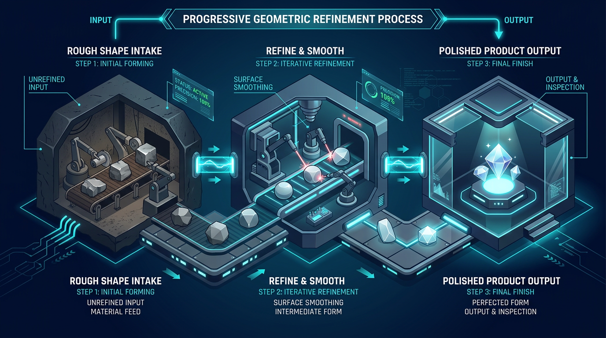
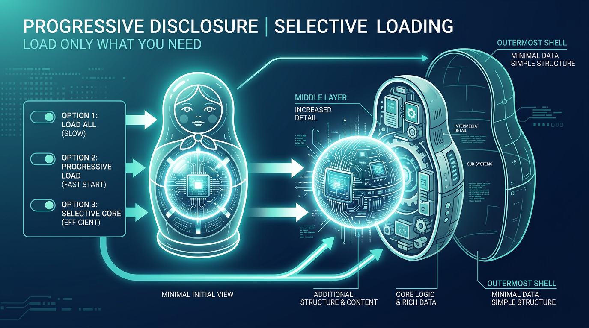
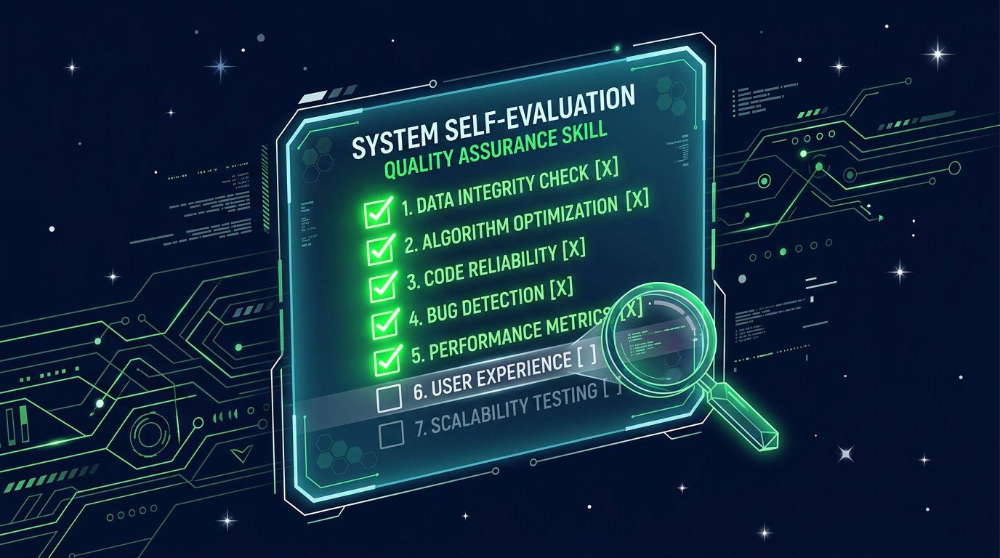
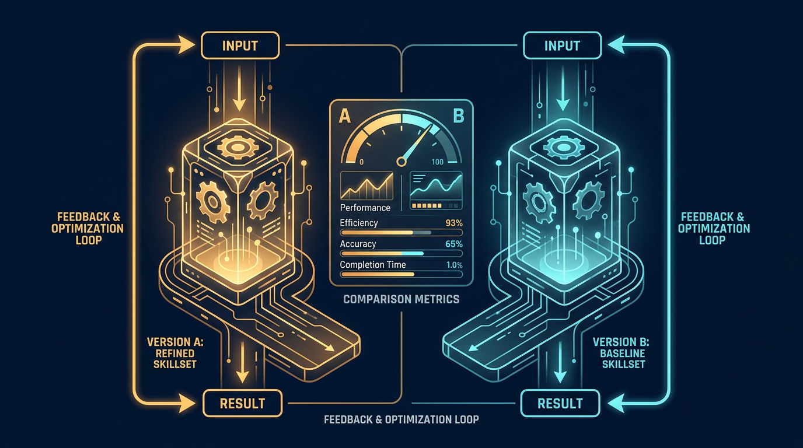

Skill 工程
写给 AI 时代的技能设计指南
Skill 工程
写给 AI 时代的技能设计指南
The Art of Skill Engineering: A Practical Guide to Crafting AI Agent Skills
Skill 工程：写给 AI 时代的技能设计指南
The Art of Skill Engineering: A Practical Guide to Crafting AI Agent Skills
© 2025 zhengfeng. All rights reserved.
CHAPTER 1
Motto: “一个 SKILL.md 文件就是全部的开始”
你已经用过 AI 编程工具——Claude Code、Cursor、Qoder。你知道它们能读文件、写代码、跑命令。但每次你让 Agent 做同样的事——“按我们团队规范审查代码”、”用这个模板写提交信息”——你都得重新描述一遍。本章你将写出第一个 Skill，让 Agent 永远记住你的工作流程。
你在用 AI 编程工具做代码审查。第一次，你花了 5 分钟描述你的审查标准：
帮我审查这段代码。注意以下几点：
1. 检查是否有安全漏洞（SQL 注入、XSS、路径遍历）
2. 检查错误处理是否完善
3. 检查命名是否符合我们的规范（camelCase）
4. 每个问题用这个格式输出：
[severity: high/medium/low]
文件: xxx
问题: xxx
建议: xxx
Agent 做得不错。
第二天，你又需要审查代码。你又输入了类似的内容——但这次你漏掉了”安全漏洞”那一条，因为你记不清昨天写了什么。Agent 自然也就没检查安全问题。
第三天，你的同事也想用同样的标准。你把昨天的 Prompt 发给他——但他觉得格式不够好，自己改了一版。现在团队里有两套不同的审查标准。
这就是知识没有持久化的问题。你的审查标准存在聊天记录里，分散、不一致、不可复用。
我们需要一种方式，把这些”专家知识”从对话中提取出来，变成一个 Agent 随时可以加载的文件。这就是 Skill。
Skill 是一个文件夹，核心是一个 SKILL.md 文件。它用结构化的格式，告诉 Agent “当你需要做某件事时，按照这些指令来”。
~/.qoder/skills/ ← Skill 存放目录（Claude Code 为 ~/.claude/skills/）
└── code-review/ ← 一个 Skill = 一个文件夹
└── SKILL.md ← 核心文件：指令 + 元数据
Agent 启动时会扫描这个目录，读取每个 Skill 的名称和简介（大约 100 tokens），注入到自己的上下文中。当用户的请求匹配某个 Skill 的描述时，Agent 会主动加载该 Skill 的完整内容，然后按照指令执行。
这个过程完全自动——你不需要手动告诉 Agent “请加载 code-review 技能”。Agent 自己判断。
┌─────────────────────────────────────────┐
│ Agent 上下文 │
│ │
│ System Prompt + 工具列表 │
│ │
│ 可用 Skills: │
│ • code-review: 审查代码质量... │ ← Layer 1: 只有名字和简介
│ • commit-msg: 生成提交信息... │ (~100 tokens/skill)
│ │
└────────────────┬────────────────────────┘
│
│ 用户: "帮我审查 app.py"
│ Agent 判断: 这需要 code-review
↓
┌──────────────┐
│ 加载 Skill │ ← Layer 2: 读取完整内容
└──────┬───────┘ (~2000 tokens)
↓
┌────────────────────────┐
│ code-review/ │
│ SKILL.md 完整内容 │
│ 审查清单、输出格式... │
└────────────────────────┘
这就是 Skill 系统的核心设计：两层注入，按需加载。Layer 1 永远在线但极轻量，Layer 2 只在需要时才加载。Agent 自己决定何时需要什么知识。
一个 SKILL.md 文件由两部分组成：
---
name: quick-fix
description: 快速修复代码中的小 Bug。当用户报告一个简单的 Bug 或错误时使用。
---
# Quick Fix
当用户报告一个 Bug 时，按以下步骤操作：
1. 用 Read 工具读取相关代码文件
2. 定位 Bug 的根因
3. 用 Edit 工具修复 Bug
4. 解释你做了什么修改以及为什么
YAML Frontmatter（两行 --- 之间的部分）是给机器读的元数据：
name: Skill 的唯一标识符。小写字母、数字、连字符。description: Skill 的简介。这是 Agent 在 Layer 1 唯一能看到的信息——它决定了 Agent 是否加载这个 Skill。我们会在第 2 章深入讨论 description 的重要性。Markdown Body（frontmatter 之后的部分）是给 Agent 读的指令。当 Skill 被加载（Layer 2），Agent 会读到这些内容并按照执行。
就这么简单。10 行，一个文件，一个文件夹。
注意
YAML Frontmatter 是 Markdown 文件开头的元数据块，被广泛用于静态站点生成器（Jekyll, Hugo）和文档系统。如果你不熟悉，只需要记住：两行 --- 之间写 key: value 对。
在 AI 编程工具的生态中，有多种方式给 Agent 注入知识。理解它们的区别，才能知道什么时候该用 Skill：
| 方式 | 持久性 | 加载时机 | 适用场景 |
|---|---|---|---|
| 对话 Prompt | 本次对话 | 手动每次输入 | 一次性指令 |
| System Prompt | 每次对话自动 | 启动时全部加载 | 全局规则（如编码规范） |
| CLAUDE.md / AGENTS.md | 项目级持久 | 进入目录时自动加载 | 项目特定的规则和上下文 |
| Skill | 永久持久 | Agent 按需加载 | 可复用的程序化知识 |
| MCP Server | 永久持久 | 按需调用 | 外部数据源和 API |
Skill 的独特定位是：可复用、跨项目、按需加载的程序化知识。
把它想象成一本工具书的书架。System Prompt 是你桌上一直打开的那本；CLAUDE.md 是当前项目的说明书；Skill 是书架上的工具书——你知道它们在那里，需要时拿下来翻一翻。
让我们动手创建 quick-fix Skill。
Step 1: 创建目录
根据你使用的工具，Skill 的存放位置不同：
# Qoder
mkdir -p ~/.qoder/skills/quick-fix
# Claude Code
mkdir -p ~/.claude/skills/quick-fix
Step 2: 写入 SKILL.md
在 quick-fix/ 目录下创建 SKILL.md 文件：
---
name: quick-fix
description: 快速修复代码中的小 Bug。当用户报告一个简单的 Bug、错误、或 typo 时使用。
---
# Quick Fix
当用户报告一个 Bug 或错误时，按以下步骤操作：
1. 先确认 Bug 的表现：用户看到了什么错误？期望的行为是什么？
2. 用 Read 工具读取相关代码文件
3. 定位 Bug 的根因——不要只修表面症状
4. 用 Edit 工具做最小修改来修复 Bug
5. 解释你做了什么修改以及为什么这样修
## 约束
- 只修复用户报告的 Bug，不要顺便重构其他代码
- 如果修复涉及多个文件，逐一说明每个文件的改动
- 如果 Bug 的根因不明确，先询问用户更多信息，不要猜测
Step 3: 验证
重启你的 AI 编程工具（大多数工具需要重启才能扫描新 Skill），然后输入：
帮我修一下 app.py 里第 42 行的空指针错误
观察 Agent 的行为。如果一切正常，Agent 应该会：
quick-fix Skill 的 description提示
如果 Agent 没有加载你的 Skill，检查两件事：(1) 文件路径是否正确；(2) YAML Frontmatter 格式是否正确（注意 --- 后面不能有多余的空格）。
理解 Skill 从”躺在磁盘上”到”被 Agent 使用”的完整过程，能帮助你更好地设计 Skill。
Agent 启动时，扫描 Skills 目录。对每个 Skill，它只读取 YAML Frontmatter 中的 name 和 description，不读正文。
# 伪代码：Agent 扫描 Skills
for folder in skills_directory:
skill_md = folder / "SKILL.md"
meta = parse_frontmatter(skill_md) # 只读 name + description
available_skills.append({
"name": meta["name"],
"description": meta["description"][:100], # 截断到 100 字
"path": skill_md,
})
扫描结果被拼接到 Agent 的上下文中：
可用技能:
- quick-fix: 快速修复代码中的小 Bug。当用户报告一个简单的 Bug、错误、或 typo 时使用。
- code-review: 审查代码质量，检查安全、性能、可读性问题...
每个 Skill 在这里只占约 100 tokens。即使你有 20 个 Skill，也只多占约 2000 tokens——对于 200K token 上下文窗口来说微不足道。
当用户发送消息，Agent 会在处理请求前，根据 Layer 1 的摘要判断：这个请求需要加载哪个 Skill 吗？
这个判断完全由 LLM 完成——不是关键词匹配，而是语义理解。所以 description 的写法至关重要：它不需要包含用户会说的每一个词，但需要准确描述 Skill 的用途，让 LLM 能正确联想。
如果 Agent 决定需要某个 Skill，它调用 load_skill 工具，读取完整的 SKILL.md 正文（去掉 Frontmatter）。完整内容作为 tool result 进入对话历史。
[Skill: quick-fix]
# Quick Fix
当用户报告一个 Bug 或错误时，按以下步骤操作：
1. 先确认 Bug 的表现...
...
加载后，Agent 就有了完整的指令，可以按步骤执行了。
Agent 按照 Skill 正文中的指令，结合用户的具体请求，开始工作。在执行过程中，Skill 的指令相当于临时的”行为准则”——Agent 会尽量遵循，但也会根据实际情况做判断。
Important: Skill 不是硬编码的程序。Agent 不会盲目执行每一步——它理解指令的意图，并根据上下文灵活应用。这是 Skill 和脚本的根本区别：Skill 指导的是一个有判断力的 Agent，而脚本控制的是一个无判断力的机器。
从本章开始，你将在整本书中逐步构建一个 Skill 工具箱。每一章你都会写出一个新的 Skill（或改进一个已有的 Skill），到最后你会拥有一整套自己设计的、经过验证的 Skill。
我建议在你的电脑上创建一个专门的目录来跟随本书实践：
mkdir -p ~/skill-workshop/skills
每章的产出都放在这个目录下。你可以用 Git 管理版本，这样可以追踪每个 Skill 的演进过程——从第 2 章的 code-review v1 到第 9 章的 v3，你会看到同一个 Skill 如何随着你的技巧提升而不断进化。
| Before This Chapter | After This Chapter |
|---|---|
| 每次重新描述需求 | Skill 文件持久化知识 |
| 知识散落在聊天记录里 | 结构化存储在 SKILL.md 中 |
| 不了解 Skill 是什么 | 理解 Skill 的结构和生命周期 |
Cumulative capability: 你理解了 Skill 的核心概念，创建了第一个 quick-fix Skill，并亲眼看到 Agent 自动发现和加载它。
完整代码见
code/track-1/ch01-quick-fix/，可直接复制到~/.qoder/skills/使用。Track 2 演进：查看
code/track-2/v01-basic/SKILL.md——这是 skill-creator 的起点， 仅 13 行的极简骨架。
Verify: 创建 quick-fix Skill，然后向 Agent 报告一个小 Bug（比如一个变量名拼错），观察 Agent 是否按照 Skill 的步骤执行。
Extend: 故意把 SKILL.md 的 Frontmatter 格式写错（比如少一行 ---），看 Agent 还能不能识别到这个 Skill。然后修复它。
Explore: 列出你日常工作中最常对 AI 重复的 3 件事。哪些适合做成 Skill？哪些更适合写进 CLAUDE.md / AGENTS.md？用本章学到的对比表做判断。
SKILL.md 文件CHAPTER 2
Motto: “Agent 看不到你的 Skill 内容，只看到 description”
你已经写出了第一个 Skill，Agent 也成功加载了它。但你有没有想过：Agent 是怎么决定”现在需要加载这个 Skill”的？答案藏在一个你可能随手写完的字段里——
description。本章你将深入理解 description 的工作原理，并通过反复实验，掌握写出精准 description 的技巧。
你写了一个 code-review Skill，description 是这样的：
---
name: code-review
description: 代码相关的技能
---
然后你让 Agent “帮我审查 app.py 的代码质量”。
Agent 没有加载你的 Skill。它用自己内置的知识做了一份平庸的审查。
你很困惑——Skill 明明在那里，为什么 Agent 不用？
问题出在 description。”代码相关的技能”这六个字太模糊了。Agent 在扫描到这个描述时，没有足够的信息判断它和”代码审查”之间的关系。毕竟，”代码相关”可以是写代码、删代码、格式化代码、生成文档——Agent 不确定，就选择不加载。
description 是 Agent 在 Layer 1 唯一能看到的信息。如果这一行写不好，后面的指令写得再完美也没用——因为 Agent 根本不会去读它们。
我们需要把 description 当作一个搜索引擎的索引词来对待。它的目标不是”描述 Skill 是什么”，而是”让 Agent 在正确的时机匹配到这个 Skill”。
这意味着 description 需要回答三个问题：
当 Agent 启动时，它把所有 Skill 的 description 拼接成一段文本，放在自己的上下文里：
可用技能（用 load_skill 工具按需加载）:
- code-review: 审查代码质量，检查安全、性能、可读性问题...
- quick-fix: 快速修复代码中的小 Bug...
- commit-msg: 生成规范的 Git 提交信息...
当用户发送请求时，LLM 会”阅读”这段列表，然后做一个判断：当前请求是否需要加载某个 Skill？
这个判断不是关键词匹配——它是语义理解。LLM 理解”帮我看看这段代码有没有问题”和”审查代码质量”是同一个意思，即使用词完全不同。
但语义理解也有边界。如果 description 太模糊（”代码相关”），LLM 的置信度不够高，就不会触发加载。如果 description 太窄（”检查 Python 函数的 type hints”），那用户说”审查代码”时也不会匹配。
关键洞察：description 不是给人读的文档——它是给 LLM 读的触发条件。你需要站在 LLM 的角度思考：看到这段描述和用户的请求，我能不能确定它们匹配？
每个 Skill 的 description 在 Layer 1 大约占 50-100 tokens。这意味着：
让我们看 5 组真实的对比。每一组都是同一个 Skill 的两个 description 版本：
# 坏
description: 代码相关的技能
# 好
description: 审查代码质量，检查常见问题（安全、性能、可读性），提供改进建议。当用户请求代码审查、review、CR 时使用。
坏在哪里？”代码相关”覆盖面太广——写代码、读代码、删代码都是”代码相关”。LLM 无法从中判断这个 Skill 是干什么的。
好在哪里？ - “审查代码质量”——明确的动作 + 对象 - “（安全、性能、可读性）”——具体的检查维度，帮助 LLM 理解深度 - “当用户请求代码审查、review、CR 时使用”——列出了触发关键词
# 坏
description: 帮助写 Git 相关的东西
# 好
description: 生成规范的 Git commit message。分析 staged changes，按照 Conventional Commits 格式生成提交信息。当用户提交代码或请求写 commit message 时使用。
坏在哪里？”Git 相关的东西”可以是 branch 操作、merge 冲突解决、rebase——太多可能性。
好在哪里？ - “生成规范的 Git commit message”——精确到具体产出 - “分析 staged changes”——描述了输入 - “Conventional Commits 格式”——指定了规范
# 坏
description: 测试
# 好
description: 为 Python/TypeScript 函数生成单元测试。分析函数签名和行为，生成覆盖正常路径、边界条件和错误处理的测试用例。使用 pytest/vitest 框架。
一个字的 description 等于没有 description。
# 坏
description: 可以写各种文档
# 好
description: 为 REST API 端点生成 OpenAPI 格式的文档。分析路由代码，提取参数、响应格式、错误码，生成结构化 API 文档。
“各种文档”让 LLM 在任何涉及文档的请求中都可能加载这个 Skill——包括写 README、写注释、写用户手册。这不是你想要的。精确描述”什么类型的文档”才能避免误触发。
# 坏
description: 部署应用
# 好
description: 检查应用的部署就绪状态。验证环境变量、依赖版本、数据库迁移、健康检查端点，生成部署前 checklist。当用户准备部署或想确认部署条件时使用。
“部署应用”暗示这个 Skill 会执行部署——但它实际上只是检查就绪状态。好的 description 准确描述 Skill实际做的事，而不是它所属的领域。
经过上面的对比，我们总结出一个简单的方法论：
用”动词 + 宾语”的格式写出核心动作。
审查代码质量
生成 Git commit message
为函数生成单元测试
检查部署就绪状态
警告
避免使用”帮助”、”处理”、”管理”这类模糊动词。”帮助用户处理代码问题”不如”审查代码质量”清晰。
添加触发条件。这可以是： - 用户可能说的话：”当用户请求代码审查时” - 任务类型：”当需要生成 API 文档时” - 同义词覆盖：”review、CR、code review”
审查代码质量，检查安全/性能/可读性问题。当用户请求代码审查、review、CR 时使用。
如果有空间，添加帮助 LLM 理解深度和范围的细节：
审查代码质量，检查常见问题（安全、性能、可读性），提供改进建议和严重度评级。当用户请求代码审查、review、CR 时使用。
提示
把你的 description 读给一个不了解这个 Skill 的人听。如果他能准确说出”这个 Skill 是做什么的”和”什么时候应该用它”，你的 description 就写得足够好了。
学会了三步法后，你可能会倾向于写非常精确的 description——毕竟精确意味着不会误触发。但 Anthropic 在大规模实践中发现了一个反直觉的问题：
模型倾向于”欠触发”（under-trigger）——在应该使用 Skill 的时候不去使用它。
为什么？因为 Agent 只会在它无法独立完成任务时才会咨询 Skill。对于简单的请求，即使 description 完美匹配，Agent 也可能认为”我自己能搞定”而跳过 Skill。
Anthropic 的建议是让 description 写得”稍微 pushy（积极）一些”——覆盖面比你直觉中的要更广：
# 保守的 description（容易欠触发）
description: How to build a simple dashboard to display internal data.
# Pushy 的 description（减少欠触发）
description: >
How to build a simple fast dashboard to display internal data.
Make sure to use this skill whenever the user mentions dashboards,
data visualization, internal metrics, or wants to display any kind
of data, even if they don't explicitly ask for a "dashboard."
注意 pushy 版本做了什么： - 扩展了触发词：dashboards, data visualization, internal metrics - 降低了触发门槛：even if they don’t explicitly ask for a “dashboard” - 覆盖了间接表述：wants to display any kind of data
| Skill 类型 | 推荐策略 | 原因 |
|---|---|---|
| 强制规范类（commit-message, code-review） | Pushy | 如果不触发，用户会得到不符合团队规范的输出 |
| 工具类（pdf, docx, xlsx） | 适度 Pushy | 这类任务 Agent 通常能自己做，但 Skill 版本更好 |
| 辅助类（brainstorm, explain） | 保守 | 误触发的干扰比漏触发的损失更大 |
提示
如果你发现一个 Skill 经常不被加载，先检查 description 是否太保守，然后再考虑是否是指令问题。欠触发是 Skill 系统最常见的 failure mode。
让我们通过一个完整的迭代过程，看 description 如何从 v1 进化到 v3。
---
name: code-review
description: 代码审查
---
两个字。Agent 的反应：偶尔加载，偶尔不加载。当用户明确说”审查代码”时能匹配，但说”帮我看看这段代码有没有问题”时就不一定了。
问题诊断：太短，缺少上下文。LLM 需要更多信息来判断匹配置信度。
---
name: code-review
description: 审查代码质量，检查常见问题，提供改进建议
---
进步了——“审查代码质量”是清晰的动作，”检查常见问题”扩展了范围，”提供改进建议”说明了输出。
但测试发现：当用户说”这段代码安全吗？”时，Agent 不会加载。因为 description 里没有提到”安全”。
问题诊断：缺少具体的检查维度，也缺少触发关键词。
---
name: code-review
description: 审查代码质量，检查常见问题（安全、性能、可读性），提供改进建议。当用户请求代码审查、review、CR、检查代码质量时使用。
---
这个版本在以下所有请求中都能正确触发：
关键改进： 1. 括号里列出了具体维度（安全、性能、可读性），覆盖了用户可能从任一维度提问 2. 最后的触发词列表（审查、review、CR、检查代码质量）覆盖了多种表述方式
Andrej Karpathy 是 Skill 社区的早期倡导者。他的 Skill 设计哲学可以用一句话概括：
“一个好的 Skill 就是一个好的 SOP（标准操作流程）。”
观察 Karpathy 风格的 Skill，他们的 description 有几个共同特点：
```yaml # Karpathy 风格 description: Write comprehensive unit tests for Python functions, covering edge cases and error paths.
# 不好的写法 description: A skill for unit testing. ```
简洁但完整：一句话包含动作、对象、关键细节
第三人称：描述 Skill 的能力，而不是对 Agent 下命令
```yaml # 好: 描述能力 description: Generate conventional commit messages by analyzing git diff output.
# 不好: 下命令 description: You should generate commit messages when asked. ```
注意
Karpathy 的 Skill 设计理念和他对 AI 系统的整体思考一致——简洁、实用、不过度工程。如果你能用 30 个词写完 description，就不要用 60 个。
避免以下错误：
description: 帮助开发
问题：几乎所有开发相关的请求都可能匹配，导致频繁误触发。
description: 实现基于 AST 解析的静态代码分析，利用 tree-sitter 语法树遍历检测潜在的代码质量问题
问题：用户不会说”我需要 AST 解析”。description 应该用用户的语言，而不是实现细节的语言。
description: 按照 2024 年最新的 React 19 规范审查前端代码
问题：版本号会过时。description 应该描述永恒的能力，而不是绑定到特定版本。
description: 审查代码质量。首先读取文件，然后检查安全性（SQL 注入、XSS、CSRF），接着检查性能（N+1 查询、不必要的循环），然后检查可读性（命名规范、函数长度），最后输出格式化的报告，包含严重度、文件路径、问题描述和改进建议。
问题：description 不是指令的摘要——它是触发条件。不需要包含执行细节。
description: 审查代码质量，生成测试用例，编写 API 文档，重构代码结构
问题：违反单一职责。如果一个 Skill 做四件事，它应该被拆成四个 Skill。混合的 description 会导致错误的触发——用户想写文档时加载了审查指南。
每次写完 description，用以下清单自检：
- [ ] 包含明确的动作（审查/生成/检查/创建）
- [ ] 包含明确的对象（代码/文档/测试/配置）
- [ ] 描述了触发场景或关键词
- [ ] 长度在 50-150 字之间
- [ ] 不包含实现细节
- [ ] 不包含时效性信息
- [ ] 用用户的语言写，不用技术实现的语言
- [ ] 只描述一个核心功能（单一职责）
本章的技巧都是手动的——你根据经验和检查清单写 description，然后人工测试触发率。但 Anthropic 的 Skill-Creator 提供了一个更系统的方法：自动化 description 优化循环。
核心思路是：
这个方法特别值得注意的一点：should-not-trigger 的查询必须是近似误匹配（和 Skill 相关但不应触发），而非明显无关的请求。因为明显无关的查询不会触发任何 Skill，测试它们毫无意义。
我们会在第 10 章《测试与调优》中详细展开这个方法。如果你现在就想优化 description，先用本章的手动方法——它已经能覆盖 80% 的场景。
| Before This Chapter | After This Chapter |
|---|---|
| description 随手写几个字 | 用三步法写出精准的 description |
| 不理解为什么 Skill 不被加载 | 理解 description 是唯一的触发条件 |
| 没有评估 description 质量的标准 | 掌握检查清单和反模式识别 |
| 不知道 Skill 为什么”该触发却没触发” | 理解欠触发问题和 pushy 策略 |
Cumulative capability: 你现在能写出精准的 description，让 Skill 在正确的时机被正确地加载。code-review Skill 从 v1 演进到了 v3。
完整代码见
code/track-1/ch02-code-review/，可直接复制到~/.qoder/skills/使用。Track 2 演进：对比
code/track-2/v01-basic/SKILL.md和code/track-2/v02-description/SKILL.md的 diff， 观察 description 从 5 字增长到 100+ 字的变化。
Verify: 为你的 quick-fix Skill 重写 description，使用三步法。然后用 5 种不同的措辞请求修 Bug（”帮我修个 Bug”、”这里有个错误”、”fix this issue”、”代码报错了”、”这个函数有问题”），记录每种措辞是否触发了 Skill 加载。
Extend: 创建 code-review Skill 的 v1、v2、v3 三个版本（放在不同目录下），同样的审查请求，分别测试三个版本的触发率。记录数据。
Explore: 打开 skill-of-skills 目录 (https://github.com/the911fund/skill-of-skills)，随机浏览 10 个 Skill 的 description。用本章的检查清单评估它们，找出 3 个好的和 3 个可以改进的。
Pushy Test: 选一个你现有的 Skill，用 pushy 策略重写 description。对比重写前后的触发率——特别是那些间接表述（用户没有明确说出 Skill 名称）的场景。
CHAPTER 3
Motto: “模糊的指令产生模糊的结果”
description 让 Skill 被正确加载——这解决了”什么时候用”的问题。但 Skill 正文的指令质量决定了 Agent 执行得好不好——这是”怎么用”的问题。本章你将学会区分”模糊指令”和”可执行指令”，并掌握结构化指令写作的五个要素。
你写了一个生成 Git 提交信息的 Skill。正文是这样的：
# Commit Message Generator
帮用户写好的 Git 提交信息。要求信息清晰、规范、有用。
Agent 加载了这个 Skill，然后生成了这样的提交信息：
Updated some files and fixed a bug
这不是你想要的。你想要的是类似这样的：
fix(auth): resolve token expiration check in middleware
The JWT validation was comparing timestamps in different timezones,
causing premature token rejection for users in UTC+ regions.
Closes #1234
问题出在哪里？你的指令太模糊了。”写好的”——什么叫好？”清晰”——怎样算清晰？”规范”——什么规范？Agent 没有读心术，它只能从你写的指令中获取信息。你给了三个形容词，但没有给任何可操作的步骤。
可执行的指令和模糊的指令之间的区别，就像菜谱和”做一道好吃的菜”之间的区别。菜谱告诉你：用什么食材、放多少量、什么顺序、火候多大、做多久。”做一道好吃的菜”则把所有决策都留给执行者。
我们的目标是把 Skill 的指令写成菜谱——具体、有序、可验证。
指令的可执行性不是非黑即白的，它是一个光谱：
模糊 ←──────────────────────→ 精确
"写好的代码" "遵循规范" "按这些步骤" "用这个模板" "运行这个脚本"
↑ ↑ ↑ ↑ ↑
Agent 全靠猜 Agent 部分猜 Agent 有方向 Agent 有模板 完全确定性
你不一定总是需要最精确的那端。关键是根据任务的脆弱度选择合适的精确度。我们把这叫做自由度匹配——不同类型的任务需要不同程度的指令约束。
想象两种场景：一座独木桥（窄桥），你必须精确地走每一步；一片草地（开阔地），你只需要知道方向就行。Skill 的指令设计也一样：
| 任务类型 | 自由度 | 指令风格 | 典型场景 |
|---|---|---|---|
| 窄桥型 — 确定性操作 | 低 | 精确命令序列，每步一个动作 | 数据库迁移、安全修复、部署脚本、格式化输出 |
| 开阔地型 — 知识性任务 | 高 | 方向性指引，给目标不给路径 | 代码审查、设计方案、创意写作、架构建议 |
| 工具依赖型 — 条件分支 | 中 | 条件判断 + 分支路径 | 多平台适配、环境检测、模式选择 |
提示
判断方法很简单——如果输出格式错误会导致流程中断（比如提交信息不符合 CI/CD 规则），那就是窄桥型任务，需要精确模板。如果输出是给人阅读的（比如代码审查意见），那就是开阔地型，给方向就好。
窄桥型任务的指令看起来像操作手册：
## 执行步骤
1. 运行 `git diff --cached` 查看 staged changes
2. 确定类型：feat / fix / refactor / docs / test / chore
3. 按模板生成：`<type>(<scope>): <summary>`
开阔地型任务的指令看起来像设计简报：
## 审查方向
- 重点关注安全性和正确性
- 风格问题只在严重影响可读性时才提
- 给出具体的改进建议，而非笼统的评论
选错自由度的后果：窄桥型任务给太多自由，Agent 会产出不可预测的格式；开阔地型任务约束太死，Agent 会变成一个无聊的模板填充机。
让我们用 commit-message Skill 做一个完整的对比。
---
name: commit-message
description: 生成规范的 Git commit message。分析 staged changes，按 Conventional Commits 格式输出。
---
# Commit Message Generator
帮用户写好的 Git 提交信息。要求信息清晰、规范、有用。
注意事项：
- 信息要简洁
- 要说明改了什么
- 格式要规范
问题清单： - “好的”——没定义标准 - “清晰”——没给示例 - “规范”——没指定哪个规范 - “简洁”——多短算简洁？ - “说明改了什么”——怎么分析？看 diff？看文件名？
---
name: commit-message
description: 生成规范的 Git commit message。分析 staged changes，按 Conventional Commits 格式输出。当用户提交代码或请求生成 commit message 时使用。
---
# Commit Message Generator
分析 Git staged changes，生成符合 Conventional Commits 规范的提交信息。
## 执行步骤
1. 运行 `git diff --cached` 查看 staged changes
2. 分析改动，确定：
- **类型**：feat / fix / refactor / docs / test / chore / style / perf
- **范围**：受影响的模块或组件名（如 auth, api, ui）
- **摘要**：一句话描述改动（不超过 50 字符，不以句号结尾）
3. 如果改动较复杂，添加 body 段落（空一行后）解释 **为什么** 做这个改动
4. 如果有关联的 Issue，添加 footer：`Closes #123`
## 输出格式
## 示例
输入（git diff 结果）：
```diff
--- a/src/auth/middleware.js
+++ b/src/auth/middleware.js
@@ -42,7 +42,7 @@
- const isExpired = token.exp < Date.now()
+ const isExpired = token.exp * 1000 < Date.now()
输出：
fix(auth): correct token expiration timestamp comparison
JWT exp field uses seconds since epoch, but Date.now() returns
milliseconds. Multiplying by 1000 before comparison prevents
premature token rejection.
git add
对比一下：模糊版本 20 行，可执行版本 50 行。但可执行版本的每一行都在消除歧义、锚定行为。
## 3.3 结构化指令的五个要素
通过分析大量优秀 Skill 的正文，我总结出结构化指令的五个核心要素：
### 要素 1: 角色声明
告诉 Agent 它在这个 Skill 中扮演什么角色。这不是必须的，但对于需要特定"人格"的 Skill 很有用。
```markdown
# 好的角色声明
你是一个严格的代码审查者。你的目标是发现潜在的 Bug 和安全漏洞，而不是挑剔代码风格。
# 不好的角色声明
你是一个非常厉害的 10x 工程师，世界上最好的代码审查专家。
好的角色声明是功能性的——它定义了行为边界（”严格”、”发现 Bug 而非挑剔风格”）。坏的角色声明是装饰性的——“非常厉害”不会让 Agent 表现更好。
警告
不要把角色声明当作万灵药。Agent 的表现主要取决于指令的质量，而不是你给它安排了什么角色。
编号的步骤列表，每步一个明确的动作。这是 Skill 正文中最重要的部分。
## 执行步骤
1. 读取目标文件
2. 识别所有公开函数和类
3. 对每个公开函数：
a. 检查是否有 docstring
b. 如果没有，根据函数签名和实现生成 docstring
c. 如果有，检查是否与实现一致
4. 用 Edit 工具插入/更新 docstring
5. 输出修改摘要
步骤序列的写法原则： - 每步一个动作：不要把两件事塞在一步里 - 动词开头：读取、检查、生成、输出 - 顺序清晰：前一步的输出是后一步的输入 - 可跳过的条件：用 “如果…则…” 处理分支
明确告诉 Agent 输出应该长什么样。可以是模板、示例、或格式描述。
## 输出格式
对每个问题使用以下格式：
[severity: high | medium | low]
文件: <file_path>
行数: <start_line>-<end_line>
问题: <一句话描述问题>
建议: <具体的修复建议>
输出格式越精确，输出的一致性越高。第 6 章会深入讨论模板锚定技巧。
告诉 Agent “不要做什么”和”边界在哪里”。约束条件消除了 Agent 自行决策时可能犯的错误。
## 约束
- 只审查 staged 文件，不要审查未暂存的改动
- 不要自动修复问题——只报告和建议
- 每个文件最多报告 10 个问题，优先报告高严重度的
- 如果无法判断严重度，标记为 medium
约束条件的写法： - 具体的数字：”最多 10 个”而不是”不要太多” - 明确的边界：”只审查 staged 文件”而不是”注意范围” - 默认行为：”如果无法判断，标记为 medium”
告诉 Agent 怎么判断自己做得好不好。这是高级技巧，但对提升输出质量有显著效果。
## 质量标准
一个好的提交信息：
- 看了标题就知道改了什么（不需要看 diff）
- body 解释的是"为什么"而不是"做了什么"
- 回顾时能理解当时的决策背景
判断标准不是检查清单（那是第 9 章的内容），而是质量的定义——让 Agent 知道”好”长什么样。
综合五个要素，这是最终的 commit-message Skill：
---
name: commit-message
description: 生成规范的 Git commit message。分析 staged changes，按 Conventional Commits 格式输出。当用户提交代码或请求生成 commit message 时使用。
---
# Commit Message Generator
你是一个注重清晰沟通的工程师。你的目标是写出让三个月后的自己（或同事）都能立刻理解的提交信息。
## 执行步骤
1. 运行 `git diff --cached --stat` 查看 staged 文件列表
2. 如果没有 staged changes，提醒用户先 `git add`，然后停止
3. 运行 `git diff --cached` 查看详细改动
4. 分析改动，确定：
- **类型**：从以下选择最匹配的
- `feat`: 新功能
- `fix`: Bug 修复
- `refactor`: 重构（不改变行为）
- `docs`: 文档变更
- `test`: 测试相关
- `chore`: 构建/配置/依赖
- `style`: 格式调整（空格、分号等）
- `perf`: 性能优化
- **范围**：受影响的模块/目录名
- **摘要**：一句话描述核心改动
5. 判断是否需要 body：如果改动的"为什么"不显而易见，添加 body
6. 检查是否有关联 Issue（通过 branch 名或 diff 中的注释推断）
## 输出格式
<type>(<scope>): <summary>
<空行>
<body: 1-3 句话解释 WHY>
<空行>
<footer: Closes #xxx 或 Refs #xxx>
## 示例
### 简单修复
输入：修改了一行代码，修复了时区相关的 Bug
输出：
fix(auth): correct token expiration timestamp comparison
JWT exp field uses seconds since epoch, but Date.now() returns
milliseconds. Multiplying by 1000 prevents premature token rejection.
### 新功能
输入：添加了多个文件，实现了用户导出功能
输出：
feat(export): add CSV export for user data
Users can now export their profile data as CSV from the settings page.
Includes all non-sensitive fields with proper UTF-8 encoding.
Closes #456
## 约束
- 标题行不超过 50 字符
- body 每行不超过 72 字符
- 不要在标题末尾加句号
- 使用祈使语气："add" 不是 "added"，"fix" 不是 "fixed"
- 如果改动涉及多个不相关的功能，建议用户拆分为多次提交
- 不要猜测 Issue 号——只在有明确证据时才添加 footer
## 质量标准
一个好的提交信息：
- 看了标题就知道改了什么（不需要看 diff）
- body 解释的是"为什么"而不是"做了什么"（diff 已经说明了"做了什么"）
- 三个月后回看能理解当时的决策背景
对比第一版的 20 行模糊版本，这个 Skill 有了： - 明确的步骤（6 步） - 精确的输出格式 - 具体的示例（2 个不同场景） - 具体的约束（6 条限制） - 质量标准（3 个判断维度）
五个要素不意味着每个 Skill 都必须全部包含。过度工程化的指令和模糊指令一样有问题——它会让 Agent 迷失在细节中。
| Skill 复杂度 | 建议包含的要素 |
|---|---|
| 简单（10-30 行） | 步骤序列 + 约束 |
| 中等（30-100 行） | 步骤序列 + 输出格式 + 约束 |
| 复杂（100+ 行） | 全部五个要素 |
对于 quick-fix 这样的简单 Skill，不需要角色声明和质量标准——它的步骤本身就足够清晰。只有当任务复杂到 Agent 需要”判断力”时，才需要角色声明和质量标准。
# 坏
Python 是一种动态类型语言。在 Python 中，函数用 def 关键字定义。
列表用方括号 [] 表示。字典用花括号 {} 表示。
现在，请为以下函数生成单元测试...
# 好
为以下函数生成单元测试...
Agent 已经知道 Python 语法。不要浪费 tokens 教它基础知识。
# 坏
你可以使用 Read 工具来读取文件。Read 工具接受一个文件路径参数，
返回文件的内容。你也可以使用 Edit 工具来修改文件...
# 好
1. 用 Read 读取目标文件
2. 用 Edit 修复问题
Agent 知道自己有什么工具和怎么用它们。只需要告诉它在什么时候用哪个工具。
# 坏
代码审查是软件开发中非常重要的实践。通过代码审查，我们可以提前发现潜在的问题，
提升代码质量，促进团队知识共享。在进行代码审查时，我们应该关注多个方面，
包括但不限于代码的正确性、安全性、可读性和性能...
# 好
## 审查清单
1. **正确性**: 逻辑是否正确？边界条件是否处理？
2. **安全性**: 是否有注入、路径遍历、信息泄露？
3. **可读性**: 命名是否清晰？函数是否过长？
4. **性能**: 是否有 N+1 查询？不必要的循环？
Skill 不是论文，是操作手册。每个句子都应该是可执行的指令或必要的上下文。
# 坏
- 审查要全面，覆盖所有方面
- 审查要简洁，只关注关键问题
Agent 会困惑：到底是全面还是简洁？如果有优先级，明确说出来：”优先检查安全和正确性。只在时间允许时检查代码风格。”
在写了大量 Skill 之后，你可能会养成一个习惯：用大写的 ALWAYS 和 NEVER 来强调关键规则。但 Anthropic 从大规模 Skill 实践中提炼出一个反直觉的洞察：
“Try hard to explain the why behind everything you’re asking the model to do. Today’s LLMs are smart. If you find yourself writing ALWAYS or NEVER in all caps, that’s a yellow flag — reframe and explain the reasoning so that the model understands why the thing you’re asking for is important.”
简单说：不要把 Skill 写成法条，要写成教程。
# 法条式（坏）
ALWAYS use semicolons at the end of statements.
NEVER use tabs for indentation.
MUST include error handling in every function.
# 教程式（好）
We use semicolons because our linter (ESLint) requires them,
and the CI pipeline rejects PRs without them.
Use spaces instead of tabs because our formatter (Prettier) is
configured for 2-space indentation — mixed tabs/spaces cause
diff noise in code review.
Include error handling because this service runs unattended in
production. Silent failures cause data inconsistency that's
hard to debug after the fact.
为什么教程式更好？因为今天的 LLM 有很强的推理能力和”心智理论”。当它理解了原因，它就能在未预见的场景中做出正确判断——比如遇到一个例外情况，法条式的 Agent 会机械执行（或者干脆忽略），而理解了原因的 Agent 会灵活应对。
并非所有场景都不能用强命令。安全边界和不可逆操作值得用 MUST：
# 合理的 MUST
MUST confirm with user before running `DROP TABLE` or `rm -rf`.
判断标准：如果违反这条规则的后果是不可逆的数据丢失或安全风险，用 MUST。如果只是代码风格偏好，解释原因。
| 改写前 (法条式) | 改写后 (教程式) |
|---|---|
ALWAYS write tests before implementation. |
Write tests first because our test suite serves as the spec — it documents expected behavior before code exists. |
NEVER modify files outside the src/ directory. |
Only modify files in src/ — files outside it (config, CI, docs) are maintained by separate workflows and manual edits cause merge conflicts. |
MUST use TypeScript strict mode. |
Use TypeScript strict mode because it catches null-reference bugs at compile time that would otherwise reach production. |
提示
当你在 Skill 中写出 ALWAYS/NEVER 时，把它当作一个信号——暂停，问自己”为什么？”，然后把答案写进去。
如果说”解释 Why”是 Skill 写作的哲学，那么指令语言规范就是手艺。以下是从大量优秀 Skill 中提炼的具体写作规则。
# 祈使句（好）
Read the configuration file.
Run the test suite.
Report only high-severity issues.
# 陈述句（差）
You should read the configuration file.
The test suite needs to be run.
It would be good to focus on high-severity issues.
祈使句直接说”做什么”，陈述句在说”你应该做什么”——多了一层间接性，Agent 的执行力反而下降。
信息密度和可解析性的排序：
# 段落（差 — Agent 需要解析自然语言）
When the user says "scan" or "detect", use SCAN mode to run the
detector. When they say "review" or "fix", switch to REVIEW mode
for interactive fixing. When they say "auto" or "fix all", use
AUTO mode with guardrails enabled.
# 表格（好 — 结构清晰，一目了然）
| User Says | Mode | Action |
|------------------------|--------|---------------------------|
| "scan", "detect" | SCAN | Run detector, save state |
| "review", "fix" | REVIEW | Interactive fix session |
| "auto", "fix all" | AUTO | Batch fix with guardrails |
# 文字描述（差）
输出应该是 JSON 格式，包含一个 status 字段和一个 results 数组。
# 代码示例（好）
输出格式：
{
"status": "success",
"results": [
{"file": "src/auth.ts", "issue": "missing null check", "severity": "high"}
]
}
人类通过对比学习，Agent 也一样。给一个”好的”和一个”坏的”，比给两个”好的”更有效：
❌ `Added new feature` (past tense, capitalized)
✅ `feat: add new feature` (imperative, lowercase)
# 第二人称（避免）
You need to read the session history before analyzing.
# 祈使句（推荐）
Read the session history before analyzing.
“You need to” 不仅浪费 tokens，还可能让 Agent 把这理解为建议而非指令。
SKILL.md 正文的理想长度是 100-300 行（约 500-2000 tokens）。这个范围基于两个限制：
如果你发现 SKILL.md 越写越长，问自己：
| Before This Chapter | After This Chapter |
|---|---|
| 指令写成散文，模糊抽象 | 用五要素写出结构化的可执行指令 |
| Agent 执行结果不可预测 | 输出格式和行为可预期 |
| 不知道指令应该多长 | 理解指令粒度和长度的选择 |
| 用 ALWAYS/NEVER 堆砌规则 | 解释 Why，让 Agent 理解原因后自主判断 |
| 不知道给 Agent 多少自由度 | 用窄桥/开阔地模型匹配任务类型 |
Cumulative capability: 你现在拥有 3 个 Skill（quick-fix、code-review v3、commit-message），并掌握了 description 写作和结构化指令写作两项核心技能。
完整代码见
code/track-1/ch03-commit-message/，可直接复制到~/.qoder/skills/使用。Track 2 演进：对比
code/track-2/v02-description/和code/track-2/v03-five-elements/的 diff， 观察五要素如何将 15 行骨架扩展为 38 行结构化指令。
Verify: 用改写后的 commit-message Skill 生成 5 条提交信息（对不同类型的改动：Bug 修复、新功能、重构、文档、配置变更）。每条都检查是否符合约束条件。
Extend: 回到第 1 章的 quick-fix Skill，用本章的五要素重写它的正文。对比改写前后 Agent 的行为差异。
Explore: 找一个你觉得 Agent 执行得”不够好”的任务。分析原因：是 description 问题（没加载）还是指令问题（加载了但执行不好）？如果是指令问题，用本章方法重写。
Rewrite: 找出你现有 Skill 中的 3 处 ALWAYS/NEVER/MUST，用”解释 Why”的方式改写。观察 Agent 行为是否改善。
CHAPTER 4

Motto: “把大象装进冰箱需要三步，好的 Skill 也是”
你的 Skill 工具箱里已经有了 3 个单步 Skill。但真实世界的任务——写文档、做审查、创建项目——往往需要更复杂的执行逻辑。本章你将学会 5 种工作流设计模式，并掌握根据任务特性选择最合适模式的方法。
你想写一个生成 API 文档的 Skill。直觉做法是：
# API Doc Writer
阅读源代码中的 API 端点，为每个端点生成 OpenAPI 格式的文档，包含参数说明、响应格式、错误码和使用示例。
你让 Agent 对一个有 20 个端点的项目运行这个 Skill。Agent 输出了一份很长的文档——但问题来了：
根本问题是：你把一个多步骤任务压缩成了一步。Agent 需要同时做”分析代码结构”、”理解每个端点”、”生成文档”、”格式化输出”四件事。认知负担太重，结果不可控。
Multi-Pass（多步工作流） 是把复杂任务拆成多个独立阶段的设计模式。每个 Pass：
┌──────────┐ artifact ┌──────────┐ artifact ┌──────────┐
│ Pass 1 │──────────────→│ Pass 2 │──────────────→│ Pass 3 │
│ 分析结构 │ endpoint.md │ 生成文档 │ draft.md │ 格式整合 │
└──────────┘ ↑ └──────────┘ └──────────┘
│
用户确认 ✓
Pass 之间通过交接物（artifact） 传递信息——通常是一个中间文件。关键 Pass 后设置暂停点，等待用户确认。
让我们重写 api-doc-writer 为 3-Pass 版本：
---
name: api-doc-writer
description: 为 REST API 项目生成 OpenAPI 格式的文档。分析路由代码，提取端点、参数、响应格式，生成结构化 API 文档。当用户需要生成或更新 API 文档时使用。
---
# API Documentation Writer
为 REST API 项目生成完整的 API 文档。采用三轮工作流确保准确性和完整性。
## 工作流程
### Pass 1 — 端点发现
1. 搜索项目中的路由定义文件（如 `routes/`, `api/`, `controllers/`）
2. 提取所有 API 端点，记录：
- HTTP 方法（GET/POST/PUT/DELETE）
- 路径（/api/users/:id）
- 所在文件和行号
3. 输出端点清单到 `api-docs/endpoints.md`
4. **暂停**：告知用户发现了多少个端点，请用户确认清单是否完整
### Pass 2 — 文档生成
用户确认端点清单后，对每个端点：
1. 读取端点的完整实现代码
2. 提取：
- 请求参数（path params, query params, body schema）
- 响应格式（成功响应 + 错误响应）
- 认证要求
- 使用示例
3. 按 OpenAPI 风格生成文档
4. 输出到 `api-docs/draft.md`
### Pass 3 — 整合与格式化
1. 读取 `api-docs/draft.md`
2. 添加目录（Table of Contents）
3. 统一格式和术语
4. 检查交叉引用的一致性
5. 输出最终文档到 `api-docs/api-reference.md`
## 输出目录
api-docs/
├── endpoints.md # Pass 1: 端点清单
├── draft.md # Pass 2: 文档草稿
└── api-reference.md # Pass 3: 最终文档
## 约束
- 每个端点的文档不超过 200 行
- 如果项目超过 50 个端点，按模块分文件输出
- 参数类型必须从代码中推断，不要猜测
这个 3-Pass 设计解决了之前的所有问题：
| 问题 | 单步版本 | 3-Pass 版本 |
|---|---|---|
| 遗漏端点 | Agent 中途遗忘 | Pass 1 先列出完整清单 |
| 参数不一致 | 没有验证步骤 | Pass 2 逐个端点读取代码 |
| 无法中途检查 | 一口气输出 | Pass 1 后暂停确认 |
| 上下文溢出 | 所有内容在一轮完成 | 分散到 3 轮，每轮有自己的焦点 |
# 坏：一个 Pass 做了三件事
Pass 1: 分析代码结构，为每个函数生成文档，然后格式化输出
# 好：三个 Pass 各做一件事
Pass 1: 分析代码结构，输出函数清单
Pass 2: 为每个函数生成文档
Pass 3: 格式化和整合
不要依赖 Agent 的”记忆”在 Pass 之间传递信息。写入文件可以确保信息不丢失：
### Pass 1 — 输出到 `analysis.md`
### Pass 2 — 读取 `analysis.md`，输出到 `draft.md`
### Pass 3 — 读取 `draft.md`，输出到 `final.md`
不是每个 Pass 都需要暂停。暂停的时机是：
### Pass 1 — 端点发现
...
4. **暂停**：请用户确认端点清单
2 个 Pass: 几乎和单步没区别
3 个 Pass: 大多数任务的最佳选择
5 个 Pass: 复杂任务的上限
7+ 个 Pass: 太多了——Agent 会迷失在步骤中
提示
如果你觉得需要 7 个 Pass，考虑把 Skill 拆成两个 Skill，每个 3-4 个 Pass。
让我们看一个真实的复杂 Skill 是怎么设计工作流的。wechat-article-writer 把英文技术文章转化为中文微信公众号文章，采用了 5-Pass 设计：
Pass 1: 素材分析 (Source Analysis)
↓ 输出 analysis.md → 暂停确认
Pass 2: 洞察综合 (Insight Synthesis)
↓ 输出大纲 → 暂停确认
Pass 3: 正文撰写 (Drafting)
↓ 输出 article.md
Pass 4: 配图制作 (Illustration)
↓ 输出 cover.png + images/
Pass 5: 微信适配 (WeChat Polish)
↓ 输出 article.html
为什么需要 5 个 Pass，而不是 3 个？
Pass 1 和 Pass 2 不能合并：分析是客观的（”原文说了什么”），综合是主观的（”我们的文章角度是什么”）。用户需要在分析结果的基础上决定文章方向——这个决策点不能跳过。
Pass 3 和 Pass 4 不能合并：写文字和生成图片是完全不同的任务，用到不同的工具（Write vs ImageGen）。混合在一起会让 Agent 在写作时频繁切换”模式”，降低两边的质量。
Pass 5 不能省略：微信平台有独特的格式限制（不支持的 HTML 标签、预览字数、互动引导）。这些平台适配逻辑如果混在正文撰写中，会干扰写作的流畅性。
关键设计决策：
不是所有多步工作流都是简单的线性序列。以下是三个常见的变体：
Pass 1: 分析 → 判断类型
├─ 类型 A → Pass 2A: 处理方式 A
└─ 类型 B → Pass 2B: 处理方式 B
Pass 3: 统一的输出格式
在 SKILL.md 中用条件语句表达：
### Pass 2 — 根据类型处理
如果 Pass 1 判断为"新功能"：
- 检查测试覆盖率
- 验证文档更新
- 检查 API 兼容性
如果 Pass 1 判断为"Bug 修复"：
- 验证根因分析
- 检查回归测试
- 确认影响范围
Pass 1: 初始处理
Pass 2: 质量检查
├─ 通过 → Pass 3: 最终输出
└─ 不通过 → 回到 Pass 1 修改（最多 3 次）
### Pass 2 — 质量检查
对 Pass 1 的输出进行检查（见质量清单）。
如果发现问题，修改后重新检查。最多重复 3 次。
如果 3 次后仍有问题，输出当前版本并标注未解决的问题。
Pass 1: 拆分任务
├─ Pass 2a: 处理子任务 1
├─ Pass 2b: 处理子任务 2
└─ Pass 2c: 处理子任务 3
Pass 3: 合并结果
这种模式适合处理多个独立的子项目（如为多个 API 端点分别生成文档）。
Multi-Pass 是最基础也是最常用的工作流模式。但它不是唯一的选择。接下来我们介绍另外 4 种模式——它们来自对全球 5,400+ 个 Skill 的分析，每种模式都有独特的适用场景。
这个模式来自 OpenClaw 生态中的 emergency-rescue Skill——它用同一个三段式结构处理了 20+ 种 Git 灾难场景。
诊断 (Diagnose) → 修复 (Fix) → 验证 (Verify)
找出问题 解决问题 确认解决
每个场景都遵循完全相同的模板：
### 场景：force-push 覆盖了 main 分支
# DIAGNOSE: 检查 reflog 确认发生了什么
git reflog show origin/main
# FIX: 恢复到正确的状态
git push origin <good-commit-hash>:main --force-with-lease
# VERIFY: 确认历史恢复正确
git log --oneline -10 origin/main
关键不在于三个步骤本身——而在于验证步骤的存在。没有 VERIFY，Agent 做完修复就认为任务完成了。但在真实场景中，修复可能没有生效、引入了新问题、或者解决了错误的根因。VERIFY 步骤强制 Agent 回头确认。
## DIAGNOSE 部分的写法
- 列出具体的诊断命令（不要让 Agent 自己想）
- 每个命令注释说明它在检查什么
- 诊断结果应该可以推导出下一步行动
## FIX 部分的写法
- 使用最保守的修复方式（--force-with-lease 而非 --force）
- 破坏性操作标注 ⚠️
- 给出回退方案
## VERIFY 部分的写法
- 验证命令必须能确认修复是否成功
- 给出"成功"的预期输出
- 给出"失败"时的下一步指引
当任务质量无法一次到位时，你需要一个”做-评-改”的循环。这个模式来自 OpenClaw 的 checkmate Skill，它使用 Worker/Judge 架构来保证输出质量。
执行 (Worker) → 评判 (Judge) → 通过? ──→ 输出
↓ 不通过
反馈差距 → 重试（最多 N 次）
## 工作流
### Step 1: Worker 执行任务
Worker 根据用户请求完成任务，产出初始结果。
### Step 2: Judge 评估质量
Judge 根据以下清单评估 Worker 的输出：
- [ ] 是否完全满足用户需求？
- [ ] 输出格式是否正确？
- [ ] 是否有逻辑错误？
- [ ] 是否遗漏了边界情况？
### Step 3: 反馈循环
如果 Judge 发现问题：
1. 精确描述差距（不是"不好"，而是"缺少错误处理"）
2. Worker 根据反馈修改
3. Judge 重新评估
4. 最多重复 10 次
### Step 4: 输出
Judge 评估通过后，输出最终结果。
Multi-Pass 的循环变体（4.4 变体 2）是同一个角色做执行和检查。而 Worker/Judge 模式在概念上把”做的人”和”评的人”分开——即使在同一个 Agent 中，这种分离也能显著提升输出质量，因为 Judge 会用更批判的视角审视 Worker 的输出。
有些 Skill 需要根据用户的意图或输入条件执行完全不同的逻辑。条件分支模式使用意图解析表来路由到正确的执行路径。
用户输入 → 意图解析 → 路由到对应模式 → 执行
anti-pattern-czar 是一个代码反模式检测 Skill，它根据用户说的关键词自动选择工作模式：
## 意图解析
| User Says | Mode | Action |
|------------------------|--------|---------------------------|
| "scan", "detect" | SCAN | 运行检测器，保存状态 |
| "review", "fix" | REVIEW | 交互式修复会话 |
| "auto", "fix all" | AUTO | 批量修复（带护栏） |
| "resume", "continue" | RESUME | 加载上次状态，继续工作 |
| "report", "status" | REPORT | 展示当前检测状态 |
## SCAN 模式
1. 运行反模式检测器
2. 保存检测结果到 state.json
3. 输出摘要报告
## REVIEW 模式
1. 加载 state.json
2. 逐个展示问题，等待用户确认
3. 用户确认后自动修复
4. 更新 state.json
## AUTO 模式
1. 加载 state.json
2. 自动修复所有低风险问题
3. 高风险问题标记但不自动修复
4. 运行测试验证修复没有破坏功能
有些场景中，Agent 需要根据多个信号综合判断采取什么级别的行动。量化决策模式用打分矩阵替代模糊的”自行判断”。
多个信号 → 加权打分 → 总分映射到行动级别
adaptive-reasoning Skill 根据任务复杂度自动调整推理深度：
## 复杂度评估
| Signal | Weight | Examples |
|---------------------|--------|-----------------------------|
| Multi-step logic | +3 | 规划、证明、调试 |
| Ambiguity | +2 | 有歧义的问题、权衡取舍 |
| Domain expertise | +2 | 专业领域知识 |
| Routine task | -2 | 重复性工作、简单查询 |
| Clear instructions | -1 | 用户已给出明确步骤 |
## 行动映射
| Score | Action |
|-------|-------------------------------------|
| <= 2 | 快速响应，无需额外推理 |
| 3-5 | 标准响应，简要分析 |
| 6-7 | 深度分析，展示推理过程 |
| >= 8 | 启动扩展思考，多角度论证 |
当你写 “根据情况决定详细程度” 时，Agent 每次的判断标准可能不同。打分矩阵把隐性的判断过程变成了显性的、可复现的流程。即使某个信号的权重不完美，至少每次执行都遵循相同的逻辑。
5 种模式不是互斥的——一个 Skill 可能同时使用多种模式。但选择主模式时，可以参考这个决策树：
你的任务需要多个阶段吗？
├─ 否 → 单步 Skill 就够了（第 3 章）
└─ 是 → 阶段之间是什么关系？
├─ 线性序列 → Pattern 1: Multi-Pass
├─ 出问题→修→验证 → Pattern 2: 诊断-修复-验证
├─ 做→评→改循环 → Pattern 3: 循环反馈
├─ 根据输入走不同路径 → Pattern 4: 条件分支
└─ 根据多个信号自动决策 → Pattern 5: 量化决策
快速选择表：
| 任务特征 | 推荐模式 | 典型案例 |
|---|---|---|
| 有确定步骤的线性任务 | Multi-Pass | API 文档生成、文章写作 |
| 排障和修复 | 诊断-修复-验证 | Git 灾难恢复、系统修复 |
| 质量需要多轮打磨 | 循环反馈 | 创意写作、方案设计 |
| 同一 Skill 多种功能 | 条件分支 | 多模式工具（扫描/修复/报告） |
| 需要自适应行为 | 量化决策 | 复杂度感知、风险评估 |
提示
当你设计一个新 Skill 时，先问”这个任务最像上面哪种场景？”，然后从对应模式的模板开始写。模式的价值不在于限制你的创造力，而在于给你一个经过验证的起点。
| Before This Chapter | After This Chapter |
|---|---|
| 复杂任务一步完成 | 用 5 种工作流模式拆解复杂任务 |
| 只知道 Multi-Pass | 掌握诊断-修复-验证、循环反馈、条件分支、量化决策 |
| 不知道选什么模式 | 用决策树和选择表快速匹配任务类型 |
| Agent 中途遗漏 | 交接文件和验证步骤确保信息不丢失 |
Cumulative capability: 你现在拥有 4 个 Skill（quick-fix、code-review、commit-message、api-doc-writer），并掌握了 5 种工作流设计模式。
完整代码见
code/track-1/ch04-api-doc-writer/，可直接复制到~/.qoder/skills/使用。Track 2 演进：对比
code/track-2/v03-five-elements/和code/track-2/v04-multi-pass/的 diff， 观察 3-Pass 工作流和暂停点如何将 38 行扩展为 89 行。
Verify: 用 api-doc-writer 为一个真实 API 项目（或小型示例项目）生成文档。观察三个 Pass 的执行过程。
Extend: 把 Chapter 3 的 commit-message 改写成 2-Pass 版本——Pass 1 分析 diff 并输出改动摘要，Pass 2 基于摘要生成提交信息。对比单步版本，质量是否提升？
Explore: 想一个你工作中的复杂流程（如代码 review、release 准备、新员工 onboarding 文档）。画出它的 Multi-Pass 流程图，标出每个 Pass 的输入、输出和暂停点。
Design: 为一个 Bug 修复 Skill 选择”诊断-修复-验证”模式，写出 DIAGNOSE/FIX/VERIFY 三段的完整指令。然后设想 3 种不同的 Bug 场景，验证你的模板是否通用。
emergency-rescue Skill——诊断-修复-验证模式的典范checkmate Skill——Worker/Judge 循环反馈的实现CHAPTER 5
Motto: “一个 Skill 多种用法，由命令来切换”
到目前为止，每个 Skill 只做一件事。但真实场景中，一个领域的 Skill 可能需要多种操作模式。你不会为”创建项目”、”添加组件”、”查看配置”分别写三个 Skill——它们属于同一个领域，应该是一个 Skill 的不同命令。
你为团队搭建项目模板写了三个 Skill：
skills/
├── project-create/ → 创建新项目
├── project-add/ → 添加组件到已有项目
└── project-config/ → 查看和修改项目配置
三个 Skill，三个 description，三份维护工作。更糟糕的是，Agent 有时会在”添加组件”的请求中加载了”创建项目”的 Skill——因为它们的 description 太相似了。
另一个问题：你在第 4 章的 api-doc-writer 中设计了 3-Pass 工作流。但有时你只想执行 Pass 1（看端点清单），不想走完整个流程。目前你没法做到。
命令系统让一个 Skill 暴露多个操作入口。就像 git 有 commit、push、pull 多个子命令一样，一个 Skill 可以有 create、add、config 多个命令。
## Commands
| Command | Purpose |
|---------|---------|
| `/project-scaffold create <type>` | 创建新项目 |
| `/project-scaffold add <component>` | 添加组件到已有项目 |
| `/project-scaffold config` | 查看当前项目配置 |
Agent 看到命令表后，能根据用户的请求自动路由到正确的命令。
命令表是一个 Markdown 表格，放在 SKILL.md 的开头（description 之后、详细指令之前）：
---
name: project-scaffold
description: 创建和管理项目脚手架。支持创建新项目、添加组件、修改配置。当用户需要初始化项目或添加模块时使用。
---
# Project Scaffold
创建和管理标准化的项目结构。
## Commands
| Command | Purpose |
|---------|---------|
| `/project-scaffold create <type>` | 创建新项目（type: api, web, cli, lib） |
| `/project-scaffold add <component>` | 添加组件（auth, database, testing, ci） |
| `/project-scaffold config` | 查看/修改项目配置 |
| `/project-scaffold list` | 列出可用的项目类型和组件 |
/skill-name verb [argument]
推荐的动词：
| 动词 | 含义 | 示例 |
|---|---|---|
| create | 创建新的 | /scaffold create api |
| add | 添加到已有的 | /scaffold add auth |
| update | 更新已有的 | /scaffold update config |
| check | 检查/验证 | /scaffold check dependencies |
| list | 列出可用选项 | /scaffold list components |
| preview | 预览结果 | /scaffold preview |
命令表告诉 Agent 有哪些命令。每个命令的详细执行逻辑放在表格下方的独立章节中：
## `/project-scaffold create <type>`
创建一个新项目。
### 支持的项目类型
| type | 描述 | 技术栈 |
|------|------|--------|
| api | REST API 服务 | Python + FastAPI |
| web | 前端 Web 应用 | TypeScript + React |
| cli | 命令行工具 | Python + Click |
| lib | Python 库 | Python + setuptools |
### 执行步骤
1. 如果 `<type>` 未指定，用 AskUserQuestion 询问
2. 创建项目目录结构
3. 生成配置文件（pyproject.toml / package.json）
4. 生成 README.md 模板
5. 初始化 Git 仓库
6. 输出项目结构摘要
### 项目结构（以 api 为例）
my-project/
├── src/
│ ├── __init__.py
│ ├── main.py
│ └── routes/
├── tests/
├── pyproject.toml
├── README.md
└── .gitignore
---
## `/project-scaffold add <component>`
向已有项目添加组件。
### 支持的组件
| component | 添加的内容 |
|-----------|-----------|
| auth | JWT 认证中间件 + 用户模型 |
| database | SQLAlchemy 配置 + 迁移脚本 |
| testing | pytest 配置 + 示例测试 |
| ci | GitHub Actions 工作流 |
### 执行步骤
1. 检查当前目录是否是一个项目（查找配置文件）
2. 如果不是，提醒用户先 `create`
3. 检测项目类型（api/web/cli/lib）
4. 生成组件文件
5. 更新依赖配置
6. 输出添加摘要
关键模式：命令之间共享 Skill 级别的约束，但各自有独立的步骤：
## 全局约束（所有命令通用）
- 不要覆盖已存在的文件——如果文件已存在，先询问用户
- 所有生成的代码必须包含注释说明
- 使用当前目录作为项目根目录
当用户不指定具体命令时，Skill 应该有合理的默认行为：
## 默认行为
如果用户没有使用具体命令（如只说"帮我创建一个项目"），根据上下文判断：
- 如果当前目录为空 → 执行 `create`
- 如果当前目录已有项目 → 询问用户想要 `add` 组件还是 `config`
回到第 4 章的 api-doc-writer。加入命令系统后，每个 Pass 变成了可单独调用的命令：
## Commands
| Command | Purpose |
|---------|---------|
| `/api-doc-writer write` | 完整 3-Pass 流程 |
| `/api-doc-writer discover` | 仅 Pass 1：发现端点 |
| `/api-doc-writer generate` | 仅 Pass 2：生成文档（需要先执行 discover） |
| `/api-doc-writer format` | 仅 Pass 3：格式化整合 |
这让用户可以：
- 只执行 discover 看端点清单
- 手动修改端点清单后再执行 generate
- 文档需要重新格式化时只执行 format
tech-book-writer 是一个拥有 14 个命令的大型 Skill。让我们分析它的命令设计：
plan → 书籍规划
outline → 大纲生成
outline <N> → 单章节大纲
draft <N> → 起草章节
review <N> → 审查章节
consistency → 一致性审计
glossary → 术语表
roadmap → 路线图
cover → 封面生成
illustrate <N> → 章节插图
illustrate all → 全部插图
build-pdf → PDF 构建
translate <N> → 翻译章节
translate all → 翻译全部
设计亮点：
工作流顺序：命令的排列暗示了工作流——plan → outline → draft → review
带参数 vs 不带参数：draft <N> 需要指定章节号，consistency 自动检查全部
单个 vs 批量：illustrate <N> 和 illustrate all 提供了两种粒度
为什么不拆成多个 Skill？ 因为这些命令共享同一个知识域（书籍写作方法论），拆开后每个 Skill 都需要重复加载相同的背景知识。而且它们有内在的依赖关系——draft 需要 outline 的输出，review 需要 draft 的输出。
# 坏：代码审查和项目创建不应在同一个 Skill
/dev-tools review → 代码审查
/dev-tools create → 创建项目
/dev-tools deploy → 部署应用
这三个命令属于完全不同的知识域。合并只会让 description 变得模糊。
# 坏：拆得太细了
/code-review check-security
/code-review check-performance
/code-review check-readability
/code-review check-naming
/code-review check-error-handling
除非用户真的需要只检查某一个维度，否则应该合并为一个 review 命令，内部按清单检查所有维度。
# 坏：动词风格不一致
/project make → 动词
/project addition → 名词
/project showing → 动名词
保持一致的动词风格：create, add, show 或 make, add, display——但不要混用。
| Before This Chapter | After This Chapter |
|---|---|
| 相关功能拆成多个 Skill | 一个 Skill 多个命令 |
| Multi-Pass 只能全程执行 | 每个 Pass 可单独调用 |
| Skill 只有一种调用方式 | 命令表提供多种入口 |
Cumulative capability: 你的 project-scaffold Skill 有 4 个命令，api-doc-writer 有 4 个命令。你掌握了命令系统设计。
完整代码见
code/track-1/ch05-project-scaffold/，可直接复制到~/.qoder/skills/使用。Track 2 演进：对比
code/track-2/v04-multi-pass/和code/track-2/v05-commands/的 diff， 观察命令路由表（create/review/improve）如何从 89 行扩展到 134 行。
project-scaffold Skill，测试 create api 和 add auth 两个命令。api-doc-writer 加入命令路由，让 discover、generate、format 可以单独执行。| Command | Purpose | 格式放在 SKILL.md 开头/skill-name verb [argument]git commit、git push 在同一个工具下CHAPTER 6
Motto: “一个好的示例胜过十段解释”
指令告诉 Agent “做什么”，但模板和示例告诉它”做成什么样”。你已经在 Chapter 3 的
commit-messageSkill 中用了简单示例。本章系统性地教你三种锚定技巧，彻底消除输出的不确定性。
你写了一个测试生成 Skill：”为给定的 Python 函数生成 pytest 单元测试”。Agent 每次生成的测试风格都不同：
unittest.TestCase 类pytest 函数指令里写了”使用 pytest”，但没有告诉 Agent 怎样的 pytest 测试才是你想要的。
示例锚定（Example Anchoring） 是通过具体的输入/输出对来固定 Agent 行为的技巧。比起抽象的描述，Agent 从示例中学习模式的效率远高于从规则中推导。
三种锚定方式：
最直接的锚定方式——给 Agent 看”这是输入，这是我期望的输出”：
## 示例
### 输入
```python
def calculate_discount(price: float, percentage: float) -> float:
"""Apply a percentage discount to a price."""
if percentage < 0 or percentage > 100:
raise ValueError("Percentage must be between 0 and 100")
return price * (1 - percentage / 100)
import pytest
from mymodule import calculate_discount
class TestCalculateDiscount:
"""Tests for calculate_discount function."""
def test_basic_discount(self):
assert calculate_discount(100, 10) == 90.0
def test_zero_discount(self):
assert calculate_discount(100, 0) == 100.0
def test_full_discount(self):
assert calculate_discount(100, 100) == 0.0
def test_negative_percentage_raises(self):
with pytest.raises(ValueError):
calculate_discount(100, -1)
def test_over_100_percentage_raises(self):
with pytest.raises(ValueError):
calculate_discount(100, 101)
def test_float_precision(self):
result = calculate_discount(10, 33.33)
assert abs(result - 6.667) < 0.001
Agent 看到这个示例后学到的模式：
- 使用 class TestXxx 组织（不是散函数）
- 方法命名 test_描述行为
- 测试覆盖：正常路径、边界条件、异常处理
- 浮点比较用 abs(x - y) < epsilon
- import 被测函数
示例数量：2-3 个不同复杂度的示例就足够了。太多示例会占用大量 tokens，边际效益递减。
当你需要固定的输出格式时，模板比示例更高效：
## 输出模板
每个测试文件遵循以下结构：
```python
import pytest
from {module} import {function_name}
class Test{FunctionNamePascalCase}:
"""{one-sentence description of what is being tested}."""
# --- Happy path ---
def test_{basic_scenario}(self):
{assertion}
def test_{another_normal_case}(self):
{assertion}
# --- Edge cases ---
def test_{boundary_condition}(self):
{assertion}
# --- Error cases ---
def test_{error_scenario}_raises(self):
with pytest.raises({ExceptionType}):
{call_that_should_fail}
模板中的 {变量} 告诉 Agent 哪些部分需要替换，哪些部分是固定的。Agent 学到：
_raises 结尾反例告诉 Agent “不要这样做”：
## 反例：不要这样写测试
### 反例 1: 测试实现而非行为
```python
# 坏：这是在测试内部实现
def test_discount_implementation():
result = calculate_discount(100, 10)
# 测试内部计算步骤
assert (1 - 10/100) == 0.9
assert 100 * 0.9 == result
为什么不好：测试应该验证输出是否正确，不应该重复内部计算逻辑。如果实现改了（比如换了计算顺序），测试不应该因此失败。
# 坏：mock 了被测函数本身的依赖
@mock.patch('mymodule.float.__mul__')
def test_discount_with_mock(mock_mul):
mock_mul.return_value = 90.0
assert calculate_discount(100, 10) == 90.0
为什么不好：Mock 基础运算让测试失去了验证价值。只 mock 外部依赖（数据库、API），不要 mock 纯计算。
# 坏：运行了但什么都没验证
def test_discount_runs():
calculate_discount(100, 10) # 没有 assert
为什么不好：这个测试只验证了”不崩溃”，不验证”结果正确”。
反例的威力在于：Agent 在生成输出前会"检查"自己的输出是否像反例中的样子。如果像，它会自动调整。
## 6.4 完整的 test-writer Skill
综合三种锚定方式，这是完整的 `test-writer` Skill：
```markdown
---
name: test-writer
description: 为 Python 函数生成 pytest 单元测试。分析函数签名和行为，生成覆盖正常路径、边界条件和错误处理的测试用例。当用户请求写测试或生成测试用例时使用。
---
# Test Writer
为 Python 函数生成高质量的 pytest 单元测试。
## 执行步骤
1. 读取目标函数的源代码
2. 分析函数签名（参数类型、返回类型、默认值）
3. 分析函数行为：
- 正常执行路径有哪些？
- 边界条件是什么？（空输入、零值、最大值）
- 什么情况下会抛异常？
4. 按输出模板生成测试
5. 确保每个测试方法测试**一个行为**
## 输出模板
[模板内容如 6.2 节]
## 示例
[输入/输出示例如 6.1 节]
## 反例
[反例如 6.3 节]
## 约束
- 每个函数生成 5-10 个测试用例
- 不要 mock 纯计算函数的内部依赖
- 浮点比较使用 pytest.approx() 或 abs 差值
- 测试方法名必须描述被测试的行为，不是实现
wechat-tech-card Skill 把模板发挥到了极致。它有 5 种卡片类型，每种都有独立的 HTML 模板文件：
templates/
├── concept-explainer.html → 概念解释卡
├── comparison.html → 对比卡
├── architecture.html → 架构卡
├── timeline.html → 时间线卡
└── cheatsheet.html → 速查卡
SKILL.md 中用命令路由到不同模板：
当执行 `concept` 命令时：
1. 收集内容（见 Pass 1）
2. 读取 `templates/concept-explainer.html`
3. 用收集的内容填充模板变量
4. 通过 show_widget 渲染
模板变量使用明确的占位符：
<h1 class="title">{TOPIC}</h1>
<p class="definition">{ONE_LINE_DEFINITION}</p>
<div class="key-points">
{KEY_POINTS_HTML}
</div>
这种设计的优势： - 一致性：所有概念卡都有相同的视觉布局 - 可维护：改模板不用改 Skill 指令 - 可扩展：加新卡片类型只需加一个模板文件
示例应该覆盖典型场景，不只是最简单的 hello world：
# 坏：只有最简单的情况
示例：为 add(a, b) 函数写测试
# 好：覆盖了常见复杂度
示例 1：纯计算函数（calculate_discount）
示例 2：带状态的函数（user.update_profile）
示例之间应该展示不同的决策路径：
# 坏：两个示例差不多
示例 1：为 add(a, b) 写测试
示例 2：为 subtract(a, b) 写测试
# 好：展示不同的测试策略
示例 1：纯函数 → 直接断言
示例 2：抛异常函数 → pytest.raises
示例越短越好——只保留教学必需的部分：
# 坏：示例函数太长（30 行），淹没了测试模式
# 好：示例函数 5-10 行，测试模式一目了然
| Before This Chapter | After This Chapter |
|---|---|
| Agent 每次输出格式不同 | 模板固定了输出结构 |
| 只能描述”不要做什么” | 反例具体展示了”什么是错的” |
| 示例只是简单的 hello world | 示例覆盖了典型场景和决策分支 |
Cumulative capability: 你的 test-writer Skill 使用了三种锚定方式，输出一致性和质量显著提升。
完整代码见
code/track-1/ch06-test-writer/，可直接复制到~/.qoder/skills/使用。Track 2 演进：对比
code/track-2/v05-commands/和code/track-2/v06-examples/的 diff， 观察 I/O 示例和反例如何从 134 行扩展到 202 行。
test-writer 为一个真实项目的函数生成测试，检查输出是否符合模板。commit-message Skill 添加第 3 个不同场景的示例（如 refactor 类型）。对比添加前后输出的一致性。{变量} 标记可替换部分，固定整体结构CHAPTER 7

Motto: “上下文是公共资源，每个 Token 都很宝贵”
随着 Skill 越来越复杂——命令多了、示例多了、模板多了——SKILL.md 膨胀到了 500 行甚至更多。一次性加载这么多内容，会吃掉宝贵的上下文空间。本章你将学会三层架构，让 Skill 像图书馆一样组织知识：目录在手边，详细资料在书架上。
你的 test-writer Skill 在第 6 章加了示例和模板后，已经有 200 行了。现在你想为它增加：
- 针对不同框架（pytest, unittest, jest）的模板
- 常见测试模式的参考手册（mock 指南、fixture 用法、参数化测试）
- 一个分析代码复杂度的 Python 脚本
如果把这些全部塞进 SKILL.md，文件会超过 800 行（约 8000 tokens）。加载后，它会占用 Agent 上下文窗口的一大块——让留给实际对话的空间变小。
三层架构把 Skill 的内容分散到多个文件中，按需加载：
refactor-guide/
├── SKILL.md ← Layer 1+2: 核心指令（< 300 行）
├── scripts/
│ └── analyze_complexity.py ← Layer 3: 确定性脚本
└── reference/
├── refactoring-patterns.md ← Layer 3: 参考文档
└── code-smells.md ← Layer 3: 参考文档
Layer 1（~100 tokens）：YAML Frontmatter 中的 name + description，始终在上下文中。
Layer 2（~2000-5000 tokens）：SKILL.md 正文，Agent 决定加载时读入。这里放核心指令、命令表、最重要的示例。
Layer 3（按需）：辅助文件。Agent 在执行过程中，根据 SKILL.md 中的引用，按需读取特定文件。
关键原则：SKILL.md 只放”必须知道的”，辅助文件放”需要时再看的”。
| 内容类型 | 放在哪里 | 原因 |
|---|---|---|
| 命令表 | SKILL.md | Agent 需要第一时间知道有哪些命令 |
| 核心执行步骤 | SKILL.md | 每次执行都需要 |
| 1-2 个关键示例 | SKILL.md | 锚定基本行为 |
| 全局约束 | SKILL.md | 每次执行都需要 |
| 详细的参考文档 | reference/ | 只在特定场景需要 |
| 大量的示例库 | reference/ | 按需查阅 |
| HTML 模板 | templates/ | Agent 渲染时读取 |
| 计算脚本 | scripts/ | Agent 需要确定性计算时执行 |
| 配置文件 | assets/ | 运行时读取 |
在 SKILL.md 中，用相对路径的 Markdown 链接引用辅助文件。Agent 会在需要时用 Read 工具读取：
## 重构模式
常见的重构模式和代码异味列表见 [refactoring-patterns.md](reference/refactoring-patterns.md)。
执行重构前，先参考 [code-smells.md](reference/code-smells.md) 识别问题。
更强的引导方式——用 Study 关键词明确告诉 Agent 去阅读：
### Pass 1 — 分析代码
Study [refactoring-patterns.md](reference/refactoring-patterns.md) 了解常见的重构模式，
然后分析目标代码中存在的问题。
提示
“Study” 这个词比 “see” 或 “refer to” 更强——它暗示 Agent 应该在执行之前读取并理解文件内容。
当任务需要确定性计算（数学运算、数据转换、文件处理）时，用脚本比让 LLM 做更可靠。
但脚本的价值不仅是可靠性——还有一个容易被忽略的关键洞察：
脚本执行不消耗上下文窗口。只有脚本的输出（stdout）进入上下文。
这意味着什么？假设你有一个 200 行的数据处理逻辑。如果写在 SKILL.md 中，Agent 每次加载 Skill 都会把这 200 行读入上下文。但如果封装为脚本：
python scripts/process.py“——一行指令200 行代码变成了 1 行指令 + 几十行输出。这就是 Scripts-First 原则——确定性操作应该尽可能封装为脚本。
Vercel Agent Skills（25K+ Stars）为脚本制定了一套严格的规范，值得借鉴：
#!/bin/bash
set -e # 快速失败——任何命令出错立即退出
echo "Processing..." >&2 # 状态消息 → stderr（不进入 Agent 上下文）
echo '{"result": "success"}' # 机器可读输出 → stdout（进入上下文，JSON 格式）
trap 'rm -f "$tmpfile"' EXIT # 清理临时文件——即使出错也执行
四条规则：
1. set -e：快速失败，不要在错误后继续执行
2. stderr 用于状态消息：Agent 不需要看到 “Processing…”，人类可以在终端看到
3. stdout 用于机器可读输出：JSON 格式，Agent 可以直接解析
4. trap 清理：即使脚本出错也要清理临时文件
# scripts/analyze_complexity.py
"""分析 Python 文件的代码复杂度。"""
import ast
import sys
import json
def analyze_file(filepath):
with open(filepath) as f:
tree = ast.parse(f.read())
results = []
for node in ast.walk(tree):
if isinstance(node, (ast.FunctionDef, ast.AsyncFunctionDef)):
complexity = _calculate_complexity(node)
results.append({
"name": node.name,
"line": node.lineno,
"complexity": complexity,
"recommendation": "refactor" if complexity > 10 else "ok"
})
return results
def _calculate_complexity(node):
"""计算圈复杂度。"""
complexity = 1
for child in ast.walk(node):
if isinstance(child, (ast.If, ast.While, ast.For, ast.ExceptHandler)):
complexity += 1
elif isinstance(child, ast.BoolOp):
complexity += len(child.values) - 1
return complexity
if __name__ == "__main__":
filepath = sys.argv[1]
results = analyze_file(filepath)
json.dump(results, sys.stdout, indent=2)
脚本设计规范总结：
python scripts/analyze_complexity.py target.pyset -e + trap：快速失败 + 清理资源| 适合封装 | 不适合封装 |
|---|---|
| 数据解析、格式转换 | 需要 LLM 判断的决策 |
| 数学计算、统计聚合 | 需要理解上下文的操作 |
| 文件系统批量操作 | 需要和用户交互的步骤 |
| API 调用和数据获取 | 创意性内容生成 |
经验法则：如果操作不需要”思考”（用 if/else 就能覆盖所有分支），就封装为脚本。
在 SKILL.md 中引用脚本：
### Pass 1 — 代码复杂度分析
运行复杂度分析脚本：
```bash
python scripts/analyze_complexity.py <target_file>
脚本输出 JSON 格式的函数复杂度列表。对 complexity > 10 的函数重点分析。
## 7.4 实战：refactor-guide Skill 的三层架构
```markdown
---
name: refactor-guide
description: 指导代码重构。分析代码复杂度和异味，推荐重构模式，生成重构计划。当用户想重构代码或改善代码质量时使用。
---
# Refactor Guide
分析代码质量问题并生成重构计划。
## Commands
| Command | Purpose |
|---------|---------|
| `/refactor-guide analyze <file>` | 分析代码问题 |
| `/refactor-guide plan` | 基于分析生成重构计划 |
| `/refactor-guide execute` | 按计划执行重构 |
## `/refactor-guide analyze <file>`
### 执行步骤
1. 运行 `python scripts/analyze_complexity.py <file>` 获取复杂度数据
2. 读取目标文件
3. 参考 [code-smells.md](reference/code-smells.md) 检查常见代码异味
4. 输出分析报告，包含：
- 复杂度评分（脚本输出）
- 发现的代码异味列表
- 严重度排序
## `/refactor-guide plan`
### 执行步骤
1. 读取上一步的分析报告
2. 参考 [refactoring-patterns.md](reference/refactoring-patterns.md) 匹配重构模式
3. 为每个问题推荐具体的重构手法
4. 输出重构计划：按优先级排列，每步描述改动范围和预期效果
## 约束
- 每次重构只修改一个问题——不要一次性改太多
- 重构前确认有测试覆盖——没有测试的代码先写测试
- 重构不改变外部行为——这是重构的定义
目录结构：
refactor-guide/
├── SKILL.md ← 80 行核心指令
├── scripts/
│ └── analyze_complexity.py ← 确定性复杂度计算
└── reference/
├── refactoring-patterns.md ← 20 种重构模式参考
└── code-smells.md ← 常见代码异味清单
SKILL.md 只有 80 行，但通过引用辅助文件，Skill 的知识深度远超 80 行。
tech-book-writer/
├── SKILL.md ← 500 行：命令表 + 核心方法论
├── progressive-methodology.md ← 渐进式教学法详解
├── style-guide.md ← O'Reilly 写作风格规范
├── illustration-guide.md ← 三层插图系统
├── bilingual-guide.md ← 双语翻译规则
├── pdf-pipeline.md ← PDF 构建管线
├── templates/
│ ├── cover-template.md ← 封面 prompt 模板
│ ├── pandoc-metadata.yaml ← Pandoc 配置
│ └── weasyprint-style.css ← 排版样式
└── scripts/
├── build_pdf_weasyprint.py ← WeasyPrint PDF 构建
├── build_pdf_pandoc.py ← Pandoc PDF 构建
├── init_book.py ← 初始化书籍目录
└── analyze_book.py ← 书籍分析工具
设计决策分析：
SKILL.md 放什么：命令表（14 个命令的索引）、章节骨架格式、Review checklist、关键约束。这些是每次执行都需要的信息。
辅助 .md 放什么：详细的方法论说明、风格指南、翻译规则。这些只在对应命令执行时才需要——写章节时需要 style-guide.md，翻译时需要 bilingual-guide.md。
scripts/ 放什么：PDF 构建、书籍分析。这些是确定性操作——不需要 LLM 判断，直接执行脚本更可靠。
templates/ 放什么：CSS 样式、YAML 配置。这些是静态资源——内容不变，被脚本或渲染工具直接使用。
不是所有 Skill 都需要三层架构。判断标准：
| SKILL.md 行数 | 建议 |
|---|---|
| < 100 行 | 单文件足够 |
| 100-300 行 | 考虑分离，但不强制 |
| 300-500 行 | 应该分离参考文档和模板 |
| > 500 行 | 必须分离，SKILL.md 只保留核心 |
简单 Skill（如 quick-fix、commit-message）不需要三层架构——过度拆分反而增加复杂性。
| Before This Chapter | After This Chapter |
|---|---|
| 所有内容塞在一个 SKILL.md | 三层架构分散知识 |
| Skill 越复杂文件越大 | SKILL.md 保持精简，深度知识按需加载 |
| 没有脚本支持 | scripts/ 提供确定性计算 |
| 不知道脚本比内联代码好在哪 | 理解 Scripts-First 原则——脚本不消耗上下文 |
Cumulative capability: 你的 refactor-guide Skill 使用了三层架构（80 行 SKILL.md + 脚本 + 参考文档），知识深度远超一个文件能承载的。
完整代码见
code/track-1/ch07-refactor-guide/（含 scripts/ + reference/），可直接复制到~/.qoder/skills/使用。Track 2 演进：对比
code/track-2/v06-examples/和code/track-2/v07-architecture/的 diff， 观察三层架构拆分如何从 202 行变为 229 行 + scripts/ + reference/。
refactor-guide Skill 的完整三层结构，测试 analyze 命令。test-writer 重构为三层——把大量示例移到 reference/examples.md，SKILL.md 只保留 1 个关键示例。Study [file](path) 引导 Agent 读取辅助文件set -e 快速失败, trap 清理资源CHAPTER 8
Motto: “Skill 的力量不在文字，在于它能调动的工具”
到目前为止，你的 Skill 主要是”知识型”的——告诉 Agent 怎么思考和输出。但强大的 Skill 还能指导 Agent 按特定顺序使用工具：先用 Bash 检查环境，再用 Read 读取配置，接着用 WebFetch 验证服务。本章你将学会在 Skill 中编排多工具协作。
你想写一个部署检查 Skill。检查流程是：
每个步骤需要不同的工具：Bash（git status, npm test）、Read（.env 文件）、WebFetch（健康检查）。如果只写”检查部署就绪状态”，Agent 会自己决定执行顺序——可能会在测试失败后还继续检查环境变量，浪费时间。
工具编排是在 Skill 中明确声明每个步骤使用什么工具、按什么顺序、在什么条件下执行。
在 SKILL.md 中用表格声明 Skill 需要的工具：
## Tool Usage
| Tool | Purpose |
|------|---------|
| Bash | 运行 git status, npm test, 检查环境 |
| Read | 读取 .env, package.json 配置文件 |
| WebFetch | 验证健康检查端点 |
| Write | 输出检查报告 |
这个声明不是限制——Agent 仍然可以用任何工具。但它为 Agent 提供了工具使用指南，让 Agent 在正确的步骤使用正确的工具。
步骤严格按序执行，前一步的输出是后一步的输入：
## 执行步骤
1. **[Bash]** 运行 `git status --porcelain`
- 如果输出不为空，报告"工作区不干净"并标记为 FAIL
- 将结果记录到检查报告
2. **[Bash]** 运行 `npm test --silent`
- 如果退出码非零，报告"测试失败"并标记为 FAIL
- 记录失败的测试用例
3. **[Read]** 读取 `.env` 和 `.env.example`
- 对比两个文件，检查是否有缺失的环境变量
- 标记缺失的变量为 WARNING
4. **[Read]** 读取 `package.json`
- 检查 dependencies 中是否有 deprecated 包
5. **[WebFetch]** 请求健康检查端点 (如果有配置)
- 验证返回 200 状态
6. **[Write]** 输出完整的检查报告到 `deploy-check-report.md`
根据中间结果选择不同路径：
## 条件分支
如果 Step 1 (git status) 为 FAIL：
→ 停止检查，输出"请先提交或暂存所有改动"
→ 不执行后续步骤
如果 Step 2 (tests) 为 FAIL：
→ 继续后续检查，但在最终报告中标记为"阻塞部署"
→ 建议用户先修复测试
如果所有步骤 PASS：
→ 输出"部署就绪 ✓"
当工具调用失败时的处理策略：
## 错误处理
- 如果 `npm test` 命令不存在（不是 Node 项目），跳过测试步骤
- 如果 `.env` 文件不存在，标记为 WARNING 而非 FAIL
- 如果健康检查端点超时，标记为 WARNING 并建议手动检查
- 如果任何工具调用异常，记录错误信息到报告，继续后续步骤
---
name: deploy-checker
description: 检查应用的部署就绪状态。验证 Git 工作区、测试、环境变量、依赖和健康检查。当用户准备部署或想确认部署条件时使用。
---
# Deploy Checker
在部署前自动检查所有前置条件，生成部署就绪报告。
## Commands
| Command | Purpose |
|---------|---------|
| `/deploy-checker check` | 运行完整的部署前检查 |
| `/deploy-checker check --quick` | 只检查 git 和 tests |
| `/deploy-checker report` | 查看上次检查报告 |
## Tool Usage
| Tool | Purpose |
|------|---------|
| Bash | 运行 git status, test suite, 环境检查 |
| Read | 读取配置文件 (.env, package.json, etc.) |
| WebFetch | 验证健康检查端点 |
| Write | 输出检查报告 |
## `/deploy-checker check`
### Step 1: Git 工作区检查 [Bash]
运行 `git status --porcelain`
| 结果 | 状态 | 动作 |
|------|------|------|
| 输出为空 | PASS | 继续 |
| 有未提交改动 | FAIL | 停止，提示用户先提交 |
| 不是 git 仓库 | SKIP | 继续，记录 warning |
### Step 2: 测试套件 [Bash]
检测项目类型并运行对应的测试命令：
| 检测文件 | 测试命令 |
|---------|---------|
| package.json | `npm test` |
| pyproject.toml / setup.py | `pytest` |
| Cargo.toml | `cargo test` |
| go.mod | `go test ./...` |
如果未检测到项目类型，标记为 SKIP。
### Step 3: 环境变量 [Read]
1. 读取 `.env.example`（或 `.env.template`）
2. 读取 `.env`
3. 对比：`.env.example` 中有但 `.env` 中没有的变量标记为 WARNING
### Step 4: 依赖检查 [Read + Bash]
1. 读取依赖配置文件
2. 运行 `npm audit --json` 或 `pip audit --format json`（如果可用）
3. 高危漏洞标记为 FAIL，中低危标记为 WARNING
### Step 5: 健康检查 [WebFetch]（可选）
如果项目中有 `docker-compose.yml` 或配置文件中定义了健康检查 URL：
1. 请求健康检查端点
2. 验证返回 200 状态
如果没有健康检查配置，标记为 SKIP。
### 输出报告 [Write]
输出到 `deploy-check-report.md`：
时间: {timestamp} 项目: {project_name}
| # | 检查项 | 状态 | 详情 |
|---|---|---|---|
| 1 | Git 工作区 | PASS/FAIL/SKIP | … |
| 2 | 测试套件 | PASS/FAIL/SKIP | … |
| 3 | 环境变量 | PASS/WARNING/SKIP | … |
| 4 | 依赖安全 | PASS/WARNING/SKIP | … |
| 5 | 健康检查 | PASS/WARNING/SKIP | … |
{总体评估: 部署就绪 / 有阻塞问题 / 有警告}
{如果有 FAIL 或 WARNING，列出具体的修复建议}
## 约束
- 不要自动修复任何问题——只报告和建议
- FAIL 状态表示必须修复才能部署
- WARNING 状态表示建议修复但不阻塞
- SKIP 状态表示该检查不适用于当前项目
wechat-article-writer 在 5 个 Pass 中使用了 5 种不同的工具：
Pass 1 [WebFetch] → 抓取英文原文
Pass 2 [—] → 纯分析，不需要工具
Pass 3 [Write] → 输出文章 Markdown
Pass 4 [ImageGen] → 生成封面和配图
Pass 5 [show_widget + Write] → 渲染预览 + 输出 HTML
工具选择的逻辑：
关键设计：AskUserQuestion 作为编排中的”人工检查点”——Pass 1 后和 Pass 2 后各有一次用户确认，确保方向正确再继续使用工具。
# 好：声明用途，让 Agent 灵活判断
## Tool Usage
| Tool | Purpose |
|------|---------|
| Bash | 运行测试和 Git 命令 |
# 坏：过度限制
仅使用 Bash 工具，不要使用其他任何工具。
# 好：有降级策略
如果 WebFetch 不可用或超时，跳过健康检查步骤，标记为 SKIP。
# 坏：假设工具总是可用
必须用 WebFetch 检查健康端点。 # 如果没有网络呢？
# 好：具体的命令
运行 `git diff --cached --stat`
# 坏：模糊的指令
用 Git 看看有什么改动
| Before This Chapter | After This Chapter |
|---|---|
| Skill 只提供知识 | Skill 能编排多种工具协作 |
| 工具使用顺序由 Agent 自行决定 | 明确的步骤 + 工具映射 |
| 没有错误处理策略 | 条件分支 + 降级策略 |
Cumulative capability: 你的 deploy-checker Skill 编排了 4 种工具（Bash, Read, WebFetch, Write），能在部署前自动检查 5 个维度。
完整代码见
code/track-1/ch08-deploy-checker/（含 scripts/ + reference/），可直接复制到~/.qoder/skills/使用。Track 2 演进：对比
code/track-2/v07-architecture/和code/track-2/v08-tools/的 diff， 观察 Tool Usage 表和 Pipeline 编排如何从 229 行扩展到 307 行。
deploy-checker 检查一个真实项目的部署就绪状态。api-doc-writer 添加 Tool Usage 表，明确每个 Pass 使用什么工具。CHAPTER 9

Motto: “好的 Skill 自己知道自己做得好不好”
你已经掌握了 Skill 的所有核心技巧：description、指令、Multi-Pass、命令、模板、三层架构、工具编排。但还有一个关键缺失——Agent 怎么知道自己的输出合不合格？本章你将学会在 Skill 中内置 Quality Checklist，让 Agent 在输出前自检。
你的 pr-reviewer Skill 让 Agent 审查 Pull Request。大多数时候做得不错，但偶尔会：
这些不是指令问题——指令足够清晰。问题是：Agent 没有一个”完成前检查”的步骤。它生成完就输出了，不会回头看看自己是否遗漏了什么。
Quality Checklist 是一组可验证的检查项，放在 Skill 正文的末尾（或作为最后一个 Pass），让 Agent 在输出前逐一核对。
## Quality Checklist
完成输出前，逐项验证：
内容完整性： - [ ] 所有新增文件都已审查 - [ ] 所有修改文件都已审查 - [ ] 删除的文件已确认合理性 - [ ] PR 描述已检查
审查质量： - [ ] 每个问题都有具体的文件位置 - [ ] 每个问题都有改进建议 - [ ] 严重度标记合理（不是全 high 或全 low） - [ ] 没有对测试文件应用生产代码标准
输出格式： - [ ] 使用了规定的输出模板 - [ ] 问题按严重度排序 - [ ] 摘要部分简明扼要
Checklist 之所以有效，是因为它利用了 LLM 的一个特性：当你明确要求它检查某件事时，它会认真检查。
没有 Checklist 时，Agent 会”自然地”结束——生成到感觉差不多了就停。有了 Checklist，Agent 会在”感觉差不多”之后额外扫描一遍自己的输出：
Agent 的心理过程：
1. 生成审查报告...
2. 感觉差不多了...
3. 等等，让我看看 Checklist...
4. "所有新增文件都已审查"——我确实看了所有修改文件，
但新增文件呢？让我检查... 哦，有 3 个新增文件我没看。
5. 补充审查新增文件...
6. 继续 Checklist...
这和飞行员的起飞前检查清单（preflight checklist）是同一个原理——不依赖记忆，依赖清单。
每个检查项必须是可以客观回答”是/否”的问题：
# 好：可验证
- [ ] 标题行不超过 50 字符
- [ ] 所有文件都已检查
# 坏：不可验证
- [ ] 审查质量够高
- [ ] 建议有用
按维度分组，而不是混在一起：
# 好：分类清晰
内容完整性：
- [ ] ...
- [ ] ...
审查质量：
- [ ] ...
- [ ] ...
# 坏：混在一起
- [ ] 所有文件都检查了
- [ ] 格式正确
- [ ] 没遗漏文件
- [ ] 建议有具体位置
5-8 项：简单 Skill
8-15 项：中等 Skill
15-20 项：复杂 Skill
20+ 项：太多了——拆分或精简
每个检查项应该对应一个实际出过的问题。不要为了凑数添加显而易见的检查项：
# 坏：显而易见，没有价值
- [ ] 输出了内容（不为空）
# 好：对应实际痛点
- [ ] 没有对测试文件应用生产代码标准
---
name: pr-reviewer
description: 审查 Pull Request。检查代码变更的正确性、安全性、测试覆盖和 PR 描述质量。当用户需要 PR review 或 code review 时使用。
---
# PR Reviewer
对 Pull Request 进行全面审查，输出结构化的审查报告。
## Commands
| Command | Purpose |
|---------|---------|
| `/pr-reviewer review` | 审查当前分支的 PR 改动 |
| `/pr-reviewer review <file>` | 只审查指定文件 |
| `/pr-reviewer summary` | 生成 PR 描述草稿 |
## `/pr-reviewer review`
### 执行步骤
1. **[Bash]** 运行 `git diff main...HEAD --stat` 查看改动文件列表
2. **[Bash]** 运行 `git diff main...HEAD` 查看完整 diff
3. 按以下清单审查每个文件：
### 审查清单
对每个文件检查：
**正确性**
- 逻辑是否正确？变量/状态的流转是否合理？
- 边界条件是否处理？（空值、零值、溢出）
- 并发安全吗？（如果涉及共享状态）
**安全性**
- 是否有注入风险？（SQL、命令、XSS）
- 敏感数据是否正确处理？（密码、token、PII）
- 权限检查是否完整？
**测试影响**
- 改动是否有对应的测试？
- 已有测试是否需要更新？
**设计**
- 改动是否符合项目的现有模式？
- 是否有更简单的实现方式？
### 输出格式
对每个发现的问题：
文件: <path> (L
最终输出一个摘要：
## Quality Checklist
完成审查后，逐项验证：
内容完整性： - [ ] 所有新增文件（git diff –stat 中标记 A 的）都已审查 - [ ] 所有修改文件都已审查 - [ ] 大文件（>200 行改动）给予了更多关注 - [ ] 如果有删除文件，确认删除是否合理
审查质量： - [ ] 每个问题都有具体的文件和行号 - [ ] 每个问题都有可操作的改进建议 - [ ] 严重度分布合理（不是全 high） - [ ] 没有对测试文件应用生产代码的严格标准 - [ ] 正面反馈也有提及（好的设计、清晰的代码）
输出格式： - [ ] 使用了规定的问题模板 - [ ] 摘要包含文件数、问题数、总评 - [ ] 问题按严重度排序（high → medium → low）
如果有任何一项未通过，修正后再输出最终结果。
内容质量：
- [ ] 标题 30 字以内，有吸引力，不标题党
- [ ] 开头 60 字可独立作为预览，引发好奇心
- [ ] 正文 2000-4000 中文字符
- [ ] 是原创分析，不是翻译或洗稿
- [ ] 技术准确性已验证
- [ ] 代码示例不超过 15 行
视觉质量：
- [ ] 封面图比例 2.35:1
- [ ] 内文配图 1080px 宽
- [ ] 图文搭配协调
微信适配：
- [ ] 仅使用微信兼容 Markdown
- [ ] 结尾有互动引导
- [ ] 来源标注完整
写作风格：
- [ ] 第二人称"你"贯穿全文
- [ ] 无套话
- [ ] 无过度修饰
- [ ] 段落 3-5 句
注意每一项都是可验证的——“标题 30 字以内”可以数，”2000-4000 字”可以量，”不标题党”虽然主观但有具体的反面案例作为参照。
分为 4 大类——技术质量、渐进结构、写作风格、完整性——每类 5-7 项。这是本书见过的最完整的 Checklist 设计，因为书籍写作的质量维度最多。
横向对比这些 Checklist，我发现 3 个共同模式：
Checklist 放在 SKILL.md 的什么位置？两种策略：
## 执行步骤
...
## Quality Checklist
...
Agent 自然地在完成步骤后看到 Checklist，作为”完成前的最后一关”。
### Pass 3 — 质量验证
对 Pass 2 的输出进行自检：
[checklist]
如果有不合格项，回到 Pass 2 修正。最多修正 2 次。
这种方式更强制——把 Checklist 变成了工作流的一部分，而不仅仅是”建议检查”。
Checklist 告诉 Agent “做完后检查这些”。但还有一个同等重要的维度：提前告诉 Agent 什么不该做。
这就是 Guardrails（护栏）设计模式。如果 Checklist 是”终点的质量门”，Guardrails 就是”沿途的防护栏”。
Agent 在执行复杂任务时有一些常见的”自由发挥”倾向：
这些行为单独看可能”合理”，但在真实项目中会引发问题。Guardrails 的作用是在 Skill 中预先标明这些禁区。
## Guardrails
- Do not remove protections at trust boundaries (user input validation,
auth checks, network sanitization, database constraints).
- Do not replace real typing with weaker typing (e.g., any, unknown).
- Prefer minimal edits over broad rewrites — touch only what's needed.
- Keep project conventions even if you know a "better" way.
- Do not run destructive commands (DROP TABLE, rm -rf, force push)
without explicit user confirmation.
Guardrails 的补充是 Anti-Patterns 清单——列出 Agent 在这个 Skill 场景中最容易犯的具体错误：
## Anti-Patterns (Don't Do These)
- Don't summarize every session — only extract *lessons*
- Don't read full JSONL files — tail/limit only
- Don't write vague insights ("improve response quality")
- Don't duplicate existing knowledge in the file
- Don't create new files when appending to existing ones works
注意 Anti-Patterns 比 Guardrails 更具体——它们是针对这个 Skill 的特定场景的常见失误。Guardrails 是通用的安全边界，Anti-Patterns 是场景化的经验教训。
对于能执行 shell 命令、访问网络或操作文件系统的 Skill，需要在最开头声明安全模型：
## Security & Privilege Model
> This is a high-privilege skill. Read before using.
**Spawned workers inherit full host-agent runtime**, including:
- exec (arbitrary shell commands)
- All installed skills
- sessions_spawn (workers can spawn sub-agents)
**Batch mode removes all human gates.** Only use for tasks
and environments you fully trust.
在 Skill 中遇到不可逆的命令时，用明显的标记：
git reset --hard HEAD~3 # destructive — loses uncommitted changes
docker system prune -a -f # destructive — removes ALL unused Docker data
| Skill 类型 | Guardrails 需求 |
|---|---|
| 只读类（审查、分析、报告） | 基本的：不修改文件、不执行命令 |
| 编辑类（修复、重构、生成） | 中等的：不扩大修改范围、保持项目风格 |
| 操作类（部署、迁移、清理） | 必须的：安全模型声明 + 破坏性操作标记 + 确认门控 |
提示
一个好的经验法则——如果你的 Skill 有 Bash 工具权限，它就需要 Guardrails。
Checklist 让 Agent 自检。但这里有一个微妙的问题：让创作者检查自己的作品，存在确认偏误（confirmation bias）。
Agent 生成了一段代码，然后自己去检查这段代码——它倾向于认为自己的输出是正确的。这和人类作者校对自己文章时总是发现不了错别字是同一个心理机制。
学术项目 EvoSkills 在 Skill 自动优化实验中发现：当同一个 Agent 既创建 Skill 又测试 Skill 时，通过率只有 32%。但当他们引入独立的验证 Agent——一个没有参与创建过程的”新鲜”Agent 来测试——通过率提升到了 75%。
原因很简单：新鲜的 Agent 没有创建过程中的上下文和假设，它会从用户的视角审视 Skill 的输出，而不是从创作者的视角。
你不需要真的部署两个 Agent。以下是实用的隔离策略：
策略 1: 换一个对话窗口测试
创建 Skill 的过程在对话 A 中进行。测试时，打开一个全新的对话 B（不带之前的上下文），加载 Skill 并执行测试用例。这样测试 Agent 就是”新鲜”的——它不知道你在创建时做了什么假设。
策略 2: 让同事用你的 Skill
最好的验证者是另一个人。他们会用你没想到的方式描述任务，会遇到你没考虑的边界情况。
策略 3: 在 Skill 中分离 Worker 和 Judge
回忆第 4 章的循环反馈模式——Worker/Judge 架构本质上就是在同一个 Skill 内实现生成器-验证器隔离。Judge 的指令应该明确要求它从批判视角评估，而不是从”帮 Worker 通过检查”的视角。
Checklist、Guardrails、Generator-Verifier 隔离是质量保证的三个层次：
Level 1: Checklist — 完成后自检（发现遗漏）
Level 2: Guardrails — 执行中约束（防止越界）
Level 3: 隔离验证 — 独立视角评估（打破偏见）
大多数 Skill 只需要 Level 1。高风险 Skill 需要 Level 1 + 2。极高质量要求的 Skill（如面向生产的代码生成、公开发布的内容）值得 Level 1 + 2 + 3。
| Before This Chapter | After This Chapter |
|---|---|
| 输出质量靠运气 | Checklist 确保一致性 |
| Agent 生成完就输出 | 输出前逐项自检 |
| 没有质量标准 | 可验证的检查项 |
| 不知道怎么限制 Agent 的”自由发挥” | 用 Guardrails 设定禁区，用 Anti-Patterns 标记常见失误 |
| 让 Agent 自己检查自己的输出 | 理解确认偏误，掌握生成器-验证器隔离策略 |
Cumulative capability: 你的 Skill 不仅有 Checklist（自检），还有 Guardrails（约束）和隔离验证策略（打破偏见）。三层质量保证体系完整。
完整代码见
code/track-1/ch09-pr-reviewer/，可直接复制到~/.qoder/skills/使用。Track 2 演进：对比
code/track-2/v08-tools/和code/track-2/v09-quality/的 diff， 观察 Guardrails、10 项清单和反模式检查如何从 307 行扩展到 321 行。
pr-reviewer 审查一个真实的 PR（或创建一个测试 PR）。检查 Agent 是否在输出前执行了 Checklist。test-writer 添加 8 项 Quality Checklist（覆盖测试覆盖度、断言质量、命名规范等）。code-review Skill 添加 Guardrails 部分——列出 Agent 在审查时不应该做的 5 件事。commit-message Skill。对比同一对话中测试和新对话中测试的结果差异。CHAPTER 10

Motto: “写完不是终点，验证才是”
你已经掌握了写 Skill 的全部技巧。但一个 Skill 写出来后，怎么知道它好不好？怎么持续改进？本章教你建立 Skill 的评估方法论：设计测试用例、对比 A/B 版本、收集反馈、持续迭代。
你写了 commit-message Skill 的两个版本：
你”觉得” v2 更好——但你不确定。是真的更好还是只是更长？在什么情况下 v2 更好？有没有 v1 反而更好的场景？
没有系统性的测试，你只能靠”感觉”。
对 Skill 的系统性评估包含四个维度和一个迭代循环。
| 维度 | 定义 | 测试方法 |
|---|---|---|
| 触发准确性 | 该加载时加载，不该时不加载 | 用不同请求测试加载率 |
| 执行一致性 | 同样输入，输出质量稳定 | 同一请求运行 5 次，对比输出 |
| 输出质量 | 满足预期效果 | 人工评估 + Checklist 通过率 |
| Token 效率 | 用最少 tokens 达到效果 | 测量 SKILL.md 大小 vs 效果 |
设计 10 个请求，5 个应该触发 Skill，5 个不应该：
## 触发测试用例 — commit-message Skill
应该触发（期望加载）：
1. "帮我写 commit message"
2. "生成提交信息"
3. "这些改动应该怎么提交"
4. "write a commit message for these changes"
5. "我要提交代码了"
不应该触发（期望不加载）：
6. "帮我审查代码" → 应触发 code-review
7. "读一下 git log"
8. "这段代码有 Bug"
9. "创建一个新文件"
10. "解释什么是 Git rebase"
测试每个请求，记录是否正确触发。目标：10/10 正确。
同一个请求运行 5 次，对比输出：
请求："为当前 staged changes 生成 commit message"
（确保 staged changes 一样）
Run 1: fix(auth): correct token expiration check ✓ 格式正确
Run 2: fix(auth): fix JWT expiration comparison ✓ 格式正确
Run 3: Fixed the token bug in auth middleware ✗ 没用 Conventional Commits
Run 4: fix(auth): resolve timestamp mismatch in JWT ✓ 格式正确
Run 5: fix(auth): multiply exp by 1000 for ms check ✓ 格式正确
一致性：4/5 = 80%
如果一致性低于 80%，需要加强指令或示例。
对每次输出，按 Skill 的 Quality Checklist 评分：
Run 1: 6/6 checklist items passed → 100%
Run 2: 5/6 (title too long) → 83%
Run 3: 3/6 (wrong format, no type, no scope) → 50%
Run 4: 6/6 → 100%
Run 5: 6/6 → 100%
平均质量：86.6%
上面的质量评估是人工打分的。但有些维度可以自动化验证——用断言（assertion）。
断言是对 Skill 输出的可编程检查。工具 Promptfoo 提供了一套成熟的断言分类体系，分为三个层次：
这些断言有确定的对/错，不需要 LLM 判断：
| 断言类型 | 检查内容 | 示例 |
|---|---|---|
contains |
输出包含指定字符串 | 输出必须包含 fix( 或 feat( |
not-contains |
输出不包含指定字符串 | 输出不能包含 TODO |
is-json |
输出是合法 JSON | API 响应格式检查 |
regex |
输出匹配正则表达式 | /^(feat|fix|refactor)\(.+\):/ |
equals |
输出精确匹配 | 特定配置值 |
max-length |
输出不超过指定长度 | 标题行 <= 50 字符 |
确定性断言适合检查格式——格式要么对要么错，没有灰色地带。
这些断言检查的不是输出内容，而是执行过程：
| 断言类型 | 检查内容 | 示例 |
|---|---|---|
tool-used |
Agent 是否使用了指定工具 | 必须调用了 git diff --cached |
tool-not-used |
Agent 是否避免了某工具 | 不应该执行 git push |
tool-sequence |
工具调用顺序是否正确 | 先 Read 再 Edit（不是先编辑再读） |
step-count |
执行步骤数在范围内 | 不超过 10 步 |
轨迹断言适合检查行为——Agent 是否按预期的工作流执行。
当”对/错”不是非黑即白时，用另一个 LLM 来判断：
| 断言类型 | 检查内容 | 示例 |
|---|---|---|
llm-rubric |
输出是否满足自然语言描述的标准 | “commit message 是否解释了 why” |
factuality |
输出是否包含事实错误 | 和源代码对比，检查参数描述是否准确 |
similarity |
输出和参考答案的语义相似度 | 和人工写的 gold standard 对比 |
模型辅助断言适合检查语义质量——需要”判断力”的维度。
实际的 Skill 测试通常混合三个层次：
commit-message Skill 的断言集:
确定性:
- regex: /^(feat|fix|refactor|docs|test|chore)\(.+\):/ # Conventional Commits 格式
- max-length: title <= 50 chars # 标题长度
- not-contains: "." (in title line) # 标题不以句号结尾
轨迹:
- tool-used: git diff --cached # 必须分析 staged changes
- tool-not-used: git push # 不应该自动 push
模型辅助:
- llm-rubric: "body 解释的是 WHY 而不是 WHAT" # 语义质量
- llm-rubric: "使用祈使语气（add, fix, not added, fixed）" # 风格
提示
先写确定性断言（成本为零），再加轨迹断言（需要日志），最后按需加模型辅助断言（每次运行消耗 tokens）。
当你改进 Skill 时，保留旧版本做对比：
skills/
├── commit-message/ ← 当前版本 (v2)
│ └── SKILL.md
└── commit-message-v1/ ← 对比版本 (v1)
└── SKILL.md
用同一组测试用例分别测试两个版本，对比四个维度的得分。
## Experiment: commit-message v1 vs v2
### 变更项
v1: 步骤 + 约束（50 行）
v2: 步骤 + 约束 + 2 个示例 + 输出模板（90 行）
### 测试用例
[5 个相同的测试请求]
### 结果
| 维度 | v1 | v2 |
|------|-----|-----|
| 触发准确性 | 8/10 | 9/10 |
| 执行一致性 | 60% | 85% |
| 输出质量（avg） | 72% | 91% |
| Token 消耗 | 500 | 900 |
### 结论
v2 在一致性和质量上显著提升（+25%, +19%），代价是多消耗 400 tokens。
考虑到上下文窗口的预算，这个 trade-off 是值得的。
采纳 v2。
在第 2 章，我们预告了 Anthropic 的 description 自动化优化方法。现在完整展开。
手动测试 description 的问题：你只能想到有限的测试查询，而且你的”直觉”会过拟合到你自己的使用习惯。自动化优化循环解决了这两个问题。
Step 1: 生成触发评估查询
为你的 Skill 创建 20 个评估查询——10 个 should-trigger（应该触发），10 个 should-not-trigger（不应触发）：
[
{"query": "ok so my boss just sent me this xlsx file and I need to pull out the Q3 numbers", "should_trigger": true},
{"query": "can you help me analyze this CSV data in pandas", "should_trigger": false},
{"query": "I have a spreadsheet with employee data that needs cleaning up", "should_trigger": true},
{"query": "write me a python script to parse Excel files", "should_trigger": false}
]
关键要求： - 查询必须真实且具体（包含细节、背景、口语化表达） - should-not-trigger 查询必须是近似误匹配——和 Skill 相关但不应触发 - 避免过于简单的查询——简单查询不会触发任何 Skill，测试它们没意义
Step 2: 分割训练/测试集
按 60/40 比例分割：12 个训练查询 + 8 个测试查询。训练集用于发现问题和改进 description；测试集只在最后用于选择最佳版本。
为什么不用全部 20 个？防止过拟合——如果你根据所有查询调整 description，你的改进可能只适用于这些特定查询，而非真实使用场景。
Step 3: 评估当前 description
对训练集的每个查询运行 3 次（因为 LLM 的触发判断有随机性），记录触发率：
query_01 (should_trigger=true): 3/3 triggered → PASS
query_02 (should_trigger=true): 2/3 triggered → WEAK PASS
query_03 (should_trigger=false): 0/3 triggered → PASS
query_04 (should_trigger=false): 2/3 triggered → FAIL
...
训练集准确率: 75%
Step 4: 分析失败案例，改进 description
对每个 FAIL 和 WEAK PASS，分析原因： - should-trigger 但没触发？→ description 缺少关键词或场景描述 - should-not-trigger 但触发了？→ description 太宽泛，需要加限定词
基于分析修改 description，然后回到 Step 3。
Step 5: 选择最佳版本
最多迭代 5 轮。每轮结束后，在测试集上评估当前 description：
Iteration 1: train=75%, test=70%
Iteration 2: train=83%, test=78%
Iteration 3: train=92%, test=82%
Iteration 4: train=95%, test=80% ← 测试集下降，可能过拟合
Iteration 5: train=98%, test=79% ← 继续下降
最佳版本: Iteration 3（测试集最高）
按测试集分数选最佳版本——即使训练集分数继续上升，测试集下降意味着你在过拟合。
这个流程每次需要 60+ 次 Skill 加载测试。对于个人使用的 Skill 可能不值得。但对于以下场景值得投入：
当 Skill 表现不佳时，第一步是定位问题属于哪个维度。简单的排除法有时不够——SkillForge 项目提出了一个更系统的四维诊断框架：
| 维度 | 核心问题 | 典型症状 | 改进方向 |
|---|---|---|---|
| 知识 | Skill 知道的够吗？ | 输出包含事实错误、遗漏关键信息 | 补充 references/、增加背景知识 |
| 工具使用 | 工具编排正确吗？ | 用错工具、调用顺序错误、遗漏必要的工具调用 | 修正步骤序列、添加轨迹断言 |
| 澄清策略 | 该问用户时问了吗？ | 在关键决策点自行假设、不该问时却反复确认 | 调整暂停点设计（Ch4） |
| 语气/风格 | 输出风格合适吗？ | 过于冗长、过于简短、语气不匹配场景 | 调整示例和输出模板（Ch6） |
Skill 输出有问题
│
├─ 没有被加载？
│ └─ description 问题 → 回到 Ch2 / 10.4 优化循环
│
├─ 加载了，但输出不对
│ │
│ ├─ 事实/内容错误？ → 知识维度
│ │ 检查：Skill 是否缺少必要的领域知识？
│ │ 修复：补充 references/ 或在指令中添加上下文
│ │
│ ├─ 执行过程错误？ → 工具使用维度
│ │ 检查：Agent 是否按预期顺序使用了正确的工具？
│ │ 修复：修正步骤序列，添加工具约束
│ │
│ ├─ 不该自行决定的事自己决定了？ → 澄清策略维度
│ │ 检查：关键决策点是否设置了暂停？
│ │ 修复：添加暂停点，明确"何时该问用户"
│ │
│ └─ 内容对但"感觉不对"？ → 语气/风格维度
│ 检查：输出的详细程度、语气是否匹配场景？
│ 修复：调整示例、输出模板、角色声明
四个维度的改进有不同的 ROI（投入产出比）：
这个发现来自 SkillForge 项目的大规模实验——它意味着你的改进策略应该是：先快速修复知识缺口，然后把精力放在工具编排和风格调优上。
一个常见的陷阱：你不断改进 Skill，但感觉到了某个点之后进步越来越小。这不是你的错——这是知识饱和现象。
质量
│ 知识修复 工具+风格修复
│ ┌─────┐ ┌──────
│ / \ /
│ / ---- /
│ / \ /
│ / × ← 饱和点
│ /
│/
└──────────────────────────────→ 迭代次数
SkillForge 发现： - 知识类改进在 2-3 轮后就趋于饱和——该给的知识给了，再给也不会更好 - 工具使用改进和风格改进可以持续多轮，每轮都有边际收益
当你发现以下信号时，说明知识维度已饱和： - 补充了新的 references，但输出质量没有变化 - 增加了更多示例，但 Agent 没有利用它们 - 知识类断言全部通过，但用户仍不满意
此时应该转向： - 优化工具编排（步骤序列的顺序、分支条件） - 微调输出风格（详细程度、语气、格式） - 改进澄清策略（何时问用户、问什么）
提示
如果连续 2 轮迭代在同一个维度上都没有改善，换一个维度。
用 Git 管理 Skill 的演进：
cd ~/.qoder/skills/commit-message
git init
git add SKILL.md
git commit -m "v1: basic commit message skill"
# 改进后
git add SKILL.md
git commit -m "v2: add examples and output template"
每次重大改进后打 tag：
git tag v1.0 -m "Initial release"
git tag v2.0 -m "Add examples, +25% consistency"
如果新版本不如旧版本，直接回滚：
git checkout v1.0 -- SKILL.md
┌──────────┐
│ 收集问题 │ ← 使用中发现的不满意之处
└─────┬────┘
↓
┌──────────┐
│ 四维诊断 │ ← 知识/工具/澄清/风格
└─────┬────┘
↓
┌──────────┐
│ 修改 Skill│ ← 针对性修复（注意饱和点）
└─────┬────┘
↓
┌──────────┐
│ A/B 测试 │ ← 断言 + 人工评估
└─────┬────┘
↓
┌──────────┐
│ 部署/回滚 │ ← 数据说了算
└─────┬────┘
│
└──→ 回到"收集问题"
| Before This Chapter | After This Chapter |
|---|---|
| 靠感觉判断 Skill 好坏 | 四维度量化评估 + 三层断言体系 |
| 改进后不知道是否真的更好 | A/B 对比 + 断言自动化验证 |
| 问题无从下手 | 四维诊断精准定位（知识/工具/澄清/风格） |
| 不知道什么时候该停止改进 | 知识饱和曲线指导迭代策略 |
| description 只能手动优化 | 自动化 description 优化循环（60/40 + 5 轮迭代） |
Cumulative capability: 你现在能系统性地测试和迭代你的 Skill，有数据支撑每一次改进决策。掌握了断言分类体系、四维诊断和知识饱和曲线。
本章的实践材料见
code/track-1/ch10-eval/，包含 eval-config.yaml 模板、测试用例集和 description 优化日志模板。Track 2 演进：对比
code/track-2/v09-quality/和code/track-2/v10-eval/的 diff， 观察 Pass 4（评测建议）和 run_eval.sh 如何从 321 行扩展到 437 行。
commit-message Skill 做一次完整的四维度评估。记录触发准确性、一致性、质量和 Token 消耗。commit-message Skill 设计 5 个确定性断言和 2 个模型辅助断言。手动运行并记录结果。CHAPTER 11
Motto: “最好的学习方式是拆解大师的作品”
你已经掌握了写 Skill 的全部技巧和评估方法。但理论不如实战——本章我们走进”解剖室”，用手术刀般的精度拆解 5 个真实世界的优秀 Skill。每个案例都会分析它的设计决策、优点、可改进之处，以及你能带走的模式。
对每个 Skill，我们按 7 个维度分析：
每个案例最后会总结”你应该从这个案例中偷的一招”。
规模：SKILL.md 500 行 + 6 个辅助 .md + 4 个脚本 + 3 个模板
description: Write O'Reilly-quality technical books on AI and related topics using progressive, step-by-step methodology. Handles book planning, chapter outlining, drafting, reviewing, and consistency checking. Use when the user wants to write a tech book, draft chapters, create book outlines, or review technical writing. Supports Markdown output with professional structure.
分析： - What: “Write O’Reilly-quality technical books” — 清晰的动作和质量标准 - When: “when the user wants to write a tech book, draft chapters…” — 列出了多种触发场景 - 覆盖面: 涵盖了 plan/outline/draft/review 等多个关键词 - 评分: 9/10 — 唯一可改进的是加上中文触发词（因为用户可能用中文请求）
SKILL.md (500 行)
├── Commands (14 个命令表)
├── Book Directory Structure
├── Progressive Methodology (引用辅助文件)
├── Writing Style Rules
├── Multi-Pass Strategy
├── Review Checklist
└── Important Constraints
辅助文件:
├── progressive-methodology.md ← 方法论深入
├── style-guide.md ← 写作风格
├── illustration-guide.md ← 插图系统
├── bilingual-guide.md ← 翻译规则
├── pdf-pipeline.md ← PDF 生成
└── templates/ ← 模板集合
分析： - 三层架构教科书级应用：SKILL.md 保持在 500 行内，复杂知识全部外移 - 每个辅助文件单一主题：不会让 Agent 在不需要翻译时加载翻译指南 - 14 个命令清晰地映射到写书的每个阶段
亮点是 Multi-Pass 写作策略——5 步法：
Pass 1 — Skeleton: 只写标题和一句话描述
Pass 2 — Core Content: 写正文，标记代码占位符
Pass 3 — Code & Figures: 填充代码和图片
Pass 4 — Polish: 过渡、提示框、交叉引用
Pass 5 — Self-Review: 对照 checklist 自检
这个设计的精妙之处：它不只是”分步执行”，而是每步的认知负担不同——Pass 1 只需要结构思维，Pass 2 需要叙事能力，Pass 3 需要编码能力。分离不同认知模式，让每个 Pass 的输出质量都更高。
Review Checklist 有 20+ 项，分为 4 大类：技术质量、渐进结构、写作风格、完整性。
特别值得学习的是渐进结构类：
- [ ] Chapter introduces exactly ONE new concept/capability
- [ ] Opens with a concrete problem the reader can feel
- [ ] Code builds on previous chapter's code (not from scratch)
- [ ] No forward references to unexplained concepts
这些不是通用的”写得好不好”，而是针对本书方法论的特定检查——每个检查项都对应一个可能犯的具体错误。
5-Pass 按认知模式分离：如果你的 Skill 需要做不同类型的思考（结构 vs 内容 vs 格式），把它们分到不同的 Pass。不要让 Agent 同时做创意写作和格式检查。
规模：SKILL.md 175 行 + 4 个辅助 .md + 3 个模板
## Input Methods
支持两种输入方式：
1. **URL 输入**：提供 1-3 个同一话题的英文文章 URL
2. **文本输入**：直接粘贴文章原文（适用于付费墙文章）
混合使用也可以：部分 URL + 部分粘贴文本。
这个设计考虑到了真实使用场景——很多高质量文章在付费墙后面，无法通过 URL 抓取。提供第二种输入方式让 Skill 的适用范围翻倍。
- 标题：30 个中文字符以内，引人注目，不标题党
- 开头 60 字：必须能独立成段，作为微信信息流预览文案
- 正文：2000-4000 中文字符
- 代码块：不超过 15 行
这些数字不是随便定的——它们来自微信公众号的平台规则和阅读体验最佳实践。把平台约束编码为 Skill 的约束条件，是领域 Skill 的关键设计模式。
## Important Constraints
- **绝不能只是翻译**：必须加入原创分析、中国视角、实践建议
这一条约束比十页的写作指南都有效。它直接解决了 LLM 处理翻译型任务时最常犯的错误——直译。
把平台规则编码为约束：如果你的 Skill 面向特定平台（微信、GitHub、Jira），把平台的格式规则、字数限制、不支持的功能都写成具体的约束条件。
规模：SKILL.md 200 行 + 4 个辅助 .md + 5 个 HTML 模板
## The 3-Second Rule
抖音的前 3 秒决定用户是否划走。每个视频的前 3 秒必须做到以下之一：
- 抛出一个反直觉的事实
- 提出一个引发好奇的问题
- 展示一个惊人的对比
- 做出一个大胆的断言
这不是 LLM 内置知识——这是短视频创作者的行业经验。把这种隐性知识编码成 Skill 指令，是 Skill 最大的价值所在。
输出：
├── brief.md → 内容摘要
├── script.md → 三栏脚本（时间|口播|画面）
├── voiceover.txt → 纯净口播（给 TTS 用）
├── visual-direction.md → 剪辑指导
└── slides/ → 竖屏幻灯片 HTML
一个 Skill 输出 5 种不同格式的文件——每种面向不同的下游使用者（演讲者、剪辑师、TTS 引擎、设计师）。这是面向工作流的输出设计。
| 时间 | 口播文本 | 画面指导 |
|-----------|---------------------------|---------------------|
| 0:00-0:03 | **90%的开发者**不知道这个技巧 | 标题卡，文字弹入特效 |
表格格式让脚本同时承载时间轴、台词和画面指导——所有视频制作需要的信息都在一个视图里。
编码领域专家知识：问自己”一个这个领域的专家知道、但 LLM 不一定知道的经验法则是什么？”把这些法则写进 Skill。
规模：SKILL.md 300+ 行，16 种视觉风格，references/ 目录
来源：lovstudio/skills 生态——一个拥有 33 个 Skill 的商业级生态系统 (https://github.com/lovstudio/skills)
name: any2deck
description: |
将任何内容转换为精美的演示幻灯片。
Convert any content into beautifully designed presentation slides.
- 支持 Markdown、文章链接、主题描述等多种输入
- 16种视觉风格可选
当用户想要创建幻灯片、PPT、演示文稿、presentation时使用
分析： - 双语触发：中文 + 英文描述，覆盖两种语言用户 - 输入多样性：明确列出了支持的输入类型 - 关键词覆盖：幻灯片、PPT、演示文稿、presentation——四个同义词 - 评分: 9/10
---
name: any2deck
description: ...
category: 生产力
tagline: "让每一页都能讲故事"
license: MIT
compatibility: claude-code, qoder
metadata:
author: lovstudio
version: 2.1.0
tags: [slides, presentation, deck, ppt]
---
这比标准的 name + description 丰富得多：
- category + tags：支持 Skill 市场的分类和搜索
- tagline：一句话卖点，面向人类而非 Agent
- version：语义化版本号，支持生态管理
- compatibility：声明兼容的 Agent 平台
启示：如果你的 Skill 要在生态中分发，扩展 Frontmatter 是零成本的元数据投资。
## MANDATORY: 开始前必须确认
在执行任何操作之前，**必须**使用 AskUserQuestion 工具确认：
1. 输入内容是什么？（URL/文本/主题）
2. 目标风格？（展示 16 种风格的选项列表）
3. 幻灯片数量偏好？
4. 是否有品牌色/Logo？
**绝不跳过确认步骤。** 即使用户在初始消息中提供了部分信息。
这个设计值得深思——为什么要强制交互，即使用户已经说了一些信息？
原因：any2deck 有 16 种风格 × N 种输入 × 多种数量选项，组合空间爆炸。如果让 Agent 自己猜用户想要什么风格，猜错了就浪费整个生成过程。在选项空间巨大时，花 30 秒确认比花 5 分钟重做更经济。
## 工作流追踪
每完成一个阶段，在输出中标记进度：
进度检查： - [x] 用户需求已确认 - [x] 内容大纲已提取 - [ ] 幻灯片结构已设计 - [ ] 视觉风格已应用 - [ ] 最终输出已生成
这不是质量 Checklist（Ch9），而是进度 Checklist——让用户实时看到 Agent 走到了哪一步。对于长时间运行的 Skill（生成 20 页幻灯片可能要几分钟），进度可见性极大提升用户体验。
选项空间大时，强制 AskUserQuestion 交互：如果你的 Skill 有超过 3 个重要的配置选项，不要让 Agent 猜——用 AskUserQuestion 明确询问。进度 Checklist 可以让用户在等待时保持信心。
规模：SKILL.md 200+ 行，自动化审计管线
name: skill-optimizer
description: |
自动审计和优化 SKILL.md 文件质量。
Automatically audit and optimize SKILL.md file quality.
执行 lint检查→自动修复→版本升级→更新CHANGELOG 的完整管线。
当用户想要检查skill质量、优化skill、升级skill版本时使用。
分析： - What：”审计和优化 SKILL.md”——极度精准 - How：直接在 description 中预告了管线流程（lint→fix→bump→changelog） - When：”检查质量、优化、升级版本”——三种触发场景
## 执行流程
### Stage 1 — Lint（审计）
对 SKILL.md 执行以下检查：
- [ ] YAML Frontmatter 格式正确
- [ ] description 长度 50-200 字
- [ ] 包含 category 和 version 字段
- [ ] Markdown 标题层级正确（h1 → h2 → h3，不跳级）
- [ ] 有 Quality Checklist 章节
- [ ] 代码块标注了语言类型
### Stage 2 — Fix（修复）
对 Stage 1 发现的问题自动修复：
- 缺失字段 → 补充默认值
- 格式错误 → 自动修正
- 缺少 Checklist → 根据 Skill 内容生成 5-8 项
### Stage 3 — Bump（版本升级）
根据修改范围决定版本号：
- 只修格式 → patch（1.0.0 → 1.0.1）
- 增加内容 → minor（1.0.0 → 1.1.0）
- 重写核心逻辑 → major（1.0.0 → 2.0.0）
### Stage 4 — Changelog
在 CHANGELOG.md 中记录本次变更。
这是本书见过的第一个把 Skill 质量管理本身编码为 Skill 的案例。它不是写新 Skill——而是维护已有 Skill 的质量。
## 版本同步
更新版本后，同步以下位置：
1. SKILL.md Frontmatter 中的 `metadata.version`
2. README.md 中的版本徽章
3. 根仓库 `skills.yaml` 索引中的版本号
4. CHANGELOG.md 中添加新条目
在 lovstudio 的 33-Skill 生态中，每个 Skill 是独立 Git 仓库，但通过一个中央 skills.yaml 索引文件管理。skill-optimizer 的版本同步确保了生态的一致性——单个 Skill 的变更能自动传播到全局索引。
skill-optimizer 的 Lint 规则本质上是把本书前 10 章的方法论编码为自动检查：
| Lint 规则 | 对应本书章节 |
|---|---|
| description 长度 50-200 字 | Ch2 三步法 |
| 标题层级不跳级 | Ch3 结构化指令 |
| 有 Quality Checklist | Ch9 质量自检 |
| 代码块标注语言 | Ch6 模板锚定 |
| 包含 version 字段 | Ch10 版本管理 |
方法论如果不能自动检查，就容易被遗忘。 skill-optimizer 把”应该做到”变成了”自动检查是否做到”。
为你的 Skill 生态建立自动化质量管线：如果你管理多个 Skill，写一个 skill-optimizer 类的 Skill 来自动审计它们。把最佳实践编码为 Lint 规则比写在文档里有效得多。
规模：SKILL.md 250+ 行，14 种主题，references/ 目录
## Hard-Won Lessons（踩坑记录）
以下问题是在实际使用中发现的，请严格遵守：
### CJK 渲染
- **问题**：WeasyPrint 默认字体不支持中文，输出为方块
- **解决**：必须在 CSS 中指定 `font-family: "Noto Sans CJK SC", sans-serif`
- **陷阱**：即使指定了字体，`font-weight: bold` 可能回退到默认字体
### 代码块溢出
- **问题**：长代码行超出页面宽度，被截断而非换行
- **解决**：CSS 中必须设置 `pre { white-space: pre-wrap; word-break: break-all; }`
- **陷阱**：`overflow-x: auto` 在 PDF 中无效（PDF 不支持滚动）
### 图片路径
- **问题**：Markdown 中的相对路径图片在 PDF 生成时找不到
- **解决**：生成前将所有图片路径转为绝对路径
- **陷阱**：URL 图片需要先下载到本地，远程图片在 PDF 渲染时可能超时
这个设计模式是全新的——我们在前 10 章从未讨论过。它不是指令、不是约束、不是 Checklist，而是调试经验的编码。
为什么这极其有效？因为 LLM 的训练数据中包含大量”正确做法”，但很少包含”看起来正确但实际会出错的陷阱”。Hard-Won Lessons 精准填补了这个知识缺口。
## 可用主题
| # | Theme | 适用场景 | 特点 |
|---|-------|---------|------|
| 1 | academic | 论文、学术报告 | 衬线字体，严谨排版 |
| 2 | corporate | 商务文档 | 品牌色，页眉页脚 |
| 3 | minimal | 技术文档 | 无装饰，专注内容 |
| ... | ... | ... | ... |
| 14 | dark | 技术演示 | 深色背景，代码友好 |
### 主题选择指引
- 不确定 → 默认 `minimal`
- 有品牌要求 → `corporate`，并询问品牌色
- 代码密集 → `dark` 或 `minimal`
注意决策树式的选择指引——不只列出选项，还告诉 Agent 在什么情况下选什么。这减少了 Agent 的”选择焦虑”，也减少了需要询问用户的次数。
lovstudio 的另一个 Skill fill-form（表单填写）揭示了一个精妙的模式——先从上下文预填，再让用户确认：
## 执行步骤
### Pass 1 — 智能预填
1. 读取用户提供的材料（简历、项目说明等）
2. 读取用户的 Memory（如有）
3. 尽可能填充表单字段
4. 对无法确定的字段标记 `[待确认]`
### Pass 2 — 用户确认
使用 AskUserQuestion 展示预填结果：
- 已填字段：展示填充值，允许修改
- 待确认字段：要求用户提供
这比”问一堆问题”好得多——用户只需要确认和补充，而不是从零填写。
在 Skill 中添加”Hard-Won Lessons”章节：每当你在使用 Skill 的过程中踩坑——输出有微妙的错误、某个工具的行为和预期不同、某个格式在特定场景下失效——把它记录到 Skill 的 Hard-Won Lessons 中。这些经验是 Skill 最独特的价值，因为它们无法从通用训练数据中获得。
前面的案例都是 200+ 行的中大型 Skill。但 OpenClaw 社区证明了一个事实：有些最有效的 Skill 只有 30 行。
deslop 是一个清理 AI 生成代码风格的 Skill。它的整个 SKILL.md 只有约 30 行：
---
name: deslop
description: Remove AI-style code slop from a branch...
allowed-tools: [Bash]
---
## When to use this skill
Use when asked to: "remove AI slop", "clean up generated code style"...
## Workflow
1. Set comparison base and inspect `git diff <base>...HEAD`.
2. Build candidate list using `rg` over added lines.
3. Review each candidate in full file context.
4. Remove only inconsistent slop; keep behavior and domain-valid guards.
5. Re-run project checks and fix regressions.
6. Report exact files changed.
## Slop checklist
Read and apply: [references/slop-heuristics.md](references/slop-heuristics.md)
## Guardrails
- Do not remove protections at trust boundaries.
- Do not replace real typing with weaker typing.
- Prefer minimal edits over broad rewrites.
分析： - 30 行主文件 + 1 个 references 文件——完整的功能描述 + 安全护栏 - 每个句子都不可删除——这是极简设计的标志 - Guardrails 比指令还长——体现了”告诉 Agent 什么不该做比告诉它该做什么更重要”的原则 - references/ 按需加载——具体的 slop 启发式规则在辅助文件中
emergency-rescue 用同一个三段式结构（DIAGNOSE → FIX → VERIFY）处理了 20+ 种 Git 灾难场景。我们在第 4 章用它展示了”诊断-修复-验证”模式，这里再看一个设计亮点：
### Scenario: accidentally deleted a branch
# DIAGNOSE
git reflog | grep "branch-name"
# FIX
git checkout -b branch-name <commit-hash-from-reflog>
# VERIFY
git log --oneline -5 branch-name
每个场景都严格遵循同一模板。这种模式复用让 20+ 场景在一个 Skill 中共存，而 Agent 不会迷失——因为无论遇到哪种场景，处理流程都是一样的。
极简自检法：写完 Skill 后，对每个句子问”删掉它，Agent 的行为会变差吗？”如果答案是”不会”，删掉。deslop 30 行 > api-dev 500+ 行——不是因为 deslop 的功能少，而是因为它每个词都在做功。
| 维度 | tech-book-writer | wechat-article | douyin-video | any2deck | skill-optimizer | any2pdf | deslop |
|---|---|---|---|---|---|---|---|
| 行数 | 500 | 175 | 200 | 300+ | 200+ | 250+ | 30 |
| Pass 数 | 5 | 5 | 5 | 4 | 4 (Stage) | 3 | 1 |
| 命令数 | 14 | 7 | 6 | 3 | 3 | 4 | 1 |
| Guardrails | 隐式 | 隐式 | 隐式 | 隐式 | 隐式 | Hard-Won | 显式 3 条 |
| 核心模式 | 认知分离 | 平台约束 | 领域专家知识 | 强制交互 | 自动化管线 | 踩坑记录 | 极简 + 护栏 |
7 个案例，7 种不同的”最佳模式”——这再次证明不存在”万能的 Skill 模板”。好的 Skill 设计是根据领域特性做正确的 trade-off。从 500 行到 30 行，每种规模都有做好的方式。
从 lovstudio 的 33-Skill 生态中，我们提炼出 3 个全新的设计模式：
这些模式在本书前 10 章中尚未涉及——它们来自大规模 Skill 生产实践，是单个 Skill 作者不太容易发现的。
| Before This Chapter | After This Chapter |
|---|---|
| 只看过自己写的 Skill | 解剖了 6 个不同风格的专业 Skill |
| 设计凭直觉 | 有了多个可借鉴的模式 |
| 不知道不同领域的差异 | 理解了领域特性如何影响设计 |
| 没见过商业级 Skill 生态 | 理解了 lovstudio 33-Skill 生态的设计决策 |
本章的实践工具见
code/track-1/ch11-analysis/，包含 7 维度分析模板和 deslop 案例报告。Track 2 演进：对比
code/track-2/v10-eval/和code/track-2/v11-informed/的 diff， 观察 Pass 0 复杂度路由、7 维审查和案例注入如何从 437 行扩展到 506 行。
skill-linter Skill（参考 lovstudio 的 skill-optimizer），自动检查 SKILL.md 是否符合本书方法论。CHAPTER 12
Motto: “教会 Agent 创建 Skill，你就不再是一个人在写”
全书的终章。你已经掌握了 Skill 工程的完整方法论——从 description 到三层架构，从 Multi-Pass 到质量自检。现在，我们把这些知识编码成一个 Skill 本身：一个能帮你创建其他 Skill 的 Skill。这就是元技能（Meta-Skill）。
你的同事看了你写的 Skill 工具箱，想为自己的工作流也写几个 Skill。但他没读过这本书——他不知道 description 的三步法，不知道五要素结构，不知道什么时候需要 Multi-Pass。
你可以把这本书推荐给他。但更好的方式是：让 Agent 在创建 Skill 时自动应用这些方法论。
skill-creator 是一个元 Skill——它的指令不是”做某个具体任务”，而是”创建一个做某个具体任务的 Skill”。它把前 11 章的方法论编码为 Agent 在创建 Skill 时必须遵循的流程。
---
name: skill-creator
description: 交互式创建高质量的 Agent Skill。通过问答收集需求，生成符合最佳实践的 SKILL.md 文件。当用户想创建新 Skill、编写 SKILL.md 或设计 Agent 技能时使用。
---
# Skill Creator
通过交互式问答，帮助用户创建高质量的 Agent Skill。
## Commands
| Command | Purpose |
|---------|---------|
| `/skill-creator create` | 完整流程：需求收集 → 生成 → 验证 |
| `/skill-creator review <path>` | 审查已有 Skill 的质量 |
| `/skill-creator improve <path>` | 基于审查结果改进已有 Skill |
## `/skill-creator create`
### Pass 1 — 需求收集
通过 AskUserQuestion 收集以下信息：
**必须收集：**
1. 这个 Skill 做什么？（一句话描述）
2. 什么场景下使用？（触发条件）
3. 输入是什么？（用户会提供什么信息）
4. 输出是什么？（期望的产出是什么格式）
5. 有没有必须遵守的规范或约束？
**可选收集：**
6. 需要用到哪些工具？（Bash, Read, Write, WebFetch 等）
7. 任务是一步完成还是需要多步？
8. 有没有可以参考的现有工作流？
将收集的需求整理为 `skill-brief.md`。
**暂停**：请用户确认需求摘要。
### Pass 2 — Skill 生成
根据收集的需求，生成 SKILL.md。遵循以下规则：
**description 写作（Ch2 方法论）：**
- 用三步法：What + When + Keywords
- 长度 50-150 字
- 第三人称描述能力
- 包含触发同义词
**指令结构（Ch3 五要素）：**
根据任务复杂度选择要素：
| 需求特征 | 包含的要素 |
|---------|-----------|
| 简单的单步任务 | 步骤序列 + 约束 |
| 有固定输出格式 | + 输出格式/模板 |
| 复杂/多步骤 | + 角色声明 + 判断标准 |
**工作流设计（Ch4）：**
- 如果任务可以一步完成 → 单步 Skill
- 如果任务有 2-3 个阶段 → Multi-Pass（标注暂停点）
- 如果任务有多种模式 → 添加命令表（Ch5）
**示例与锚定（Ch6）：**
- 至少包含 1 个输入/输出示例
- 如果有固定输出格式，添加输出模板
- 如果有常见错误模式，添加 1 个反例
**质量自检（Ch9）：**
- 添加 5-10 项 Quality Checklist
- 检查项必须可验证
输出完整的 SKILL.md 文件。
### Pass 3 — 自我审查
对 Pass 2 生成的 SKILL.md 进行审查，检查以下清单：
Skill 元审查清单： - [ ] description 遵循三步法（What + When + Keywords） - [ ] description 长度 50-150 字 - [ ] 指令结构有编号步骤 - [ ] 有输出格式或模板 - [ ] 约束条件使用具体数字（不是”适当”、”合理”） - [ ] 如果超过 100 行，是否需要三层架构？ - [ ] Quality Checklist 每项可验证 - [ ] YAML Frontmatter 格式正确 - [ ] 没有解释 Agent 已知的基础知识 - [ ] 没有重述 Agent 内置工具的使用方法
如果有不合格项，修正后输出最终版本。
### Pass 4 — 文件创建
1. 创建 Skill 目录：`skills/<skill-name>/`
2. 写入 SKILL.md
3. 如果需要三层架构，创建 scripts/ 和 reference/ 目录
4. 输出创建摘要
## `/skill-creator review <path>`
读取指定路径的 SKILL.md，按 Ch11 的 7 维度方法论审查：
1. **定位与 description**：精准度评分（1-10）
2. **结构与组织**：是否清晰、是否需要拆分
3. **指令质量**：五要素覆盖情况
4. **工作流设计**：是否需要 Multi-Pass
5. **锚定手段**：示例/模板/反例覆盖度
6. **质量控制**：Checklist 完善度
7. **工具编排**：工具声明是否充分
输出评审报告，包含：
- 各维度评分
- 具体改进建议
- 优先级排序
## 约束
- 生成的 Skill 必须可以直接使用（不需要额外编辑）
- description 不要超过 150 字
- SKILL.md 不要超过 300 行（超过的内容建议拆到辅助文件）
- 示例必须是可理解的（不要用 foo/bar 这种无意义占位符）
- 如果不确定用户需求的某个方面，宁可问清楚也不要猜测
## Quality Checklist
## Tool Usage
| Tool | Purpose |
|------|---------|
| AskUserQuestion | Pass 1 需求收集 |
| Read | 审查已有 Skill |
| Write | 输出 SKILL.md 和辅助文件 |
| Bash | 创建目录结构 |
注意一个有趣的事实：skill-creator 本身就是一个 Skill，它遵循了本书教的所有最佳实践：
如果你用 skill-creator 来审查 skill-creator 本身，它应该给自己一个不错的分数。这种自指性（self-reference）正是元编程的魅力。
lovstudio 生态也有自己的 skill-creator，但设计思路有显著差异：
## lovstudio/skill-creator 的 5 步流程
1. **需求收集**：AskUserQuestion 收集功能、场景、输入输出
2. **独立仓库初始化**：创建 Git 仓库 + README + CHANGELOG + LICENSE
3. **SKILL.md 生成**：包含扩展 Frontmatter（category, version, tags）
4. **测试用例生成**：在 cases/ 目录下创建 2-3 个测试场景
5. **注册到索引**：更新中央 skills.yaml，添加版本徽章到 README
关键差异：
| 维度 | 本书的 skill-creator | lovstudio 的 skill-creator |
|---|---|---|
| 输出单位 | 一个 SKILL.md 文件 | 一个完整的 Git 仓库 |
| 元数据 | 标准 Frontmatter | 扩展 Frontmatter（category, tags, version） |
| 测试 | 自我审查 Checklist | 生成 cases/ 测试目录 |
| 生态集成 | 无 | 自动注册到中央索引 |
lovstudio 的版本更”重”——它不只是创建一个 Skill，而是创建一个可分发的 Skill 产品。这反映了不同的使用场景：个人使用 vs 生态分发。
选择哪种取决于你的场景。如果你只是为自己写 Skill，本书的轻量版足够了。如果你要运营一个 Skill 生态或团队标准库，lovstudio 的仓库级 skill-creator 更合适。
让我们实际演示：用 skill-creator 创建一个 changelog-writer Skill。
User: /skill-creator create
Agent: 我来帮你创建一个新的 Skill。先回答几个问题：
1. 这个 Skill 做什么？
User: 根据 Git 提交记录自动生成 CHANGELOG
2. 什么场景下使用？
User: 发版本前，需要更新 CHANGELOG 时
3. 输入是什么？
User: Git 提交历史（从上一个 tag 到 HEAD）
4. 输出是什么格式？
User: Keep a Changelog 格式的 Markdown
5. 有什么约束？
User: 只包含 feat 和 fix 类型的提交，按类型分组
Agent: [生成需求摘要，等待确认]
Agent: [生成 SKILL.md，包含 description + 步骤 + 模板 + checklist]
Agent: [自我审查，确认通过]
Agent: 已创建 skills/changelog-writer/SKILL.md
生成的 Skill 会自动包含： - 精准的 description - 2-Pass 工作流（收集提交 → 生成 CHANGELOG） - Keep a Changelog 格式模板 - 5 项 Quality Checklist
你的 Skill 不应该只活在你的电脑上。以下是分发 Skill 的方式——从简单的 Git 仓库到 lovstudio 级别的商业生态。
# 创建一个 Skill 仓库
mkdir my-skills && cd my-skills
git init
cp -r ~/.qoder/skills/commit-message .
cp -r ~/.qoder/skills/code-review .
git add . && git commit -m "Initial skill collection"
git remote add origin git@github.com:you/my-skills.git
git push -u origin main
其他人使用：
git clone git@github.com:you/my-skills.git
cp -r my-skills/commit-message ~/.qoder/skills/
lovstudio 运营着一个拥有 33 个 Skill 的商业生态 (https://github.com/lovstudio/skills)。他们的架构值得学习：
lovstudio/skills/ ← 中央索引仓库
├── README.md ← 33 个 Skill 的分类展示
├── skills.yaml ← 机器可读的全局索引
├── any2deck/ ← 每个 Skill 一个子目录（或独立仓库）
│ ├── SKILL.md
│ ├── references/
│ └── cases/ ← 测试用例和示例
├── any2pdf/
├── skill-creator/
├── skill-optimizer/ ← 自动维护生态质量的 Skill
└── ...
关键设计决策：
1. 独立仓库 + 中央索引：每个 Skill 可以是独立 Git 仓库，通过 skills.yaml 统一索引。好处是每个 Skill 可以有独立的版本、Issue、Star。
2. 分类体系：
# skills.yaml 结构示例
categories:
- name: 内容创作
skills: [any2deck, any2pdf, any2video]
- name: 开发工具
skills: [skill-creator, skill-optimizer, fill-form]
- name: 安全与检测
skills: [anti-wechat-ai-check]
3. 扩展 Frontmatter 标准：lovstudio 为生态管理扩展了 YAML Frontmatter：
---
name: any2deck
description: ...
category: 生产力
tagline: "让每一页都能讲故事"
license: MIT
compatibility: claude-code, qoder
metadata:
author: lovstudio
version: 2.1.0
tags: [slides, presentation, deck]
---
如果你计划管理 10 个以上的 Skill，这种扩展 Frontmatter 几乎是必须的——它支撑了分类、搜索、版本管理和兼容性声明。
4. 付费/免费混合模式：lovstudio 的部分 Skill 是付费的——通过私有仓库分发，只有付费用户能 git clone。这是 Skill 商业化的一种可行路径。
5. 质量自动化：生态中专门有一个 skill-optimizer Skill（见 Ch11），自动审计所有 Skill 的质量并同步版本号。这解决了多 Skill 维护的一致性问题。
无论用哪种分发模式，版本管理都很重要：
git tag v1.0.0 -m "Initial release: commit-message + code-review"
git push --tags
lovstudio 的实践：在 README.md 中用徽章展示版本：


警告
Skill 可以指导 Agent 执行任意操作（包括运行 Bash 命令、写入文件）。安装第三方 Skill 前，务必审查 SKILL.md 和 scripts/ 的内容。
审查清单：
- [ ] SKILL.md 中没有可疑的命令（如 curl | bash）
- [ ] scripts/ 中的脚本没有网络请求到未知地址
- [ ] 没有读取或发送敏感信息（~/.ssh, ~/.aws, 浏览器 cookies）
- [ ] 扩展 Frontmatter 中的 compatibility 声明与你的环境匹配
12 章的核心要点，浓缩为一页纸：
1. Skill = YAML Frontmatter + Markdown 指令
2. description 是最重要的一行——用三步法（What + When + Keywords）
3. 指令要可执行——五要素：角色、步骤、格式、约束、标准
4. 复杂任务用 Multi-Pass——每步一件事，交接文件传递
5. 多种模式用命令路由——一个 Skill 多个入口
6. 示例 > 描述——用输入/输出对锚定行为
7. 超过 300 行用三层架构——SKILL.md + scripts/ + reference/
8. 工具编排要明确——声明每步用什么工具
9. 质量自检要内置——可验证的 Checklist
10. 持续迭代——测试、A/B 对比、诊断、改进
11. 从优秀案例中学习——7 维度解剖法
12. 把方法论编码为元 Skill——让 Agent 帮你写 Skill
这 12 条就是你的 Skill 工程方法论。无论面对什么领域的 Skill 需求，按这个框架来，你都能写出高质量的 Skill。
在 12.1 中我们构建了一个简化版的 skill-creator。现在让我们看看 Anthropic 官方版本——一个 485 行的 SKILL.md，代表了 Skill 工程的最高实践水平。
| 维度 | 本书简化版 | Anthropic 官方版 |
|---|---|---|
| SKILL.md 行数 | ~100 行 | 485 行 |
| 子 Agent | 无 | 4 个专门化 Agent |
| 测试框架 | 手动 A/B | 完整 eval 系统 + 可视化 |
| 描述优化 | 手动迭代 | 自动化循环（Ch10 已展开） |
| 适用场景 | 个人快速创建 | 团队级/生产级 Skill 开发 |
官方版本最显著的特点是引入了专门化的子 Agent：
skill-creator (主 Agent)
├── Executor 内联指令 执行测试用例（with-skill / baseline）
├── Grader agents/grader.md 评估断言是否通过
├── Comparator agents/comparator.md 盲比较两个版本的输出质量
└── Analyzer agents/analyzer.md 分析基准数据，发现隐藏模式
为什么需要子 Agent？因为创建 Skill 和评估 Skill 需要不同的心态：
这就是第 9 章讨论的生成器-验证器隔离在实践中的体现。
官方版本包含一个 HTML 可视化查看器，用于辅助人工评审：
这个查看器解决了一个关键问题：在终端中阅读和对比大量测试输出非常困难。可视化界面让审查过程更高效。
前面的章节都是关于人工设计 Skill 的方法论。但学术前沿正在探索另一条路径：让 Agent 自动发现需要什么 Skill。
EvoSkill 项目的核心洞察：当 Agent 在某个任务上反复失败时，这个失败本身就是一个信号——说明这个任务需要一个专门的 Skill。
工作流程： 1. Agent 尝试执行任务 → 失败 2. 分析失败轨迹——哪里出了问题？ 3. 从失败中提炼出一个新 Skill——“下次遇到这类问题，按以下步骤处理” 4. 新 Skill 加入库中 → Agent 下次遇到类似问题时自动加载
EvoSkills（注意多了一个 s）在 EvoSkill 基础上引入了我们在第 9 章讨论的生成器-验证器隔离：
Generator Agent: 创建/改进 Skill
Verifier Agent: 独立测试 Skill 的效果
（不知道 Skill 的创建过程）
实验结果：自检模式（同一个 Agent 创建+测试）通过率 32%；隔离验证模式通过率 75%。
SkillForge 项目更进一步——它从企业的客服工单和支持记录中自动提炼 Skill：
你不需要部署这些学术系统。但它们的核心洞察可以直接应用：
记录 Agent 做得不好的场景。每次你发现 Agent 在某个任务上表现不佳，记下来。这些场景就是潜在的 Skill 种子：
## Skill 种子清单
- Agent 总是把 YAML 缩进搞错 → 需要 yaml-formatter Skill
- Agent 生成的 SQL 查询有 N+1 问题 → 需要 sql-optimizer Skill
- Agent 写的错误信息对用户不友好 → 需要 error-message Skill
失败不是浪费——它是 Skill 发现的最佳信号。
Skill 生态正在快速发展。以下是截至 2026 年的全景图。
| 平台 | 规模 | 特点 |
|---|---|---|
| Anthropic 官方 (anthropics/skills) | 5 个生产级 Skill | 黄金标准参考实现 |
| OpenClaw | 5,400+ Skill | 最大的社区生态 |
| Vercel Agent Skills | 25K+ Stars | Scripts-First 原则的实践典范 |
| Orchestra Research | 7K+ Stars | 双循环架构、完全自主运行的前沿探索 |
| OpenSkills | 9K+ Stars | 跨平台兼容性框架 |
| skill-of-skills | 686+ 条目 | 最全的 Skill 目录/索引 |
| lovstudio | 33 个精品 Skill | 商业化运营的先行者 |
SKILL.md 格式已被 9 个主要平台采纳——这个事实大幅提升了学习 Skill 工程的价值：
这意味着你学会的 Skill 写作方法论不绑定任何一个平台。
趋势 1: 完全自主执行
Orchestra Research 的 Autoresearch 模式已经展示了未来——Agent 不再每一步都请求许可，而是自主运行 + 频繁汇报进度。Skill 需要支持这种模式：不需要暂停点的长流程、状态持久化以支持中断恢复。
趋势 2: 多 Agent 编排
复杂任务不再由单个 Agent 完成，而是多个 Agent 协作。Anthropic 的子 Agent 体系是早期形态；未来的 Skill 可能需要定义”我可以调用哪些其他 Skill”的编排接口。
趋势 3: Agentic IDE 融合
Skill 不再是独立于 IDE 的配置文件。它正在融入开发工作流——从 commit hook、PR review、CI/CD pipeline 到代码补全，都可以由 Skill 驱动。
趋势 4: 领域纵深
早期 Skill 多为通用工具（代码审查、文档生成）。趋势是向特定领域纵深——Orchestra Research 的 ML 研究 Skill 体系、lovstudio 的垂直分类生态都是这个方向。
商业生态：lovstudio 运营着 33 个 Skill 的分类生态，部分付费分发——这可能是 Skill 生态商业化的先兆。
质量自动化：lovstudio 的 skill-optimizer 证明了 Skill 质量可以自动审计和维护。未来可能出现通用的 Skill Lint 工具——就像 ESLint 之于 JavaScript。
自动 Skill 发现：EvoSkill 和 SkillForge（12.7）展示了从失败中自动提炼 Skill 的可能性。这意味着 Skill 库可以随着 Agent 的使用而自动增长。
作为一个掌握了 Skill 工程方法论的人，你不仅能为自己写 Skill，还能： - 为团队建立 Skill 标准库 - 评估和改进社区 Skill 的质量 - 设计新的 Skill 模式和架构 - 参与 Skill 生态的建设 - 运营商业级 Skill 服务
Skill 工程不是一个技巧——它是 AI 时代的一种新型软件工程能力。
| Before This Chapter | After This Chapter |
|---|---|
| 自己写每一个 Skill | Agent 帮你创建 Skill |
| 方法论在脑子里 | 方法论编码为可执行的元 Skill |
| Skill 只在本地 | 理解分发、生态和全球版图 |
| 不知道学术前沿在做什么 | 了解自动 Skill 发现和协同进化 |
Cumulative capability: 你拥有了一个完整的 Skill 工具箱（12 个 Skill），掌握了 Skill 工程的完整方法论，以及一个能帮你创建新 Skill 的元 Skill。你还了解了 Anthropic 官方架构和全球生态版图。
完整代码见
code/track-1/ch12-skill-creator/（= Track 2 v12 最终版），可直接复制到~/.qoder/skills/使用。Track 2 完结：查看
code/track-2/v12-final/SKILL.md末尾的”演化历程”表， 回顾 skill-creator 从 13 行到 599 行的完整进化。也可以直接 diff v01 和 v12 感受全貌：diff code/track-2/v01-basic/SKILL.md code/track-2/v12-final/SKILL.md
skill-creator 创建一个你一直想要的 Skill（比如 meeting-notes、code-migration、bug-report-writer）。skill-creator review 审查 skill-creator 本身。根据审查结果改进它——这是一个递归！skill-creator 通过 4-Pass 流程创建 Skill：需求收集 → 生成 → 审查 → 写入APPENDIX A
基于 OpenClaw 5,400+ Skill 生态和全球最佳实践提炼
以下 10 个反模式是 Skill 设计中最常见的错误。每个反模式都包含：问题描述、为什么有害、以及修复方向。
问题: SKILL.md 主文件超过 500 行，塞入了所有细节。
为什么有害: 加载时消耗大量上下文 tokens，Agent 容易在冗长指令中迷失重点。
修复: 用三层架构（Ch7）——SKILL.md 只保留核心指令（< 300 行），详细知识放到 references/ 中按需加载。
问题: 在 SKILL.md 中教 Agent 已经知道的知识。
# 坏
Python 是一种动态类型语言。函数用 def 关键字定义。
列表用方括号 [] 表示...
现在，请为以下函数生成单元测试。
为什么有害: 浪费 tokens，稀释了真正重要的指令信号。
修复: 只写 Agent 本身不知道的信息——你的项目规范、团队约定、特定领域知识。
问题: description 过于宽泛或过于简短。
description: 帮助开发 # 太宽泛
description: 测试 # 太简短
为什么有害: 导致频繁误触发（太宽泛）或频繁漏触发（太简短）。
修复: 用三步法（Ch2）——What + When + Keywords。适度 pushy 以减少欠触发。
问题: Skill 没有”不可做”清单和安全边界。
为什么有害: Agent 可能在修复 Bug 时顺手重构代码、删除看似”不必要”的错误处理、或执行破坏性操作。
修复: 添加 Guardrails 部分（Ch9）——明确列出禁止行为，高权限 Skill 必须声明安全模型。
问题: 把大量代码逻辑写在 SKILL.md 的自然语言描述中，而不是封装为脚本。
为什么有害: 每次加载 Skill 都把代码读入上下文；LLM 执行算法不如脚本可靠。
修复: Scripts-First 原则（Ch7）——确定性操作封装为 scripts/，SKILL.md 只放调用指令。
问题: Skill 的工作流没有验证输出是否正确的步骤。
为什么有害: Agent 做完就交付，不会回头检查。遗漏、格式错误、不完整的输出直接到达用户。
修复: 在工作流末尾添加 Quality Checklist（Ch9）或 VERIFY 步骤（Ch4 诊断-修复-验证模式）。
问题: 一个 Skill 试图做太多不相关的事。
description: 审查代码质量，生成测试用例，编写 API 文档，重构代码结构
为什么有害: description 无法精确触发（四个功能哪个该触发？），指令之间可能矛盾。
修复: 单一职责——每个 Skill 做一件事做好。相关功能用命令路由（Ch5）或跨 Skill 编排。
问题: 在 SKILL.md 中硬编码路径、API Key、版本号、时间节点。
# 坏
读取 /Users/john/projects/myapp/config.json
使用 API Key: sk-xxxxx
按照 React 19 的规范...
为什么有害: 换个用户就失效；Key 泄露；版本过时。
修复: 用变量和参数替代硬编码；凭证从环境变量读取；不绑定特定版本。
问题: Skill 只有纯文字描述，没有具体的输入/输出示例。
为什么有害: Agent 对”什么是好的输出”缺乏具体锚定，输出格式和质量不稳定。
修复: 至少提供 1 个完整的输入→输出示例（Ch6）。正反对照示例效果更好。
问题: Skill 只考虑正常路径，不处理异常场景。
为什么有害: Agent 遇到空输入、大文件、网络错误等情况时行为不可预测。
修复: 在约束条件中明确边界情况的处理方式：”如果 staged changes 为空，提醒用户先 git add”。
写完一个 Skill 后，对照以下清单检查是否踩了反模式：
- [ ] SKILL.md < 300 行？（避免 #1 信息轰炸）
- [ ] 没有教 Agent 已知的知识？（避免 #2 重复造轮子）
- [ ] description 包含 What + When + Keywords？（避免 #3 模糊触发）
- [ ] 有 Guardrails 或 Anti-Patterns 部分？（避免 #4 无护栏）
- [ ] 确定性逻辑封装为脚本？（避免 #5 代码内联）
- [ ] 工作流有验证步骤？（避免 #6 缺乏验证）
- [ ] 只做一件事？（避免 #7 万能 Skill）
- [ ] 没有硬编码路径/Key/版本？（避免 #8 硬编码）
- [ ] 至少有 1 个输入/输出示例？（避免 #9 无示例）
- [ ] 边界情况有明确处理？（避免 #10 忽略边界）
APPENDIX B
基于 OpenClaw 最佳实践和 Anthropic 官方规范提炼
发布一个 Skill 到团队或社区前，逐项检查以下清单。
name 使用 kebab-case，64 字符以内，不以连字符开头/结尾description 精准，包含 What + When + Keywords，第三人称，1024 字符以内如果时间有限，至少检查以下 5 项：
APPENDIX C
截至 2026 年 4 月，Skill 已成为跨平台 Agent 知识扩展的事实标准。本附录汇总主要资源，帮助读者快速找到所需的 Skill、平台和社区。
| 仓库 | Stars | 定位 | 技能数量 |
|---|---|---|---|
| vercel-labs/agent-skills | 25K+ | Vercel 官方 Skills，聚焦部署与前端 | 20+ |
| numman-ali/openskills | 9K+ | 通用 Skills 加载器，兼容所有 Agent | 框架层 |
| Orchestra-Research/AI-research-SKILLs | 7K+ | AI 研究领域专业 Skills | 95 |
| VoltAgent/awesome-openclaw-skills | 5K+ | OpenClaw 社区精选索引 | 5,400+ |
| heilcheng/awesome-agent-skills | 4K+ | 跨平台 Agent Skill 索引 | 200+ |
| xstongxue/best-skills | 1K+ | 中文精选高质量 Skills 合集 | 12 |
| the911fund/skill-of-skills | — | Skill 目录聚合 | 686+ |
| travisvn/awesome-claude-skills | — | Claude Skills 精选列表 | — |
Skills 标准的”黄金模板”，代表最佳实践参考。
| Skill | 功能 |
|---|---|
pdf / docx / xlsx / pptx |
办公文档全功能处理 |
skill-creator |
创建新 Skills 的元技能（本书第 12 章核心参考） |
frontend-design |
前端设计与 UI/UX 开发 |
mcp-builder |
创建 MCP 服务器以集成外部 API |
webapp-testing |
使用 Playwright 测试本地 Web 应用 |
canvas-design / algorithmic-art |
视觉艺术与生成艺术 |
doc-coauthoring / internal-comms |
协作写作与内部沟通 |
| Skill | 功能 |
|---|---|
cloudflare-deploy / netlify-deploy |
云平台自动化部署 |
figma / figma-implement-design |
设计稿到生产代码 |
playwright |
真实浏览器自动化 |
sora / imagegen / speech |
多模态内容生成 |
gh-fix-ci / gh-address-comments |
GitHub 工作流自动化 |
jupyter-notebook |
可复现 Notebook 创建 |
| Skill | 功能 |
|---|---|
gemini-api-dev |
Gemini API 应用开发 |
vertex-ai-api-dev |
Vertex AI 上的 Gemini 应用 |
gemini-live-api-dev |
实时双向流式应用 |
gemini-interactions-api |
多模态交互 API |
| Skill | 功能 |
|---|---|
hf-cli |
HuggingFace CLI 操作 |
hugging-face-datasets |
数据集创建与 SQL 查询 |
hugging-face-model-trainer |
TRL 模型训练 (SFT/DPO/GRPO) |
transformers.js |
浏览器端 ML 推理 |
SKILL.md 格式已被以下 9 个主要平台采纳：
| 平台 | 厂商 | 发现机制 |
|---|---|---|
| Claude Code | Anthropic | <available_skills> XML |
| Claude.ai | Anthropic | 项目级 Skills |
| Codex | OpenAI | AGENTS.md + Skills 目录 |
| GitHub Copilot | GitHub/Microsoft | .github/skills/ |
| VS Code Copilot | Microsoft | 工作区 Skills |
| Antigravity | 兼容 SKILL.md | |
| Gemini CLI | 兼容 SKILL.md | |
| Kiro | AWS | 兼容 SKILL.md |
| Junie | JetBrains | 兼容 SKILL.md |
跨平台兼容要点：一个写得好的 SKILL.md 可以不经修改在多个平台上运行。关键是避免依赖平台特有的工具名称（如用通用描述替代 mcp__xxx 前缀）。
set -e + stderr 状态 + stdout JSON| 工具/平台 | 用途 |
|---|---|
npx skills (Vercel) |
CLI 搜索和安装 Skills |
| agentskills.io | Skills 格式规范与社区索引 |
| OpenClaw 市场 | 社区 Skill 浏览与安装 |
| skill-of-skills | Skill 聚合目录 |
| awesome-agent-skills | 跨平台精选索引 |
| 论文/项目 | 关键贡献 | 本书章节 |
|---|---|---|
| EvoSkill (arxiv.org/abs/2603.02766) | 从 Agent 失败中自动发现 Skill | Ch12 §12.7 |
| EvoSkills (arxiv.org/html/2604.01687v1) | Generator-Verifier 共进化 | Ch9 §9.7, Ch12 §12.7 |
| SkillForge (arxiv.org/html/2604.08618v1) | 四维诊断 + 企业数据驱动 | Ch10 §10.5, Ch12 §12.7 |
| Agent Skills 综述 (arxiv.org/abs/2602.12430) | Skill 获取方法论全景 | Ch1 §1.1, Ch12 §12.7 |
| Promptfoo | 断言体系 + 评估框架 | Ch10 §10.2 |
快速查找本书中引用的所有外部 Skill 案例：
| Skill 名称 | 来源 | 本书章节 |
|---|---|---|
deslop |
OpenClaw/brennerspear | Ch11 §11.8 |
emergency-rescue |
OpenClaw/gitgoodordietrying | Ch4 §4.5, Ch11 §11.8 |
checkmate |
OpenClaw/insipidpoint | Ch4 §4.6, Ch11 §11.8 |
anti-pattern-czar |
OpenClaw/glucksberg | Ch4 §4.7 |
adaptive-reasoning |
OpenClaw/enzoricciulli | Ch4 §4.8 |
conventional-commits |
OpenClaw/bastos | Ch3 |
agent-self-reflection |
OpenClaw/brennerspear | Ch9 §9.6 |
client-flow |
OpenClaw/ariktulcha | Ch4 §4.5 |
| skill-creator (Anthropic) | Anthropic 官方 | Ch12 §12.6 |
| Trail of Bits Security | Trail of Bits | Ch11 (planned) |
| obra/superpowers | obra | Ch11 (planned) |
| lovstudio/skills | lovstudio | Ch11 §11.4-11.6 |
调研时间：2026-04-19 数据来源：github.com/anthropics/skills, agentskills.io/specification, Anthropic 工程博客 关联章节：Ch05（知识加载）、Ch10（测试与调优）、Ch12（元技能）
Skill-creator 是 Anthropic 官方 anthropics/skills 仓库中的元技能（meta-skill）——一个用来创建、测试、迭代优化其他 Skill 的 Skill。它体现了”Skills all the way down”的设计哲学：用 Skill 的方法论来构建 Skill 本身。
anthropics/skills/
├── .claude-plugin/ # Claude Code 插件配置
├── skills/ # 所有 Skill 目录
│ ├── skill-creator/ # 元技能
│ │ ├── SKILL.md # 核心指令（485 行）
│ │ ├── agents/ # 子 Agent 指令（grader, comparator, analyzer）
│ │ ├── assets/ # HTML 模板（eval_review.html）
│ │ ├── eval-viewer/# 评估结果可视化查看器
│ │ ├── references/ # schemas.md（JSON 数据结构定义）
│ │ ├── scripts/ # 自动化脚本（aggregate_benchmark, run_loop 等）
│ │ └── LICENSE.txt
│ ├── docx/ # Word 文档 Skill（生产级）
│ ├── pdf/ # PDF 处理 Skill（生产级）
│ ├── pptx/ # PowerPoint Skill（生产级）
│ └── xlsx/ # Excel Skill（生产级）
├── spec/ # Agent Skills 规范（→ agentskills.io）
├── template/ # Skill 模板
└── README.md
Anthropic 已将 Skill 格式推动为行业开放标准，规范发布在 agentskills.io/specification。这意味着 Skill 不绑定 Claude——任何 Agent 系统都可以实现这套规范。
每个 Skill 的核心是一个 SKILL.md 文件，包含 YAML Frontmatter + Markdown 正文。
| 字段 | 约束 | 说明 |
|---|---|---|
name |
最长 64 字符，仅小写字母+数字+连字符，不能以连字符开头/结尾，不能有连续连字符，必须匹配目录名 | Skill 唯一标识符 |
description |
最长 1024 字符，非空 | 描述做什么 + 何时触发，是 Agent 决定是否加载的唯一依据 |
| 字段 | 约束 | 说明 |
|---|---|---|
license |
无限制 | 许可证名称或文件引用 |
compatibility |
最长 500 字符 | 环境要求（产品、系统包、网络等） |
metadata |
key-value 映射 | 自定义元数据（author, version 等） |
allowed-tools |
空格分隔的工具列表 | 预授权工具（实验性） |
---
name: skill-name
description: A description of what this skill does and when to use it.
---
---
name: pdf-processing
description: Extract PDF text, fill forms, merge files. Use when handling PDFs.
license: Apache-2.0
metadata:
author: example-org
version: "1.0"
---
skill-name/
├── SKILL.md # 必须：元数据 + 指令
├── scripts/ # 可选：可执行代码（确定性/重复任务）
├── references/ # 可选：参考文档（按需加载）
├── assets/ # 可选：模板、图片、字体等静态资源
└── ... # 任意附加文件
这是 Skill 系统的核心设计原则：
Layer 1: Metadata（~100 tokens）
├── 始终在上下文中
└── Agent 只看到 name + description
Layer 2: SKILL.md body（< 5000 tokens，推荐 < 500 行）
├── 技能激活时加载
└── 包含核心指令、步骤、示例
Layer 3: Bundled resources（无限制）
├── 按需加载
├── scripts/ → 可直接执行，不需要加载进上下文
├── references/ → Agent 需要时读取
└── assets/ → 模板、静态资源
关键洞察：Layer 3 中的脚本可以不加载进上下文就直接执行。这意味着复杂的确定性逻辑（数据处理、格式转换、统计聚合）应该写成脚本放在 scripts/ 中，而不是在 SKILL.md 里用自然语言描述算法。
Skill-creator 定义了一个闭环的创建-测试-迭代循环：
Phase 1: 需求理解
├── ① 捕获意图（Capture Intent）
│ ├── 从对话历史提取线索
│ └── 确认4个核心问题：做什么 / 何时触发 / 输出格式 / 是否需要测试
└── ② 访谈与研究（Interview and Research）
├── 主动追问：边界情况、输入输出格式、成功标准
└── 利用 MCP 搜索相关文档和已有 Skill
Phase 2: 编写
└── ③ 编写 SKILL.md 草稿
├── 填充所有组件
└── 遵循 Skill Writing Guide
Phase 3: 验证循环
├── ④ 创建测试用例（2-3 个真实场景）
├── ⑤ 并行运行测试
│ ├── with-skill 运行（使用 Skill 执行任务）
│ └── baseline 运行（无 Skill 或旧版 Skill）
├── ⑥ 编写断言 + 定量评估
├── ⑦ 打分 → 聚合 → 启动可视化查看器
└── ⑧ 用户反馈 → 改进 → 重复 ④-⑧
Phase 4: 优化
├── ⑨ 描述优化（Description Optimization）
│ └── 自动化评估循环
└── ⑩ 打包发布
Skill-creator 要求测试用例必须是真实用户会说的话，而非抽象请求：
{
"skill_name": "example-skill",
"evals": [
{
"id": 1,
"prompt": "User's task prompt",
"expected_output": "Description of expected result",
"files": ["evals/files/sample1.pdf"],
"expectations": [
"The output includes X",
"The skill used script Y"
]
}
]
}
每个测试用例同时运行两个版本，在同一轮次并行发起：
// grading.json — 断言评分结果
{
"expectations": [
{
"text": "The output includes the name 'John Smith'",
"passed": true,
"evidence": "Found in transcript Step 3"
}
],
"summary": {
"passed": 2, "failed": 1, "total": 3, "pass_rate": 0.67
},
"execution_metrics": {
"tool_calls": {"Read": 5, "Write": 2, "Bash": 8},
"total_tool_calls": 15
}
}
// benchmark.json — 跨版本对比
// 包含 pass_rate, time, tokens 的 mean ± stddev 和 delta
通过 eval-viewer/generate_review.py 生成 HTML 查看器，包含：
用户反馈保存为 feedback.json：
{
"reviews": [
{"run_id": "eval-0-with_skill", "feedback": "chart is missing axis labels"},
{"run_id": "eval-1-with_skill", "feedback": ""},
{"run_id": "eval-2-with_skill", "feedback": "perfect, love this"}
],
"status": "complete"
}
空反馈意味着用户认为该项没问题。
这是 Skill-creator 最精巧的部分之一——自动化优化 description 的触发准确性：
Step 1: 生成触发评估查询
创建 20 个评估查询（8-10 个 should-trigger + 8-10 个 should-not-trigger）：
[
{"query": "ok so my boss just sent me this xlsx file...", "should_trigger": true},
{"query": "write me a fibonacci function", "should_trigger": false}
]
关键要求： - 查询必须真实且具体（包含文件路径、个人背景、具体细节） - should-not-trigger 查询必须是近似误匹配，而非明显无关的请求 - 避免过于简单的测试——简单查询不会触发任何 Skill，无法测试 description 质量
Step 2: 自动化优化
python -m scripts.run_loop \
--eval-set <eval.json> \
--skill-path <skill> \
--model <model-id> \
--max-iterations 5
优化过程： 1. 将 20 个查询按 60/40 分为训练集和测试集 2. 每个查询运行 3 次以获得可靠触发率 3. 分析失败案例，提出 description 改进建议 4. 在训练集和测试集上重新评估 5. 最多迭代 5 次 6. 按测试集分数选择最佳 description（避免过拟合）
触发机制原理：
Agent 在 available_skills 列表中看到所有 Skill 的 name + description。关键洞察：Agent 只会在它无法独立完成任务时才会咨询 Skill。简单的一步操作（如”读这个 PDF”）即使 description 完美匹配也可能不触发——因为 Agent 认为自己能直接处理。复杂的、多步骤的、专业化的查询才会可靠地触发 Skill。
Skill-creator 使用了多个专门化子 Agent：
| 子 Agent | 文件 | 职责 |
|---|---|---|
| Executor | （内联指令） | 执行测试用例（with-skill / baseline） |
| Grader | agents/grader.md |
评估断言是否通过 |
| Comparator | agents/comparator.md |
盲比较两个版本的输出质量 |
| Analyzer | agents/analyzer.md |
分析基准数据，发现隐藏模式 |
“Try hard to explain the why behind everything you’re asking the model to do. Today’s LLMs are smart. They have good theory of mind and when given a good harness can go beyond rote instructions. If you find yourself writing ALWAYS or NEVER in all caps, that’s a yellow flag — reframe and explain the reasoning so that the model understands why the thing you’re asking for is important.”
这是 Anthropic 从大规模实践中提炼的核心洞察：不要把 Skill 写成法条，而是写成教程。
ALWAYS use semicolons. NEVER use tabs.We use semicolons because our linter requires them, and the CI pipeline will reject PRs without them. Use spaces instead of tabs because our formatter (prettier) is configured for 2-space indentation.Anthropic 发现模型倾向于“欠触发”（under-trigger）——在应该使用 Skill 的时候不去使用它。因此建议 description 写得覆盖面更广：
"How to build a simple fast dashboard to display internal Anthropic data.""How to build a simple fast dashboard to display internal Anthropic data. Make sure to use this skill whenever the user mentions dashboards, data visualization, internal metrics, or wants to display any kind of company data, even if they don't explicitly ask for a 'dashboard.'"“We’re trying to create skills that can be used a million times across many different prompts. Rather than put in fiddly overfitty changes, or oppressively constrictive MUSTs, if there’s some stubborn issue, you might try branching out and using different metaphors.”
迭代改进时，核心原则是泛化而非特化——不要为了让某个测试用例通过而添加狭窄的规则。
“Read the transcripts from the test runs. If all 3 test cases resulted in the subagent writing a similar helper script, that’s a strong signal the skill should bundle that script.”
当多个测试运行都独立写出了类似的辅助代码时，说明这个逻辑应该被提取到 scripts/ 目录中，让每次调用复用而非重新发明。
“Remove things that aren’t pulling their weight. Make sure to read the transcripts, not just the final outputs — if it looks like the skill is making the model waste a bunch of time doing things that are unproductive, you can try getting rid of the parts of the skill that are making it do that.”
通过阅读测试运行的完整 transcript（不仅是最终输出），识别 Skill 中导致模型浪费时间的指令，果断删除。
“There’s a trend now where the power of Claude is inspiring plumbers to open up their terminals, parents and grandparents to google ‘how to install npm’.”
Skill-creator 特别注意用户可能不懂技术术语，要求根据上下文线索调整沟通方式。术语使用指南：
“Skills must not contain malware, exploit code, or any content that could compromise system security. A skill’s contents should not surprise the user in their intent if described.”
Skill 的行为不应该让用户在知道 description 后仍然感到惊讶。
| 维度 | Hermas ch05 | Anthropic Skill System |
|---|---|---|
| 加载层次 | 2 层（目录摘要 + 内容加载） | 3 层（metadata + body + resources） |
| 触发机制 | Agent 自主判断 + load_skill 工具 |
Agent 自主判断（内置于平台） |
| 资源管理 | 单文件 SKILL.md | 多文件目录（scripts/、references/、assets/） |
| 测试框架 | 无 | 完整的 eval 系统 + 可视化 |
| 描述优化 | 设计原则指导 | 自动化优化循环（训练/测试集） |
| 编写哲学 | 规则化指令 | 解释 Why + 泛化优先 |
| Skill-Book 章节 | 可借鉴的 Anthropic 实践 |
|---|---|
| Ch02 Description | under-triggering 问题、description 要 “pushy”、触发评估方法 |
| Ch03 可执行指令 | “解释 Why 而非堆砌 MUST” 的写作哲学 |
| Ch07 渐进式加载 | Layer 3 “脚本不加载就能执行” 的洞察 |
| Ch09 质量检查 | grading.json 的断言评分体系 |
| Ch10 测试调优 | A/B 对比、description optimization loop、60/40 训练/测试集 |
| Ch11 案例解剖 | skill-creator 本身是最好的解剖案例 |
| Ch12 元技能 | skill-creator 的完整工作流是本章的核心参考 |
---
name: skill-creator
description: Create new skills, modify and improve existing skills, and measure skill
performance. Use when users want to create a skill from scratch, edit, or optimize an
existing skill, run evals to test a skill, benchmark skill performance with variance
analysis, or optimize a skill's description for better triggering accuracy.
---
# Skill Creator
├── 高层概述（创建-测试-迭代循环）
├── 沟通风格指南（面向不同技术水平用户）
│
├── ## Creating a skill
│ ├── Capture Intent（4 个核心问题）
│ ├── Interview and Research（主动追问 + MCP 研究）
│ ├── Write the SKILL.md
│ │ ├── Skill Writing Guide
│ │ │ ├── Anatomy of a Skill（目录结构）
│ │ │ ├── Progressive Disclosure（三层加载）
│ │ │ ├── Principle of Lack of Surprise（安全原则）
│ │ │ └── Writing Patterns（输出格式、示例模式）
│ │ └── Writing Style（解释 Why、泛化思维）
│ └── Test Cases（evals.json 格式）
│
├── ## Running and evaluating test cases
│ ├── Step 1: 并行运行（with-skill + baseline）
│ ├── Step 2: 编写断言（利用等待时间）
│ ├── Step 3: 捕获 timing 数据
│ ├── Step 4: 打分 → 聚合 → 分析 → 启动查看器
│ └── Step 5: 读取用户反馈
│
├── ## Improving the skill
│ ├── 改进思维：泛化、精简、解释 Why、提取脚本
│ └── 迭代循环
│
├── ## Advanced: Blind comparison（盲比较）
│
├── ## Description Optimization
│ ├── Step 1: 生成触发评估查询（20 个）
│ ├── Step 2: 用户审核
│ ├── Step 3: 自动化优化循环（60/40 分割、3 次运行、5 轮迭代）
│ ├── 触发机制原理说明
│ └── Step 4: 应用最佳 description
│
├── ## Package and Present
│
├── ## Claude.ai-specific instructions（无子 Agent 时的适配）
│
└── ## Reference files（子 Agent 文档索引）
{
"skill_name": "example-skill",
"evals": [
{
"id": 1,
"prompt": "User's example prompt",
"expected_output": "Description of expected result",
"files": ["evals/files/sample1.pdf"],
"expectations": ["The output includes X"]
}
]
}
{
"expectations": [
{"text": "assertion text", "passed": true, "evidence": "proof"}
],
"summary": {"passed": 2, "failed": 1, "total": 3, "pass_rate": 0.67},
"execution_metrics": {"tool_calls": {"Read": 5, "Write": 2}},
"timing": {"total_duration_seconds": 191.0}
}
{
"skill_name": "pdf",
"current_best": "v2",
"iterations": [
{"version": "v0", "expectation_pass_rate": 0.65, "grading_result": "baseline"},
{"version": "v1", "expectation_pass_rate": 0.75, "grading_result": "won"},
{"version": "v2", "expectation_pass_rate": 0.85, "grading_result": "won", "is_current_best": true}
]
}
| 资源 | 链接 |
|---|---|
| Anthropic Skills 仓库 | https://github.com/anthropics/skills |
| Agent Skills 规范 | https://agentskills.io/specification |
| 工程博客：Equipping Agents with Skills | https://www.anthropic.com/engineering/equipping-agents-for-the-real-world-with-agent-skills |
| Complete Guide to Building Skills (PDF) | https://resources.anthropic.com/hubfs/The-Complete-Guide-to-Building-Skill-for-Claude.pdf |
| DeepLearning.AI 短课程 | https://www.deeplearning.ai/short-courses/agent-skills-with-anthropic/ |
| Skills 深度解析（腾讯云） | https://cloud.tencent.com/developer/article/2630018 |
| Deep Dive SKILL.md | https://abvijaykumar.medium.com/deep-dive-skill-md-part-1-2-09fc9a536996 |
在 OpenClaw Skills 调研基础上，进一步覆盖全球主要 Skills 生态 调研时间：2026-04-19
| 仓库 | Stars | 定位 | 技能数量 |
|---|---|---|---|
| vercel-labs/agent-skills | 25,342 | Vercel 官方 Skills 集合，聚焦部署与前端 | 20+ |
| vercel-labs/skills | 14,587 | 开放 Skills 生态 CLI 工具 (npx skills) |
工具层 |
| numman-ali/openskills | 9,830 | 通用 Skills 加载器，兼容所有 Agent | 框架层 |
| Orchestra-Research/AI-research-SKILLs | 7,071 | AI 研究领域专业 Skills，95 个 SKILL.md | 95 |
| VoltAgent/awesome-openclaw-skills | ~5,000 | OpenClaw 社区精选索引，30 个分类 | 5,400+ |
| heilcheng/awesome-agent-skills | 4,109 | 跨平台 Agent Skill 索引，含官方+社区 | 200+ |
| xstongxue/best-skills | 1,042 | 中文通用高质量 Skills 合集 | 12 |
| jdrhyne/agent-skills | 227 | 多平台 Agent Skills 与 Prompts 集合 | 50+ |
由 Anthropic 官方维护，代表 Skills 标准的”黄金模板”：
| Skill | 功能 |
|---|---|
pdf |
PDF 全功能处理：提取文本、创建、合并、表单 |
docx |
Word 文档的创建、编辑、分析 |
xlsx |
Excel 电子表格处理与分析 |
pptx |
PowerPoint 演示文稿处理 |
doc-coauthoring |
协作文档编辑与共同创作 |
frontend-design |
前端设计与 UI/UX 开发 |
web-artifacts-builder |
用 React + Tailwind 构建复杂 HTML artifacts |
canvas-design |
PNG/PDF 格式的视觉艺术设计 |
algorithmic-art |
用 p5.js 创建生成艺术 |
mcp-builder |
创建 MCP 服务器以集成外部 API |
webapp-testing |
使用 Playwright 测试本地 Web 应用 |
skill-creator |
创建新 Skills 的指南 |
theme-factory |
专业主题样式生成 |
slack-gif-creator |
为 Slack 优化的 GIF 动画创建 |
brand-guidelines |
Anthropic 品牌色彩与排版应用 |
internal-comms |
状态报告、新闻稿、FAQ 撰写 |
| Skill | 功能 |
|---|---|
cloudflare-deploy |
Cloudflare Workers/Pages 部署 |
develop-web-game |
使用 Playwright 迭代构建 Web 游戏 |
doc |
.docx 文档读写与格式化 |
gh-address-comments |
处理 GitHub PR 审查评论 |
gh-fix-ci |
修复失败的 GitHub Actions CI |
imagegen |
OpenAI Image API 图像生成 |
jupyter-notebook |
创建可复现的 Jupyter Notebook |
linear |
Linear 项目管理与工作流 |
netlify-deploy |
Netlify 自动化部署 |
notion-knowledge-capture |
会话内容转 Notion Wiki |
pdf |
PDF 读写与审查 |
playwright |
真实浏览器自动化交互 |
sora |
Sora API 视频生成 |
speech |
OpenAI TTS 语音合成 |
spreadsheet |
电子表格操作与可视化 |
figma |
Figma MCP 设计上下文获取 |
figma-implement-design |
Figma 设计稿转生产代码 |
frontend-skill |
创建视觉强的落地页与 Web 应用 |
| Skill | 功能 |
|---|---|
gemini-api-dev |
Gemini API 应用开发最佳实践 |
vertex-ai-api-dev |
Vertex AI 上的 Gemini 应用开发 |
gemini-live-api-dev |
实时双向流式应用构建 |
gemini-interactions-api |
文本/聊天/流式/图像生成交互 |
| Skill | 功能 |
|---|---|
hf-cli |
HuggingFace CLI 工具操作 |
hugging-face-datasets |
数据集创建与 SQL 查询 |
hugging-face-model-trainer |
TRL 模型训练：SFT/DPO/GRPO |
transformers.js |
浏览器端 ML 模型运行 |
Skills 已成为跨平台标准，兼容以下 9 个主要 Agent 平台：
| 平台 | 厂商 |
|---|---|
| Claude Code | Anthropic |
| Claude.ai | Anthropic |
| Codex | OpenAI |
| GitHub Copilot | GitHub/Microsoft |
| VS Code Copilot | Microsoft |
| Antigravity | |
| Gemini CLI | |
| Kiro | AWS |
| Junie | JetBrains |
定位: AI 研究领域的专业 Skills 库，95 个 SKILL.md 覆盖 AI 研究全生命周期。
核心架构创新 — 双循环研究引擎 (Two-Loop Architecture):
BOOTSTRAP（一次性，轻量级）
界定问题 → 文献搜索 → 形成初始假设
INNER LOOP（快速、自主、循环）
选择假设 → 实验 → 测量 → 记录 → 学习 → 下一个
目标：运行有约束的实验，产出可测量结果
OUTER LOOP（周期性、反思性）
审查结果 → 发现模式 → 更新发现 → 新假设 → 决定方向
目标：综合理解，发现故事 — 新颖性由此产生
FINALIZE（结题时）
通过 ml-paper-writing 写论文 → 最终演示 → 归档
22 个领域分类:
| 编号 | 领域 | 包含 Skills |
|---|---|---|
| 00 | Autoresearch（研究编排） | 核心编排 Skill，管理全流程 |
| 01 | Model Architecture | LitGPT, Mamba, NanoGPT, RWKV, TorchTitan |
| 02 | Tokenization | HuggingFace Tokenizers, SentencePiece |
| 03 | Fine-Tuning | Axolotl, LLaMA-Factory, PEFT, Unsloth |
| 04 | Mechanistic Interpretability | NNsight, Pyvene, SAELens, TransformerLens |
| 05 | Data Processing | Ray Data, NeMo Curator |
| 06 | Post-Training | TRL, GRPO, OpenRLHF, verl, SimPO 等8个 |
| 07 | Safety & Alignment | Constitutional AI, LlamaGuard, NeMo Guardrails |
| 08 | Distributed Training | Megatron-Core, DeepSpeed, FSDP |
| 09 | Infrastructure | Modal, SkyPilot, Lambda Labs |
| 10 | Optimization | Flash Attention, GGUF 量化 |
| 11 | Evaluation | 通用/代码评估基准 |
| 12 | Inference & Serving | vLLM, TensorRT-LLM, SGLang |
| 13 | MLOps | 实验追踪、模型注册 |
| 14 | Agents | LangChain, LlamaIndex, CrewAI |
| 15 | RAG | Chroma, Qdrant 等向量数据库 |
| 16 | Prompt Engineering | 声明式编程、约束生成 |
| 17 | Observability | AI 应用追踪与评估 |
| 18 | Multimodal | 视觉、音频、图像生成 |
| 19 | Emerging Techniques | MoE、蒸馏、模型合并 |
| 20 | ML Paper Writing | LaTeX 模板、引用验证 |
| 21 | Research Ideation | 头脑风暴、创意思维框架 |
设计哲学关键词: “Quality over Quantity”、”深度优于广度”、每个模块包含生产级代码、故障排查步骤、官方文档链接。
Autoresearch Skill 的精髓设计:
- 完全自主运行: “Do not ask the user for permission — use your best judgment and keep moving”
- 状态持久化: research-state.yaml 作为中央状态追踪
- 工作区规范: 预定义 8 个目录（literature/, src/, data/, experiments/, paper/ 等）
- 意图解析表: 根据用户状态（模糊想法/清晰问题/已有计划/恢复中断）决定行动
- 代码复用原则: “When you write useful code, move it to src/ so it can be reused across experiments”
定位: Vercel 官方 Skills 集合，聚焦 Web 开发与部署工作流。
SKILL.md 编写标准（来自 CLAUDE.md）:
## 关键规范
1. 目录结构:
skills/{skill-name}/ # kebab-case
SKILL.md # 必须
scripts/{script-name}.sh # 必须：可执行脚本
{skill-name}.zip # 必须：打包分发
2. 脚本规范:
- 使用 #!/bin/bash shebang
- 使用 set -e 快速失败
- 状态消息写到 stderr: echo "Message" >&2
- 机器可读输出(JSON) 写到 stdout
- 包含临时文件的 cleanup trap
3. 上下文效率最佳实践:
- SKILL.md < 500 行
- 写精确的 description
- 使用渐进式披露
- 优先用脚本而非内联代码
- 文件引用只有一层深度
新增洞察 — “脚本优先”原则:
“Prefer scripts over inline code — script execution doesn’t consume context (only output does)”
这是 Vercel 生态独特的设计哲学：将确定性操作封装为 Bash 脚本放入 scripts/ 目录，Agent 执行脚本而非在上下文中生成代码，大幅节省 token 消耗。
定位: 将 Anthropic 的 Skills 系统带到每一个 AI 编码 Agent。
核心价值: “One CLI. Every agent. Same format as Claude Code.”
工作原理:
1. 将 Skills 安装到 .claude/skills/ 目录
2. 在 AGENTS.md 中生成 <available_skills> XML 块
3. 任何能读取 AGENTS.md 的 Agent 都能使用 Skills
4. Agent 通过 npx openskills read <skill-name> 加载技能
兼容性设计（Claude Code vs OpenSkills）:
| 方面 | Claude Code | OpenSkills |
|---|---|---|
| 提示格式 | <available_skills> XML |
完全相同 |
| 存储位置 | .claude/skills/ |
.claude/skills/（默认） |
| 调用方式 | Skill("name") 工具 |
npx openskills read <name> |
| 技能市场 | Anthropic marketplace | GitHub 仓库 |
| 渐进式披露 | 支持 | 支持 |
通用模式安装:
npx openskills install anthropics/skills --universal
# 安装到 .agent/skills/ 避免与 Claude 插件市场冲突
优先级顺序:
1. ./.agent/skills/
2. ~/.agent/skills/
3. ./.claude/skills/
4. ~/.claude/skills/
定位: 面向中文用户的通用高质量 Skills 合集，12 个精选 Skill。
分类:
| 类别 | Skills |
|---|---|
| 学术论文写作 | paper-write, codegen-doc, pptgen-drawio, drawio-diagram, codegen-diagram |
| 软件开发生命周期 | dev-workflow（5阶段流程）, code-review-skill |
| 内容创作 | wechat-article-writer, md-report-summary |
| 工具转换 | skill-create, skill-prompt-convert, excalidraw-diagram |
设计亮点:
- dev-workflow 覆盖完整软件开发5阶段：需求分析→方案设计→实现→代码审查→调试
- skill-prompt-convert 独特功能：将 Skill 文件转换为手动聊天提示词
- wechat-article-writer 支持 9 种文风（技术教程、观点分析等）
- 每个 Skill 都有预览图，直观展示效果
定位: 社区维护的 Agent Skill 总目录，强调”真实团队使用”的质量标准。
独特贡献 — 2026 趋势洞察:
质量标准 — 区别于批量生成的仓库:
“Unlike bulk-generated skill repositories, this collection focuses on real-world Agent Skills created and used by actual engineering teams.”
技能发现工具推荐: - SkillsMP Marketplace (skillsmp.com): 自动索引 GitHub 上所有 Skill 项目 - skills.sh (Vercel): 排行榜，查看最流行的 Skills - npx skills CLI (vercel-labs/skills): 命令行技能管理
来源: Vercel Agent Skills
“Prefer scripts over inline code — script execution doesn’t consume context (only output does)”
将确定性操作封装为 Bash/Python 脚本，Agent 仅执行脚本并读取输出，而非在上下文中生成代码。
脚本编写规范:
#!/bin/bash
set -e # 快速失败
echo "Status message" >&2 # 状态消息 → stderr
echo '{"result": "data"}' # 机器可读输出 → stdout (JSON)
trap 'rm -f "$tmpfile"' EXIT # 清理临时文件
效果: 大幅降低 token 消耗，因为脚本代码不占用上下文窗口。
来源: Orchestra Research Autoresearch
适用于需要长期运行的复杂任务（如研究项目、大型重构）：
内循环 (Inner Loop) — 快速、聚焦
↓ 选择假设 → 实验 → 测量 → 记录 → 学习 → 下一个
外循环 (Outer Loop) — 周期性、反思性
↓ 审查结果 → 发现模式 → 综合更新 → 新假设 → 调整方向
内循环关注”做”，外循环关注”想”。两个循环之间没有刚性边界 — 通常每 5-10 个实验做一次反思。
来源: Orchestra Research Autoresearch
This runs fully autonomously. Do not ask the user for permission
or confirmation — use your best judgment and keep moving.
Show the human your progress frequently through research
presentations so they can see what you're doing and redirect
if needed. The human is asleep or busy.
关键要素：
- 不请求许可: 自行判断并继续推进
- 频繁展示进度: 通过生成演示/报告让人类了解进展
- 允许重定向: 人类可以在看到进度后改变方向
- 状态持久化: research-state.yaml 跟踪所有状态，支持中断恢复
来源: OpenSkills, heilcheng/awesome-agent-skills
核心思路: 一次编写，处处运行。
SKILL.md (统一格式)
↓
AGENTS.md (通用入口，<available_skills> XML)
↓
任意 Agent (Claude Code / Codex / Cursor / Copilot / ...)
实践要点:
- 使用 AGENTS.md 作为通用技能发现入口
- <available_skills> XML 格式已成为事实标准
- npx openskills read <name> 作为通用加载命令
- 优先级机制避免多 Agent 共存时的路径冲突
来源: Orchestra Research, xstongxue/best-skills
与 OpenClaw 的”广度优先”（5,400+ Skills）不同，高质量仓库采用”深度优先”策略：
| 策略 | 代表 | 特点 |
|---|---|---|
| 广度优先 | OpenClaw ClawHub | 5,400+ Skills，覆盖所有领域，质量参差 |
| 深度优先 | Orchestra Research | 95 个 Skills，仅覆盖 AI 研究，每个都有完整 references |
| 精选策略 | xstongxue/best-skills | 12 个 Skills，每个都是精打细磨的高质量产出 |
关键洞察:
“Quality over quantity — 每个 Skill 不仅有主文件，还有来自官方仓库的完整 references、教程、已解决的 GitHub Issues。”
来源: Orchestra Research Autoresearch
为长期运行的 Skill 定义标准化工作区：
{project}/
├── research-state.yaml # 中央状态追踪
├── research-log.md # 决策时间线
├── findings.md # 不断演化的叙事综合
├── literature/ # 论文、调研笔记
├── src/ # 可复用代码
├── data/ # 原始结果数据
├── experiments/ # 按假设组织的实验
│ └── {hypothesis-slug}/
│ ├── protocol.md # 做什么、为什么、预测
│ ├── code/
│ ├── results/
│ └── analysis.md
├── to_human/ # 给人类的进度展示
└── paper/ # 最终论文
核心原则:
- src/ 放可复用代码，避免跨实验重复
- data/ 结构化保存原始数据，用描述性命名
- to_human/ 专门存放人类可读的进度报告
- 状态文件 (research-state.yaml) 支持中断后恢复
来源: Orchestra Research Autoresearch, anti-pattern-czar
根据用户进入状态路由到不同处理流程：
| User State | What to Do |
|---|---|
| Vague idea ("I want to explore X") | Brief discussion, then bootstrap |
| Clear research question | Bootstrap directly |
| Existing plan or proposal | Review plan, set up workspace, enter loops |
| Resuming (state file exists) | Read state, continue from where left off |
这比简单的”触发词匹配”更高级——理解用户的上下文状态，而非仅匹配关键词。
早期 Skills 是独立的指令文件。2026 年的趋势是： - Skills 之间互相路由: Autoresearch Skill 调用 ml-paper-writing、research-ideation 等子 Skills - 编排层出现: Autoresearch 作为”项目经理”角色，分派任务给”领域专家” Skills - 状态在 Skills 之间传递: 通过文件系统（YAML/JSON）实现跨 Skill 状态共享
SKILL.md 格式已被 9 个主流 Agent 平台采纳AGENTS.md + <available_skills> XML 成为通用发现机制npx skills / npx openskills 提供统一的安装管理体验SKILL.md 中:
✅ 指令、工作流、决策逻辑
❌ 大段可执行代码
scripts/ 中:
✅ 确定性操作、数据处理、API 调用
✅ 使用 set -e + stderr/stdout 分离 + cleanup trap
对于长期运行或可中断的 Skill：
# research-state.yaml 示例
session_id: "abc-123"
started_at: "2026-04-19T10:00:00Z"
current_phase: "inner-loop"
current_iteration: 7
hypotheses:
- slug: "attention-sparsity"
status: "testing"
- slug: "layer-pruning"
status: "completed"
## Routing to Domain Skills
| Task | Route To |
|------|----------|
| Literature search | 15-rag/ or Exa MCP |
| Experiment code | 01-model-architecture/ |
| Paper writing | 20-ml-paper-writing/ |
| New hypothesis | 21-research-ideation/ |
为复杂 Skill 定义标准工作区结构，并在第一次运行时自动创建：
## Initialize Workspace
Create this structure at the project root:
{project}/
├── state.yaml
├── log.md
├── src/
├── data/
└── output/
Show the human your progress frequently:
- 生成 HTML/PDF 进度报告到 to_human/ 目录
- 在 log.md 中记录所有重大决策
- 状态文件实时更新，支持任何时刻中断查看
| 名称 | 链接 | 说明 |
|---|---|---|
| Vercel Agent Skills | github.com/vercel-labs/agent-skills | 官方 Skills 集合 (25K+ Stars) |
| Vercel Skills CLI | github.com/vercel-labs/skills | npx skills 工具 (14K+ Stars) |
| OpenSkills | github.com/numman-ali/openskills | 通用加载器 (9K+ Stars) |
| Orchestra AI Research | github.com/Orchestra-Research/AI-research-SKILLs | AI 研究 Skills (7K+ Stars) |
| OpenClaw Skills | github.com/openclaw/skills | ClawHub 全量归档 |
| Awesome OpenClaw | github.com/VoltAgent/awesome-openclaw-skills | 社区精选 (5K+) |
| Agent Skill Index | github.com/heilcheng/awesome-agent-skills | 跨平台索引 (4K+ Stars) |
| Best Skills (中文) | github.com/xstongxue/best-skills | 中文高质量合集 (1K+ Stars) |
| Anthropic 官方 | github.com/anthropics/skills | Anthropic 原生 Skills |
| OpenAI Codex | developers.openai.com/codex/skills | OpenAI 原生 Skills |
| 平台 | 链接 | 说明 |
|---|---|---|
| SkillsMP | skillsmp.com | 自动索引 GitHub Skills 的市场 |
| skills.sh | skills.sh | Vercel 排行榜 |
| ClawHub | clawdhub.com | OpenClaw 技能注册中心 |
| agent-skill.co | agent-skill.co | heilcheng 维护的在线目录 |
| Gradually AI | gradually.ai/en/claude-code-skills/ | 600+ Skills 搜索 |
| 平台 | 链接 |
|---|---|
| Claude Code Skills | code.claude.com/docs/en/skills |
| Codex Skills | developers.openai.com/codex/skills |
| GitHub Copilot Skills | docs.github.com/copilot/concepts/agents/about-agent-skills |
| Gemini CLI Skills | geminicli.com/docs/cli/skills/ |
| VS Code Copilot Skills | code.visualstudio.com/docs/copilot/customization/agent-skills |
基于 TOP 20 优秀 Skills 源码分析和官方文档提炼 调研时间：2026-04-19
my-skill/
├── SKILL.md # 核心文件：YAML 元数据 + 指令正文（必须）
├── references/ # 按需加载的详细文档（可选）
│ ├── api-docs.md # API 规范
│ ├── workflows.md # 详细工作流
│ └── patterns.md # 模式列表与代码模板
├── scripts/ # 可执行脚本（可选，不加载到上下文）
│ ├── run.py
│ └── analyzer.sh
└── assets/ # 模板、Schema、图片（可选，通过脚本访问）
├── template.json
└── schema.xml
Layer 1 - Metadata 总是加载 name + description（YAML frontmatter）
Layer 2 - Body 相关时加载 核心指令（SKILL.md 正文）
Layer 3 - Resources 按需加载 references/ scripts/ assets/
核心原则: Agent 只在 Skill 变得相关时读取 SKILL.md，并且只在需要时读取附加文件。
---
name: my-skill-name # 必须。kebab-case，仅小写字母+数字+连字符，最多64字符
description: > # 必须。1-2句话，第三人称，最多1024字符
Detect and fix TypeScript error handling anti-patterns with state
persistence and approval workflows. Use when scanning a codebase
for silent error failures, empty catches, or promise swallowing.
---
| 规则 | 正确示例 | 错误示例 |
|---|---|---|
| 使用 kebab-case | processing-pdfs |
ProcessingPdfs, processing_pdfs |
| 动名词结构优先 | commit-formatting |
commit-formatter-helper |
| 避免模糊词 | api-dev |
api-utils, api-helper |
| 禁用保留词 | git-changelog |
skill, tool, agent |
必须包含两个要素: “做什么” + “何时用”
# 优秀示例
description: >
Format commit messages using the Conventional Commits specification.
Use when creating commits, writing commit messages, or when the user
mentions commits, git commits, or commit messages.
# 反面示例
description: A useful tool for managing your git workflow. # 过于宽泛
description: I help you write better commits. # 第一人称
触发词嵌入技巧: 在 description 中嵌入用户可能说的短语
description: >
Remove AI-style code slop from a branch. Use when asked to
"remove AI slop", "clean up generated code style", or
"review branch diff for weird comments".
| 指标 | 建议值 | 硬性上限 |
|---|---|---|
| 主文件行数 | < 200 行 | 500 行 |
| 主文件词数 | < 2,000 词 | 5,000 词 |
| 单个 reference 文件 | < 5,000 词 | 10,000 词 |
| 超 100 行的 reference | 顶部必须附目录 | — |
# 使用祈使句
Load the configuration file. (正确)
You should load the configuration. (错误)
# 使用不定式结构
To validate the output, run the check script. (正确)
If you need to validate, you should run... (错误)
# 避免第二人称
Read the session history. (正确)
You need to read the session. (错误)
表格 > 列表 > 段落
代码示例 > 文字描述
正反对照 > 单一示例
案例 — 用表格替代段落:
# 反面（段落描述）
When the user says "scan" or "detect" or "find", use SCAN mode.
When they say "review", "fix", or "help me fix", use REVIEW mode...
# 正面（表格呈现）
| User Says | Mode | Action |
|-----------|------|--------|
| "scan", "detect", "find" | SCAN | Run detector, save state |
| "review", "fix" | REVIEW | Interactive fix session |
| "auto", "fix all" | AUTO | Batch fix with guardrails |
# 正确: 单层引用（从主文件直接链接）
See [workflows.md](references/workflows.md) for detailed steps.
Read and apply: [slop-heuristics.md](references/slop-heuristics.md)
# 错误: 多层嵌套（references 文件又引用其他 references）
# references/workflows.md 中:
# See [sub-workflow.md](../references/sub-workflows/sub-workflow.md) ← 避免
上下文窗口是共享资源。Skill 应只补充模型未知的信息。
自检清单: - [ ] 每个句子是否提供了模型本身不知道的信息? - [ ] 删掉这段话，Agent 的行为会变差吗? - [ ] 这段内容能否移到 references/ 中按需加载?
极简典范 — deslop Skill (约30行):
---
name: deslop
description: Remove AI-style code slop from a branch...
allowed-tools: [Bash]
---
## When to use this skill
Use when asked to: "remove AI slop", "clean up generated code style"...
## Workflow
1. Set comparison base and inspect `git diff <base>...HEAD`.
2. Build candidate list using `rg` over added lines.
3. Review each candidate in full file context.
4. Remove only inconsistent slop; keep behavior and domain-valid guards.
5. Re-run project checks and fix regressions.
6. Report exact files changed.
## Slop checklist
Read and apply: [references/slop-heuristics.md](references/slop-heuristics.md)
## Guardrails
- Do not remove protections at trust boundaries.
- Do not replace real typing with weaker typing.
- Prefer minimal edits over broad rewrites.
关键: 30行主文件 + 1个 references 文件，实现了完整的功能描述和安全护栏。
适用于: 有确定步骤的线性任务
## Workflow
Step 1: Gather recent sessions
Step 2: Read session history
Step 3: Analyze & extract insights
Step 4: Route insights to the right files
Step 5: Write the insights
Step 6: Summary
案例: client-flow（7步客户入职）, agent-self-reflection（6步自省流程）
适用于: 问题排查和修复场景
### Force-pushed to main
# DIAGNOSE: Check the reflog
git reflog show origin/main
# FIX: Restore the old state
git push origin <good-commit-hash>:main --force-with-lease
# VERIFY: Confirm the history
git log --oneline -10 origin/main
案例: emergency-rescue（20+场景统一此模式）
适用于: 需要质量保证的任务
执行(Worker) → 评判(Judge) → 通过? → 输出
↓ 不通过
反馈差距 → 重试
案例: checkmate（Worker/Judge 架构，最多10次迭代）
适用于: 多模式/多意图的 Skill
| User Says | Mode | Action |
|------------------------|--------|---------------------------|
| "scan", "detect" | SCAN | Run detector, save state |
| "review", "fix" | REVIEW | Interactive fix session |
| "auto", "fix all" | AUTO | Batch fix with guardrails |
| "resume", "continue" | RESUME | Load state, continue |
| "report", "status" | REPORT | Show current state |
案例: anti-pattern-czar（5种模式的意图解析）
适用于: 需要根据条件自动选择行为
| Signal | Weight | Examples |
|---------------------|--------|-----------------------------|
| Multi-step logic | +3 | Planning, proofs, debugging |
| Ambiguity | +2 | Nuanced questions, trade-offs|
| Routine task | -2 | Repetitive, clear answer |
| Score | Action |
|-------|-------------------------------------|
| <= 2 | Stay fast. No reasoning needed. |
| 3-5 | Standard response. |
| 6-7 | Enable reasoning silently. |
| >= 8 | Activate extended thinking. |
案例: adaptive-reasoning（0-10维度打分 + 阈值决策）
每个 Skill 都应有明确的”不可做”清单:
## Guardrails
- Do not remove protections at trust boundaries (user input, auth, network, db).
- Do not replace real typing with weaker typing.
- Prefer minimal edits over broad rewrites.
- Keep project conventions.
列出 Agent 容易犯的错误:
## Anti-Patterns (Don't Do These)
- ❌ Don't summarize every session — only extract *lessons*
- ❌ Don't read full JSONL files — tail/limit only
- ❌ Don't write vague insights ("improve response quality")
- ❌ Don't duplicate existing knowledge
- ❌ Don't create new files when appending to existing ones works
## Security & Privilege Model
> ⚠️ **This is a high-privilege skill.** Read before using.
**Spawned workers inherit full host-agent runtime**, including:
- `exec` (arbitrary shell commands)
- All installed skills (including OAuth-bound credentials)
- `sessions_spawn` (workers can spawn further sub-agents)
**Batch mode removes all human gates.** Only use for tasks
and environments you fully trust.
# 对破坏性命令使用 ⚠️ 标记
git reset --hard HEAD~<N> # ⚠️ destructive
docker system prune -a -f # ⚠️ removes ALL unused Docker data
## Common Mistakes to Avoid
❌ `Added new feature` (past tense, capitalized)
✅ `feat: add new feature` (imperative, lowercase)
❌ `fix: bug` (too vague)
✅ `fix: resolve null pointer exception in user service`
## Examples
### Quick health check
$ ./analyzer.sh health
📊 Git Health Report (last 24h) ━━━━━━━━━━━━━━━━━━━━━━━━━━━━━━ Total commits: 42 Commits/hour: 1.75 Status: ⚠️ WARNING (below 3/hr threshold)
After each fix:
✅ Fixed: src/services/example.ts:42
Pattern: NO_LOGGING_IN_CATCH
Solution: Added logger.error() with context
Progress: 4/28 issues remaining ━━━━━━━ 14%
**Input**: "New client: Acme Corp, contact Sarah at sarah@acme.com,
project: website redesign, budget: $15k, deadline: March 30"
**Output**: Creates project folder, generates brief, sends welcome
email, schedules kickoff meeting, creates task board, sets reminders.
每个关键操作后必须有验证:
# FIX: Reset back to the pre-disaster state
git reset --hard <commit-hash-before-disaster>
# VERIFY: Your commits should be back
git log --oneline -10
## Quality Checklist
Before writing any insight:
- [ ] Is this actually new? (Check existing files first)
- [ ] Is this specific and actionable?
- [ ] Am I routing it to the right file?
- [ ] Am I keeping daily files concise?
- [ ] Did I respect the token budget?
| Metric | Healthy | Warning | Critical |
|-----------------|---------|---------|----------|
| Commits/hour | 3-6 | 1-3 | <1 |
| Learning ratio | 30%+ | 15-30% | <15% |
| Max idle gap | <3h | 3-6h | >6h |
| 任务特征 | 自由度 | 指令风格 | 案例 |
|---|---|---|---|
| 确定性操作（迁移、安全修复） | 低 | 精确命令序列 | emergency-rescue |
| 知识性任务（审查、设计） | 高 | 方向性指引 | adaptive-reasoning |
| 工具依赖（多平台适配） | 中 | 条件分支 | client-flow |
为每个工具依赖提供替代路径:
Where to create folders:
- **Google Drive**: if `gog` tool is available
- **Dropbox**: if Dropbox skill is available
- **Local filesystem**: default fallback → ~/Clients/
- **Notion**: if Notion skill is available
在发布前，至少在以下三类模型上验证:
| 模型类型 | 特点 | 验证重点 |
|---|---|---|
| 轻量型 | 速度快、上下文短 | 指令是否足够精简 |
| 均衡型 | 通用表现好 | 工作流是否顺畅 |
| 强推理型 | 推理强、上下文长 | 是否充分利用推理能力 |
ServerName:tool_name 全限定格式防止重名冲突name 使用 kebab-case，64字符以内description 精准，包含关键词和触发场景，第三人称以下实践来自 Vercel、Orchestra Research、OpenSkills 等全球顶级 Skills 仓库的补充调研。 详见 global-agent-skills-ecosystem.md
来源: Vercel Agent Skills (25K+ Stars)
“Prefer scripts over inline code — script execution doesn’t consume context (only output does)”
将确定性操作封装为脚本，Agent 执行脚本而非在上下文中生成代码：
#!/bin/bash
set -e # 快速失败
echo "Deploying..." >&2 # 状态消息 → stderr
echo '{"url": "https://..."}' # 机器可读输出 → stdout (JSON)
trap 'rm -f "$tmpfile"' EXIT # 清理临时文件
规则: SKILL.md 放指令和决策逻辑；scripts/ 放可执行代码。
来源: Orchestra Research (7K+ Stars)
适用于需要长期运行的复杂任务：
内循环 (Inner Loop) — 快速、聚焦
选择假设 → 实验 → 测量 → 记录 → 学习 → 下一个
外循环 (Outer Loop) — 周期性、反思性
审查结果 → 发现模式 → 综合更新 → 新假设 → 调整方向
内循环关注”做”，外循环关注”想”。通常每 5-10 个实验做一次外循环反思。
来源: Orchestra Research Autoresearch
This runs fully autonomously. Do not ask the user for permission
— use your best judgment and keep moving. Show the human your
progress frequently so they can redirect if needed.
关键三要素：不请求许可 + 频繁展示进度 + 状态持久化支持恢复。
对于可中断/长期运行的 Skill，使用 YAML/JSON 状态文件：
# state.yaml
session_id: "abc-123"
current_phase: "inner-loop"
current_iteration: 7
hypotheses:
- slug: "attention-sparsity"
status: "testing"
为复杂 Skill 预定义标准目录结构，首次运行时自动创建：
{project}/
├── state.yaml # 中央状态追踪
├── log.md # 决策时间线
├── src/ # 可复用代码
├── data/ # 原始结果数据
├── experiments/ # 按假设组织
└── to_human/ # 人类可读的进度报告
比简单的触发词匹配更高级 — 理解用户的上下文状态：
| User State | What to Do |
|---|---|
| Vague idea ("explore X") | Brief discussion, then bootstrap |
| Clear question | Bootstrap directly |
| Existing plan | Review, set up workspace, enter loops |
| Resuming (state exists) | Read state, continue |
Skills 不再孤立，而是互相路由：
| Task | Route To |
|------|----------|
| Literature search | 15-rag/ skill |
| Experiment code | 01-model-architecture/ skill |
| Paper writing | 20-ml-paper-writing/ skill |
使用 AGENTS.md + <available_skills> XML 作为通用发现机制：
<available_skills>
<skill>
<name>pdf</name>
<description>Extract text and tables from PDF files...</description>
<location>project</location>
</skill>
</available_skills>
已被 Claude Code、Codex、Copilot、Gemini CLI 等 9 个平台采纳。
最好的 Skill 不是内容最多的，而是每个词都不可删除的。
deslop（30行）在效率上优于 api-dev（500+行）。
建立统一的问题处理模式，在不同场景中复用。
emergency-rescue 的”诊断-修复-验证”贯穿 20+ 场景。
告诉 Agent 不该做什么，比告诉它该做什么更重要。 Guardrails > Instructions。
如果不能度量，就不能改进。提供明确的输出格式和进度指示。
不是所有工具都可用。为每个依赖提供替代路径。
“Quality over quantity” — 每个 Skill 不仅有主文件，还有完整的 references、教程、已解决的 Issues。 12 个精打细磨的 Skill 胜过 1000 个泛泛而谈的。
将确定性操作封装为脚本，不占用上下文窗口。 SKILL.md 是”思考”，scripts/ 是”行动”。
完全自主运行，但频繁展示进度让人类可以重定向。 不请求许可 ≠ 不汇报进展。
| 来源 | 说明 |
|---|---|
conventional-commits by bastos |
参考手册式 Skill 典范 |
deslop by brennerspear |
极简设计典范 |
anti-pattern-czar by glucksberg |
多模式+状态持久化典范 |
emergency-rescue by gitgoodordietrying |
统一模式复用典范 |
checkmate by insipidpoint |
安全模型+循环反馈典范 |
client-flow by ariktulcha |
端到端工作流+优雅降级典范 |
agent-self-reflection by brennerspear |
质量检查+Anti-Patterns 典范 |
adaptive-reasoning by enzoricciulli |
量化决策+自适应典范 |
commit-analyzer by bobrenze-bot |
可观测性设计典范 |
awwwards-design by mkhaytman87 |
理论+实践结合典范 |
| 来源 | 说明 |
|---|---|
| Vercel Agent Skills (25K Stars) | 脚本分离原则、上下文效率典范 |
| Orchestra Research (7K Stars) | 双循环架构、完全自主运行、领域纵深典范 |
| OpenSkills (9K Stars) | 跨平台兼容性、通用加载器设计 |
| xstongxue/best-skills (1K Stars) | 中文精选合集、dev-workflow 典范 |
| heilcheng/awesome-agent-skills (4K Stars) | 跨平台索引、2026趋势洞察 |
| Anthropic 官方 Skills | SKILL.md 格式”黄金模板” |
| OpenAI Codex 官方 Skills | 跨平台标准验证 |
| 资源 | 链接 |
|---|---|
| OpenClaw 创建 Skills 文档 | https://docs.openclaw.ai/tools/creating-skills |
| OpenSkills 格式指南 | https://lzw.me/docs/opencodedocs/numman-ali/openskills/advanced/skill-structure/ |
| Vercel Skills 指南 | https://vercel.com/kb/guide/agent-skills-creating-installing-and-sharing-reusable-agent-context |
| Claude Code Skills 文档 | https://code.claude.com/docs/en/skills |
| 详细生态调研 | global-agent-skills-ecosystem.md |
调研时间：2026-04-19 数据来源：github.com/openclaw/skills, github.com/VoltAgent/awesome-openclaw-skills, ClawHub Registry, 社区文章
OpenClaw 是一个开源的 AI Agent 平台，其 Skill 生态已发展到 5,400+ 个技能，覆盖 30 个分类：
| 分类 | 技能数量 | 典型场景 |
|---|---|---|
| Coding Agents & IDEs | 1,200 | 代码代理、IDE集成、多Agent协作 |
| Web & Frontend Development | 924 | 前端开发、UI设计、全栈构建 |
| DevOps & Cloud | 392 | 部署、监控、云平台管理 |
| Search & Research | 352 | 学术研究、网络搜索、信息分析 |
| Browser & Automation | 322 | 浏览器自动化、RPA、数据抓取 |
| Productivity & Tasks | 205 | 任务管理、日程规划、自动化工作流 |
| Git & GitHub | 159 | 版本控制、PR管理、代码审查 |
| Clawdbot Tools | 37 | 平台核心工具、安全扫描、配置管理 |
| 其他22个分类 | ~1,800+ | AI/LLM、文档、安全、智能家居等 |
| 仓库 | 说明 |
|---|---|
| openclaw/skills | 官方技能归档仓库，所有 ClawHub 上的技能版本备份 |
| openclaw/clawhub | 公共技能注册中心，支持发布、版本管理、向量搜索 |
| VoltAgent/awesome-openclaw-skills | 社区精选技能索引，按30个分类整理 |
每个 Skill 的核心是一个 SKILL.md 文件，遵循渐进式加载架构：
my-skill/
├── SKILL.md # 核心文件：YAML 元数据 + 指令正文
├── _meta.json # ClawHub 元信息
├── references/ # 按需加载的详细文档（API规范、指南等）
├── scripts/ # 可执行脚本（Python、Bash），不加载到上下文
└── assets/ # 模板、Schema、图片等静态资源
基于功能完整性、设计质量、社区影响力、SKILL.md 结构规范性四个维度评选：
从 TOP 20 Skills 和官方文档中抽象出以下最佳实践体系：
---
name: my-skill-name # kebab-case，仅小写字母+数字+连字符，最多64字符
description: > # 1-2句话，第三人称，明确功能边界和触发场景
Detect and fix TypeScript error handling anti-patterns with state
persistence and approval workflows. Use when scanning a codebase for
silent error failures, empty catches, or promise swallowing.
---
processing-pdfs），避免 utils/helper 等模糊命名上下文窗口是共享资源。Skill 应只补充模型未知的信息，避免冗余说明。
references/ 目录优秀案例 — deslop: 整个 SKILL.md 仅 ~30 行，6步工作流 + 护栏 + 一个 references 链接
反面案例 — api-dev: 虽然内容全面，但主文件过长；更好的做法是将代码示例移入 references/
Layer 1 - Metadata (总是加载): name + description
Layer 2 - Body (相关时加载): 核心指令
Layer 3 - Resources (按需加载): references/, scripts/, assets/
优秀案例 — anti-pattern-czar:
SKILL.md (主文件 ~80行，概览+模式选择表)
├── references/workflows.md (各模式的详细工作流)
└── references/patterns.md (完整模式列表+代码模板)
优秀案例 — deslop:
SKILL.md (主文件 ~30行)
└── references/slop-heuristics.md (启发式规则详情)
根据任务稳定性设定指令强度：
| 任务类型 | 自由度 | 指令风格 |
|---|---|---|
| 窄桥型（数据库迁移、安全操作） | 低 | 精确命令序列，每步验证 |
| 开阔地（代码审查、设计） | 高 | 方向性指引，允许自适应 |
emergency-rescue 的”诊断→修复→验证”）adaptive-reasoning 的评分矩阵）Step 1: 执行任务A
Step 2: 执行任务B
...
Step N: 验证结果
案例: client-flow（7步入职流程）, agent-self-reflection（6步反思流程）
DIAGNOSE: 确认问题状态
FIX: 执行修复操作
VERIFY: 确认修复成功
案例: emergency-rescue（所有场景统一此模式）
执行 → 评判 → 反馈 → 重试（直到通过）
案例: checkmate（Worker/Judge 循环）, anti-pattern-czar（scan → fix → report）
IF 用户意图 == A → 执行流程 A
IF 用户意图 == B → 执行流程 B
案例: anti-pattern-czar（5种模式的意图解析表）
Score = 维度1(权重) + 维度2(权重) - 减分项
IF Score >= 阈值 → 行动A ELSE → 行动B
案例: adaptive-reasoning（0-10维度打分 + 阈值决策）
conventional-commits 的 Common Mistakes）commit-analyzer 的 CLI 输出示例）api-dev 的测试脚本）优秀案例 — conventional-commits:
❌ `Added new feature` (past tense, capitalized)
✅ `feat: add new feature` (imperative, lowercase)
❌ `fix: bug` (too vague)
✅ `fix: resolve null pointer exception in user service`
deslop 的 Guardrails 部分）checkmate 的 Security & Privilege Model）emergency-rescue 的 “⚠️ destructive”）agent-self-reflection 的 5 个 ❌ 反模式）anti-pattern-czar 的 SCAN → FIX → VERIFY）agent-self-reflection 的 Quality Checklist）checkmate 的 Architecture 部分）/，确保跨平台兼容client-flow 的多工具适配）| 反模式 | 说明 | 修正方向 |
|---|---|---|
| 信息轰炸 | 主文件几千行，一次性加载全部内容 | 拆分到 references/，渐进式加载 |
| 重复造轮子 | 教模型已知知识（如 Git 基础） | 只补充特定约定和上下文 |
| 模糊触发 | description 过于宽泛，无法精准匹配 | 嵌入具体触发词和场景 |
| 无护栏 | 没有任何限制和安全边界 | 添加 Guardrails/Anti-Patterns 部分 |
| 代码内联过多 | 大量代码示例堆在主文件中 | 代码移入 scripts/ 或 references/ |
| 缺乏验证 | 执行后不检查结果 | 添加 VERIFY 步骤 |
| 万能 Skill | 试图做所有事情 | 聚焦单一职责，做深做透 |
| 硬编码 | 路径、时间、API Key 写死 | 使用环境变量和相对路径 |
| 无示例 | 纯理论描述，没有输入输出示例 | 添加正反示例和实际输出 |
| 忽略边界情况 | 只考虑正常路径 | 添加 Edge Cases 部分 |
最好的 Skill 不是内容最多的，而是每个词都不可删除的。 ——
deslop（30行）比api-dev（500+行）在”效率/内容”比上更优
建立统一的问题处理模式，然后在不同场景中复用。 ——
emergency-rescue的”诊断→修复→验证”贯穿全文20+场景
告诉 Agent 不该做什么，比告诉它该做什么更重要。 ——
checkmate的安全模型、deslop的 Guardrails、agent-self-reflection的 Anti-Patterns
如果不能度量，就不能改进。提供明确的输出格式和进度指示。 ——
commit-analyzer的健康指标表、anti-pattern-czar的进度条
不是所有工具都可用。为每个依赖提供替代路径。 ——
client-flow对 Google Drive/Dropbox/本地文件系统/Notion 的多路适配
| 资源 | 链接 |
|---|---|
| OpenClaw 官方技能创建文档 | https://docs.openclaw.ai/tools/creating-skills |
| ClawHub 技能注册中心 | https://github.com/openclaw/clawhub |
| 全量技能归档 | https://github.com/openclaw/skills |
| Awesome Skills 精选索引 | https://github.com/VoltAgent/awesome-openclaw-skills |
| SKILL.md 格式指南 | https://lzw.me/docs/opencodedocs/numman-ali/openskills/advanced/skill-structure/ |
| Skills 最佳实践（中文） | https://www.cnblogs.com/elesos/p/19620343 |
调研时间：2026-04-19 数据来源：GitHub 仓库、arXiv 论文、官方文档、技术博客 关联章节：Ch10（测试与调优）、Ch12（元技能） 前置阅读：anthropic-skill-creator-research.md
Anthropic 的 skill-creator 是目前最成熟的人机协作式 Skill 创建工具。但市场上还存在多个不同路径的方案——从程序化优化框架到学术界的自主进化系统。本报告梳理这些方案，提取对我们 Skill 书有价值的最佳实践。
手动 ←──── 自动化程度 ────→ 全自动
│ │
LangGPT ────────────┤ │
Anthropic Skill-Creator ──────┤ │
Skill-Tester ─────────────────┤ │
Promptfoo ────────────────────────┤ │
DSPy / Skill-Optimizer ──────────────────┤ │
EvoSkill ────────────────────────────────────┤ │
EvoSkills ───────────────────────────────────────┤
SkillForge ──────────────────────────────────────┤
| 属性 | 内容 |
|---|---|
| 仓库 | github.com/langgptai/LangGPT |
| 论文 | arxiv.org/abs/2402.16929（2024） |
| Stars | 5,000+ |
| 定位 | 结构化 Prompt 设计框架，类似 “Prompt 的编程语言” |
LangGPT 将 Prompt 设计类比为编程，提出了标准化的 Prompt 模板结构：
# Role: 角色名
## Profile
- author: 作者
- version: 版本
- language: 语言
- description: 描述
## Goals
- 目标1
- 目标2
## Skills
- 技能1
- 技能2
## Constraints
- 约束1
- 约束2
## Workflows
1. 步骤1
2. 步骤2
## Init
初始化行为
<placeholder> 语法实现动态参数化/command 快捷操作| 启示 | 可借鉴到 |
|---|---|
| 结构化模板比自由格式 Prompt 更稳定 | Ch03 可执行指令 |
| Role + Skills + Constraints 的三元组 | Ch03 结构化指令五要素 |
| 变量占位符实现 Prompt 复用 | Ch06 模板与示例 |
| 与 SKILL.md 的 Frontmatter + Body 模式高度一致 | Ch01 Skill 基础 |
| 属性 | 内容 |
|---|---|
| 官网 | dspy.ai |
| 作者 | Stanford NLP (Omar Khattab 等) |
| Stars | 25,000+ |
| 定位 | 声明式 LLM 编程框架，用程序替代手写 Prompt |
DSPy 的哲学是：不要手写 Prompt，而是声明意图，让优化器自动找到最佳 Prompt。
# 声明模块（意图）
class RAG(dspy.Module):
def __init__(self):
self.retrieve = dspy.Retrieve(k=3)
self.generate = dspy.ChainOfThought("context, question -> answer")
def forward(self, question):
context = self.retrieve(question).passages
return self.generate(context=context, question=question)
# 用优化器自动寻找最佳 prompt
optimizer = dspy.MIPROv2(metric=my_metric, num_threads=8)
optimized_rag = optimizer.compile(RAG(), trainset=train_data)
| 优化器 | 原理 | 优化目标 |
|---|---|---|
| MIPROv2 | 贝叶斯优化 | 指令 + Few-shot 示例联合优化 |
| BootstrapFewShot | 自动生成示例 | Few-shot 示例选择 |
| COPRO | 坐标上升 | 指令文本优化 |
| BootstrapFewShotWithRandomSearch | 随机搜索 | 示例组合 |
| SIMBA | 分片搜索 | 大规模程序优化 |
dspy.Signature("question -> answer") 替代手写 Prompt| 启示 | 可借鉴到 |
|---|---|
| 度量函数（metric）是优化的前提——不能度量就不能优化 | Ch10 测试与调优 |
| 指令和示例应该联合优化，而非分开调整 | Ch06 模板与示例 |
| 贝叶斯优化比人工 A/B 测试更高效 | Ch10 A/B 对比 |
| 训练集/测试集分割防止过拟合 | Ch10（与 Anthropic description optimization 一致） |
| 属性 | 内容 |
|---|---|
| 仓库 | github.com/Ash-Blanc/skill-optimizer |
| 定位 | 用 DSPy 优化 Agent Skill 的指令和示例 |
将 DSPy 的优化能力直接应用于 YAML/Markdown 格式的 Skill 定义：
| 启示 | 可借鉴到 |
|---|---|
| 合成数据可以降低测试成本 | Ch10 测试用例设计 |
| 优化前先评估改进潜力，避免无效优化 | Ch10 质量维度 |
| 将 DSPy 优化器作为 Skill 改进的自动化后端 | Ch12 元技能 |
| 属性 | 内容 |
|---|---|
| 仓库 | github.com/promptfoo/promptfoo |
| Stars | 6,000+ |
| 定位 | CLI + 库，用于评估、对比和红队测试 LLM 应用 |
用声明式配置定义测试用例和断言，自动运行评估并生成对比报告：
prompts:
- "Summarize: {{text}}"
- "TL;DR: {{text}}"
providers:
- openai:gpt-4
- anthropic:claude-3
tests:
- vars:
text: "Long article..."
assert:
- type: contains
value: "key point"
- type: llm-rubric
value: "Summary is concise and accurate"
- type: cost
threshold: 0.01
Promptfoo 定义了迄今最完整的 LLM 输出验证分类体系：
确定性断言（Deterministic）：
| 类别 | 断言类型 |
|------|---------|
| 字符串匹配 | equals, contains, starts-with, contains-any, contains-all |
| 结构验证 | is-json, contains-json, is-html, is-xml, is-sql |
| 函数调用验证 | is-valid-function-call, is-valid-openai-tools-call |
| 安全/拒绝 | is-refusal, guardrails |
| 度量阈值 | rouge-n, bleu, levenshtein, latency, cost |
| 自定义 | javascript, python, webhook |
Agent/Skill 专用断言：
| 断言类型 | 说明 |
|---------|------|
| skill-used | 验证是否使用了特定 Skill |
| trajectory:tool-used | 验证是否调用了特定工具 |
| trajectory:tool-args-match | 验证工具调用参数是否匹配 |
| trajectory:tool-sequence | 验证工具调用顺序 |
| trajectory:step-count | 验证执行步骤数 |
| trajectory:goal-success | 验证是否达成目标 |
模型辅助断言（Model-Assisted）：
| 断言类型 | 说明 |
|---------|------|
| llm-rubric | 用 LLM 按评分标准评估 |
| factuality | 事实性验证 |
| answer-relevance | 答案相关性 |
| context-faithfulness | 上下文忠实度 |
| similar | 语义相似度 |
高级特性：
- 加权断言：不同断言不同权重
- 断言组（assert-set）：一组断言达到阈值即通过
- 派生度量：weighted_score = accuracy * 0.6 + relevance * 0.4
| 启示 | 可借鉴到 |
|---|---|
| 断言分类体系是最大价值——可直接借用到 Skill 测试 | Ch10 测试用例设计 |
trajectory:* 断言特别适合验证 Skill 的工具编排行为 |
Ch08 多工具编排 |
skill-used 断言可以验证 description 触发准确性 |
Ch02 Description |
| 加权断言 + 阈值模式比简单 pass/fail 更实用 | Ch09 质量检查 |
| 声明式 YAML 配置比脚本更易维护 | Ch10 测试框架设计 |
| 本地运行、隐私优先的设计哲学 | 通用原则 |
Anthropic skill-creator 的评估系统是定制的（grading.json + benchmark.json + eval-viewer），而 promptfoo 提供了更通用、更丰富的断言体系。两者可以互补：
| 属性 | 内容 |
|---|---|
| 仓库 | github.com/alirezarezvani/claude-skills |
| 定位 | Skill 仓库的自动化质量检查工具 |
三个 Python 模块组成质量检查管线：
skill_validator.py → script_tester.py → quality_scorer.py
结构与文档验证 运行时测试执行 多维度质量评分
| 维度 | 权重 | 检查内容 |
|---|---|---|
| 文档质量 | 25% | SKILL.md 格式、元数据完整性、描述质量 |
| 代码健壮性 | 25% | 语法正确性、标准库限制、参数解析 |
| 资源完整性 | 25% | 目录结构、引用文件存在性 |
| 用户体验 | 25% | 错误消息、输出格式、边界处理 |
| 启示 | 可借鉴到 |
|---|---|
| 质量检查应该自动化，而非依赖人工 review | Ch09 质量检查 |
| 多维度加权评分比单一 pass/fail 更有区分度 | Ch09 评分系统 |
| Pre-commit 集成确保质量门禁不被跳过 | Ch10 版本管理 |
| 复杂度分级（basic → powerful）帮助设定期望 | Ch01 Skill 分类 |
| 属性 | 内容 |
|---|---|
| 仓库 | github.com/sentient-agi/EvoSkill |
| 论文 | arxiv.org/abs/2603.02766（2025-03） |
| Stars | 509 |
| 定位 | 从失败轨迹中自动发现和合成可复用 Agent Skill |
不需要人来设计 Skill——从 Agent 的失败中自动提炼。
Phase 1: Baseline Agent 尝试解决问题
Phase 2: Reviewer 分析失败原因
Phase 3: Writer 提出 Skill/Prompt 修改
Phase 4: Scorer 用 held-out 数据验证
Phase 5: Tracker 用 Git 分支管理最优版本
.claude/skills/ 格式| 启示 | 可借鉴到 |
|---|---|
| 失败分析是 Skill 创建的重要信号源 | Ch10 迭代循环 |
| Skill 应该能跨任务复用——验证其泛化能力 | Ch10 测试设计 |
| Git 分支管理 Skill 版本进化 | Ch10 版本管理 |
| 自动化发现 vs 人工设计是两种互补路径 | Ch12 元技能 |
| 属性 | 内容 |
|---|---|
| 官网 | evoskills.net |
| 论文 | arxiv.org/html/2604.01687v1（2026-04） |
| 定位 | 无需真实标注数据的 Skill 自主进化 |
EvoSkills 的核心突破是信息隔离：
┌──────────────────┐ ┌──────────────────┐
│ Generator │ │ Verifier │
│ │ │ │
│ 生成/改进 Skill │ ←──→ │ 独立评估+诊断 │
│ 保留历史评估数据 │ │ 生成合成测试断言 │
│ │ │ 产出结构化失败报告│
└──────────────────┘ └──────────────────┘
↑ ↑
└── 信息隔离：互不知道对方的内部状态 ──┘
| 维度 | EvoSkill | EvoSkills |
|---|---|---|
| 反馈来源 | 真实标注数据 | 合成测试断言（无需标注） |
| 架构 | 单管线 | Generator-Verifier 双向协同 |
| 反馈粒度 | 按任务级别 | 按断言级别（更精细） |
| 输出格式 | 结构化目录 | 集成 Skill 包 |
| 迁移验证 | 跨任务 | 跨模型 |
| 启示 | 可借鉴到 |
|---|---|
| 确认偏误是自检的最大敌人——生成者和验证者必须隔离 | Ch09 质量检查 |
| 合成测试断言可以替代人工标注 | Ch10 测试用例 |
| 按断言级别（而非任务级别）提供反馈更精确 | Ch09 检查清单 |
| 5 轮进化即可超越人工 Skill——说明迭代本身比初始质量更重要 | Ch10 迭代循环 |
| 属性 | 内容 |
|---|---|
| 论文 | arxiv.org/html/2604.08618v1（2026-04） |
| 定位 | 从企业工单和文档中自动生成并持续进化领域 Skill |
┌─────────────────────────────────────┐
│ Domain-Contextualized Skill Creator │
│ 从历史工单和文档挖掘分辨率工作流 │
│ 提取工具 Schema 和参考材料 │
│ 合成为结构化 Skill 包 │
└───────────────┬─────────────────────┘
│
↓ 持续进化循环
┌───────────────────────────────────────┐
│ Failure Analyzer → Skill Diagnostician → Skill Optimizer │
│ │
│ LLM-Judge 评估 并行分析4个维度 证据驱动的 │
│ 响应 vs 专家参考 (知识/工具/澄清/语气) 定向修改 │
│ │
│ 所有修改在沙盒 VFS 中执行（安全 + 版本追踪） │
└───────────────────────────────────────┘
| 启示 | 可借鉴到 |
|---|---|
| 从企业数据初始化 Skill比从空白开始效率高得多 | Ch12 元技能 |
| 四维诊断框架可用于人工 Skill 改进 | Ch10 迭代循环 |
| 沙盒执行保证 Skill 修改的安全性 | Ch09 质量检查 |
| 知识修复饱和的发现——说明 Skill 改进不是线性的 | Ch10 何时停止迭代 |
| 论文 | 内容 |
|---|---|
| arxiv.org/abs/2602.12430（2025-02） | Agent Skills for LLMs: Architecture, Acquisition, and Engineering |
| 方法 | 说明 | 自动化程度 |
|---|---|---|
| Manual Packaging | 人工将工作流打包为 SKILL.md | 最低 |
| Reinforcement Learning | 强化学习优化任务链 | 中 |
| Autonomous Discovery | 课程设计 + 环境建模自主掌握新接口 | 高 |
| Structured Engineering | 将专家知识映射为参数化执行图 | 中 |
| Dynamic Composition | 动态组合推理模块解决复杂任务 | 高 |
| Multi-Agent Compression | 将多 Agent 协调压缩为单 Agent Skill 库 | 高 |
“Skills prepare the agent to solve a problem by encoding procedural strategies rather than executing atomic functions.”
Skill 不是工具——工具执行原子操作，Skill 编码解决问题的策略。
“The field is transitioning from temporary prompts to auditable, modular packages that preserve institutional knowledge.”
Skill 工程的本质是将临时性 Prompt 转化为可审计的、模块化的知识包。
| 维度 | Anthropic Skill-Creator | LangGPT | DSPy | Promptfoo | EvoSkill/EvoSkills | SkillForge |
|---|---|---|---|---|---|---|
| 创建方式 | 人机协作 | 人工模板 | 程序化声明 | N/A（专注评估） | 全自动进化 | 全自动进化 |
| 测试机制 | 内建 eval 系统 | 无 | metric 函数 | 完整断言体系 | 自动 held-out | 自动诊断 |
| 优化方法 | 人工反馈 + description 自动化 | 无 | 贝叶斯优化 | 对比矩阵 | GEPA/DSPy | 四维诊断 |
| 输出格式 | SKILL.md | 结构化 Prompt | DSPy Module | 评估报告 | SKILL.md 兼容 | Skill 包 |
| 门槛 | 低（自然语言交互） | 低（模板填写） | 高（需编程） | 中（YAML 配置） | 高（需配置框架） | 高（需企业数据） |
| 迭代闭环 | 完整 | 无 | 自动化 | 手动分析 | 全自动 | 全自动 |
| 人类角色 | 决策者 + 审查者 | 作者 | 度量函数设计者 | 分析者 | 旁观者 | 旁观者 |
从所有方案中提炼出 Anthropic Skill-Creator 没有但其他方案有的更优实践：
Anthropic skill-creator 的断言是自由文本（”The output includes X”），由 LLM grader 评估。Promptfoo 提供了确定性断言（contains, is-json, rouge-n）和轨迹断言（trajectory:tool-sequence）——这些可以在不依赖 LLM 的情况下自动验证，更快、更便宜、更可靠。
建议：在 Skill 测试中混合使用确定性断言（结构/格式检查）和 LLM 断言（语义/质量检查）。
Anthropic skill-creator 让创建 Skill 的同一个 Agent 也参与评估。EvoSkills 证明了信息隔离可以打破确认偏误，显著提升进化效果（32% → 75%）。
建议：在手工迭代 Skill 时，让一个”新鲜的”Agent（没有看过 Skill 源码的）来测试效果——模拟真实用户体验。
Anthropic skill-creator 的改进建议是综合性的。SkillForge 将诊断分为四个独立维度——知识、工具使用、澄清策略、语气——然后并行分析。这使得改进方向更精确。
建议：当 Skill 表现不佳时，从这四个维度分别诊断，而非笼统地”改进”。
SkillForge 发现知识类修复很快饱和（收益递减），但工具和风格类修复可以持续改进。这意味着：
建议：如果多轮迭代后 Skill 的知识维度不再改进，转而关注工具编排和输出风格。
Anthropic skill-creator 需要用户手工设计测试用例。DSPy 和 EvoSkills 都支持自动生成合成测试数据，降低测试成本。
建议：可以让 LLM 生成初始测试用例，人工审核后使用——兼顾质量和效率。
Anthropic skill-creator 关注的是单个 Skill 的开发循环。Skill-Tester 关注的是仓库级别的质量门禁——每次提交都自动验证。
建议：对于团队共享的 Skill 仓库，应该建立 CI/CD 级别的质量检查。
Anthropic skill-creator 从用户意图出发设计 Skill。EvoSkill 从 Agent 的失败轨迹出发发现 Skill——这是一种完全不同的创建路径。
建议：在日常使用 Agent 时，记录 Agent 做得不好的场景——这些就是潜在 Skill 的种子。
| 章节 | 可新增/强化的内容 | 来源方案 |
|---|---|---|
| Ch01 你好 Skill | Skill vs Prompt vs Tool 的定位辨析：Skill 编码”解决问题的策略” | 学术综述 |
| Ch02 Description | Promptfoo 的 skill-used 断言验证触发准确性 |
Promptfoo |
| Ch03 可执行指令 | LangGPT 的 Role-Skills-Constraints 三元组作为对比 | LangGPT |
| Ch06 模板与示例 | DSPy 的”指令+示例联合优化”思想 | DSPy |
| Ch09 质量检查 | EvoSkills 的”生成器-验证器隔离”防确认偏误 | EvoSkills |
| Ch10 测试与调优 | Promptfoo 断言体系（确定性+轨迹+模型辅助三层）；SkillForge 四维诊断 | Promptfoo, SkillForge |
| Ch10 迭代循环 | 知识修复饱和曲线——何时停止迭代的科学依据 | SkillForge |
| Ch12 元技能 | EvoSkill 的”失败驱动发现”作为人工设计的互补路径 | EvoSkill |
| 附录 | 本调研报告可作为附录参考 | 全部 |
| 资源 | 链接 |
|---|---|
| LangGPT 仓库 | https://github.com/langgptai/LangGPT |
| LangGPT 论文 | https://arxiv.org/abs/2402.16929 |
| DSPy 官网 | https://dspy.ai/ |
| DSPy 优化器文档 | https://dspy.ai/learn/optimization/optimizers/ |
| Skill-Optimizer 仓库 | https://github.com/Ash-Blanc/skill-optimizer |
| Promptfoo 仓库 | https://github.com/promptfoo/promptfoo |
| Promptfoo 断言文档 | https://www.promptfoo.dev/docs/configuration/expected-outputs/ |
| Skill-Tester | https://github.com/alirezarezvani/claude-skills |
| EvoSkill 仓库 | https://github.com/sentient-agi/EvoSkill |
| EvoSkill 论文 | https://arxiv.org/abs/2603.02766 |
| EvoSkills 官网 | https://evoskills.net/ |
| EvoSkills 论文 | https://arxiv.org/html/2604.01687v1 |
| SkillForge 论文 | https://arxiv.org/html/2604.08618v1 |
| Agent Skills 综述 | https://arxiv.org/abs/2602.12430 |
| Skill Engineering 文章 | https://pub.towardsai.net/skill-engineering-in-2026 |
| 术语 | 英文 | 定义 |
|---|---|---|
| Skill | Skill | 一个结构化的指令文件（SKILL.md），告诉 Agent “当你需要做某件事时，按照这些步骤来”。由 YAML Frontmatter 和 Markdown 正文组成。 |
| SKILL.md | SKILL.md | Skill 的核心文件。包含 YAML Frontmatter（元数据）和 Markdown Body（指令正文）。 |
| YAML Frontmatter | YAML Frontmatter | SKILL.md 开头两行 --- 之间的元数据块，包含 name 和 description 字段。 |
| description | description | YAML Frontmatter 中的描述字段。Agent 在 Layer 1 唯一能看到的信息，决定了 Skill 的加载时机。 |
| 两层注入 | Two-layer Injection | Skill 系统的核心架构。Layer 1 在上下文中常驻轻量摘要（~100 tokens/skill），Layer 2 按需加载完整内容。 |
| Layer 1 | Layer 1 | Skill 的第一层——name + description 的轻量摘要，始终在 Agent 上下文中。 |
| Layer 2 | Layer 2 | Skill 的第二层——SKILL.md 的完整正文，Agent 决定加载时才读入。 |
| Layer 3 | Layer 3 | Skill 的第三层——scripts/、reference/、templates/ 中的辅助文件，执行过程中按需读取。 |
| Multi-Pass | Multi-Pass | 多步工作流设计模式。把复杂任务拆成多个阶段（Pass），每个 Pass 只做一件事，通过交接文件传递信息。 |
| 交接文件 | Artifact | Multi-Pass 中 Pass 之间传递信息的中间文件。确保信息不依赖 Agent 记忆。 |
| 暂停点 | Checkpoint | Multi-Pass 中设置的用户确认点。在关键 Pass 后暂停，等待用户确认方向后再继续。 |
| 命令表 | Command Table | SKILL.md 中的 Markdown 表格，声明 Skill 支持的多个子命令及其用途。 |
| 命令路由 | Command Routing | Agent 根据用户请求匹配命令表中的子命令，执行对应的指令逻辑。 |
| 示例锚定 | Example Anchoring | 通过具体的输入/输出对来固定 Agent 行为的技巧。包括输入/输出示例、输出模板、反例三种方式。 |
| 输出模板 | Output Template | 固定格式的输出框架，变量部分用占位符标记。Agent 按模板生成输出。 |
| 反例 | Counter-example | 展示错误输出并解释为什么错的锚定方式。Agent 会避免生成类似反例的输出。 |
| 三层架构 | Three-layer Architecture | 将 Skill 内容分散到 SKILL.md（核心指令）+ scripts/（确定性脚本）+ reference/（参考文档）的设计模式。 |
| 工具编排 | Tool Orchestration | 在 Skill 中明确声明每个步骤使用什么工具、按什么顺序、在什么条件下执行。 |
| Quality Checklist | Quality Checklist | 内置在 Skill 中的可验证检查项列表，Agent 在输出前逐项自检。 |
| 元技能 | Meta-Skill | 创建其他 Skill 的 Skill。把 Skill 创作方法论编码为可执行的指令。 |
| 触发准确性 | Trigger Accuracy | Skill 质量维度之一：该加载时加载，不该时不加载的能力。 |
| 执行一致性 | Execution Consistency | Skill 质量维度之一：同样输入下输出质量的稳定程度。 |
| Token 效率 | Token Efficiency | Skill 质量维度之一：用最少的 tokens 达到预期效果的能力。 |
| 脆弱度 | Fragility | 任务对输出精确性的要求程度。高脆弱度任务（如配置生成）需要低自由度的精确指令。 |
| 渐进式加载 | Progressive Disclosure | 根据需要逐步加载更多信息的设计原则。Skill 系统的三层架构就是渐进式加载的实践。 |
| Agent | Agent | 能理解自然语言、自主调用工具、执行多步任务的 AI 系统。Skill 是 Agent 的知识扩展机制。 |
| Harness | Harness | Agent 除 LLM 模型之外的所有组件——工具、上下文管理、知识加载等。Skill 是 Harness 的关键组件。 |
| System Prompt | System Prompt | Agent 启动时加载的全局指令。Skill 的 Layer 1 摘要会追加到 System Prompt 末尾。 |
| 上下文窗口 | Context Window | LLM 能处理的最大 token 数。Skill 设计需要考虑上下文预算。 |
| Conventional Commits | Conventional Commits | Git 提交信息的格式规范：type(scope): description。本书 commit-message Skill 采用的格式。 |
| SOP | Standard Operating Procedure | 标准操作流程。Skill 本质上就是给 Agent 的 SOP。 |
| 扩展 Frontmatter | Extended Frontmatter | 在标准 name + description 之外添加 category、tagline、version、tags、compatibility 等字段的 YAML Frontmatter。用于支撑 Skill 生态的分类、搜索和版本管理。 |
| 强制交互 | Mandatory AskUserQuestion | 一种设计模式：在 Skill 执行任何操作之前，强制使用 AskUserQuestion 工具确认用户意图。适用于选项空间大的 Skill。 |
| 踩坑记录 | Hard-Won Lessons | 一种 Skill 设计模式：在 SKILL.md 中记录实际使用中遇到的陷阱和解决方案。填补 LLM 训练数据中缺失的特定领域调试经验。 |
| 进度 Checklist | Progress Checklist | 与 Quality Checklist 不同，用于追踪 Skill 执行进度而非输出质量。让用户实时看到 Agent 完成了哪些步骤。 |
| Skill 生态 | Skill Ecosystem | 多个 Skill 通过统一的索引、分类、版本管理组织成的系统。如 lovstudio 的 33-Skill 生态。 |
| Pre-fill from Context | Pre-fill from Context | 一种设计模式：Agent 先从已有上下文（用户记忆、已读文件等）预填信息，再让用户确认和补充，减少交互轮次。 |
| 欠触发 | Under-triggering | 模型倾向于不加载 Skill 的现象。Agent 把 Skill 视为”额外工作”，优先用内置知识。解决方案是让 description 稍微”pushy”。 |
| Pushy Description | Pushy Description | 一种 description 写作策略：明确列出触发场景，甚至写”even if they don’t explicitly ask”，对抗模型的欠触发倾向。 |
| 自由度匹配 | Freedom Calibration | 根据任务类型选择指令精确度的方法论。窄桥型任务（配置生成）需要低自由度指令；开阔地型任务（创意写作）需要高自由度指令。 |
| 窄桥型任务 | Narrow-Bridge Task | 只有一条正确路径的任务（如配置文件生成、格式转换）。需要精确指令和模板锚定，自由度应降到最低。 |
| 开阔地型任务 | Open-Field Task | 有多条合理路径的任务（如创意写作、架构设计）。应给出方向和约束，但保留 Agent 的决策空间。 |
| Guardrails | Guardrails | Skill 中的防护栏设计：告诉 Agent 不该做什么，包括 Anti-Patterns 清单、安全模型、权限边界。防御性设计的核心组件。 |
| Generator-Verifier 隔离 | Generator-Verifier Isolation | 将生成输出和验证输出分离给不同 Agent 的架构模式。EvoSkills 发现隔离后性能从 32% 跳到 75%。打破确认偏误的关键技术。 |
| 断言分类体系 | Assertion Taxonomy | Promptfoo 的三层测试断言框架：确定性断言（contains, is-json）、轨迹断言（tool-used, tool-sequence）、模型辅助断言（llm-rubric, factuality）。 |
| Description 优化循环 | Description Optimization Loop | 系统化优化 description 的方法：生成 20 个评估查询 → 60/40 训练/测试分割 → 每查询 3 次运行 → 最多 5 轮迭代 → 按测试集分数选最佳。 |
| 四维诊断 | Four-Dimensional Diagnosis | SkillForge 的 Skill 问题诊断框架，从知识、工具使用、澄清策略、语气风格四个维度并行分析 Skill 缺陷。 |
| 知识饱和曲线 | Knowledge Saturation Curve | 迭代优化的收益递减规律：知识修复 2-3 轮后收益递减，工具和风格修复则持续改进。连续两轮测试集改进 <2% 时应停止迭代。 |
| 脚本优先 | Scripts-First | Vercel 生态的设计哲学：将确定性操作封装为脚本放入 scripts/ 目录。脚本执行不消耗上下文（只有 stdout 进入对话），大幅节省 token。 |
| Worker/Judge | Worker/Judge | 循环反馈工作流模式：Worker Agent 执行任务，Judge Agent 评判结果，不合格则循环重试。来自 checkmate 的安全分离架构。 |
| 量化决策矩阵 | Quantified Decision Matrix | 一种工作流模式：为每个选项在多个维度上打分（0-10），乘以权重汇总，选择总分最高的选项。消除主观决策偏差。 |
| 诊断-修复-验证 | Diagnose-Fix-Verify | 一种工作流模式：先诊断问题根因，修复后验证结果，统一模式跨多种场景复用。emergency-rescue 用此模式覆盖 20+ 场景。 |
第 9 章引用：清单在复杂系统中的价值
斋藤康毅. 深度学习入门：自制框架 (Deep Learning from Scratch 3). 人民邮电出版社, 2021.
本书方法论灵感来源之一：渐进式从零构建的教学法
Manning, Christopher D., Prabhakar Raghavan, and Hinrich Schütze. Introduction to Information Retrieval. Cambridge University Press, 2008.
第 3 章 commit-message Skill 采用的提交信息规范
Keep a Changelog. “Don’t let your friends dump git logs into changelogs.” https://keepachangelog.com/
第 12 章 changelog-writer 示例采用的格式
OpenAPI Specification. “The OpenAPI Specification (OAS) defines a standard interface description for HTTP APIs.” https://spec.openapis.org/oas/latest.html
api-doc-writer Skill 的输出格式参考第 1 章和第 12 章引用：Skill 获取方法论全景图
Wang, Yi, et al. “EvoSkill: Evolving Agent Skills from Failure Trajectories.” arXiv:2603.02766, 2025.
第 12 章引用：失败驱动的 Skill 自动发现
Xu, Yiwei, et al. “EvoSkills: Co-Evolving Skill Generators and Verifiers.” arXiv:2604.01687, 2025.
第 9 章和第 12 章引用：Generator-Verifier 隔离，性能 32%→75%
Chen, Zifan, et al. “SkillForge: Enterprise-Grade Skill Generation.” arXiv:2604.08618, 2025.
第 7 章引用：脚本优先原则、上下文效率最佳实践
Orchestra Research. “AI-research-SKILLs: 95 Skills for AI Research.” GitHub. https://github.com/Orchestra-Research/AI-research-SKILLs
第 12 章引用：双循环研究架构、22 个领域分类
numman-ali. “openskills: Universal Skills Loader.” GitHub. https://github.com/numman-ali/openskills
第 12 章引用：跨平台 Skill 兼容性
heilcheng. “awesome-agent-skills: Cross-Platform Agent Skill Index.” GitHub. https://github.com/heilcheng/awesome-agent-skills
第 12 章引用：2026 生态趋势
Agent Skills Specification. “agentskills.io.” https://agentskills.io/specification
Unix 管道哲学：”一个程序只做一件事，做好它”——Multi-Pass 设计的灵感
Command Line Interface Guidelines. https://clig.dev/